Závěrečný projekt - hexapod Final Project - Hexapod
Obsah Table of Contents
- Prvotní idea závěrečného projektu Initial idea for the final project
-
Dálkové ovládání hexapoda
Hexapod remote control
- Návrh DPS v programu KiCAD PCB design in KiCAD
- Výroba DPS na CNC frézce PCB manufacturing on a CNC router
- Osazování součástkami a pájení Component placement and soldering
- Problémy s tavidlem Problems with flux
- CAD návrh CAD design
- 3D tisk 3D printing
- Programování Programming
- Hotové dálkové ovládání Finished remote control
- Stojan pro hexapoda Hexapod stand
-
Hexapod
Hexapod
- Návrh elektroniky Electronics design
- CAD návrh CAD design
- 3D tisk a sestavení 3D printing and assembly
- Programování Programming
- Showcase Showcase
- Zdrojový kód Source code
- CAD soubory CAD files
Prvotní idea závěrečného projektu Initial idea for the final project
Jako závěrečný projekt se pokusím postavit hexapoda, tedy šestinohého robota. Tento projekt plánuji již delší dobu, jsem tedy rád, že mám konečně záminku ho zrealizovat. For the final project, I will attempt to build a hexapod, a six-legged robot. I have been planning this project for quite some time, so I am glad to finally have an excuse to realize it.
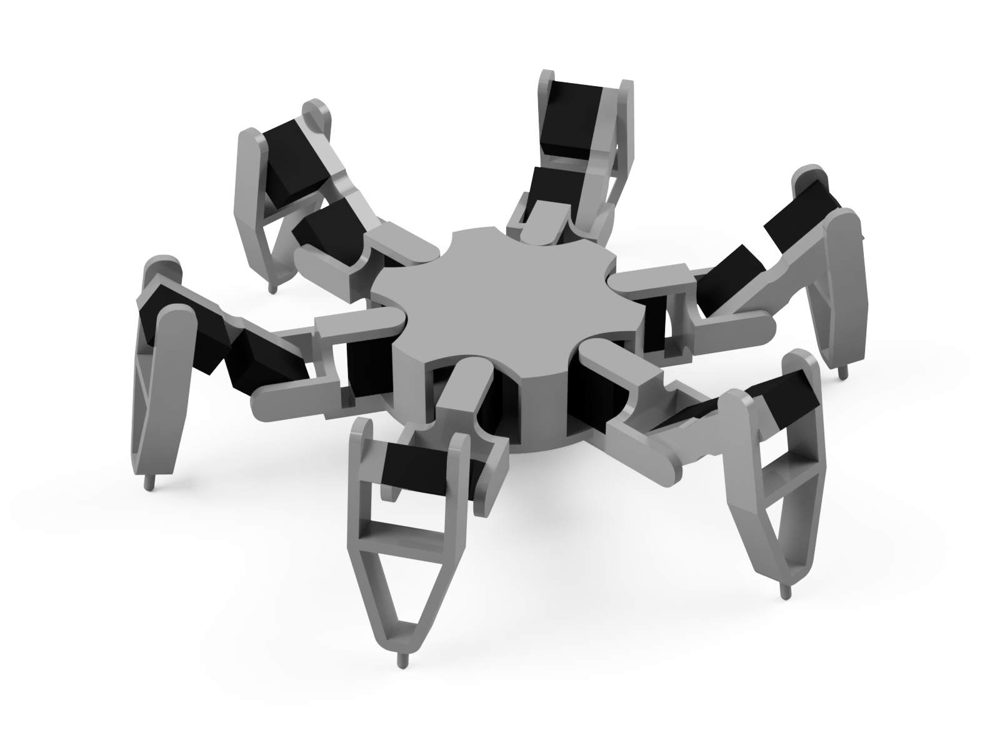
Mým hlavním cílem je vytvořit hexapoda postaveného na Raspberry Pi 5, který bude splňovat následující: My main goal is to create a hexapod built on a Raspberry Pi 5, which will meet the following criteria:
- Chůze v libovolném směru bez nutnosti otáčet tělo, tedy "krabí" chůze. Walking in any direction without the need to rotate the body, i.e., "crab" walking.
- Možnost přepnout mód chůze na pohyb dopředu a dozadu s běžným zatáčením. The ability to switch the walking mode to forward and backward movement with standard turning.
- Možnost přepínání mezi různými vzory chůze (gaity). The ability to switch between different walking patterns (gaits).
- Náklon těla ve třech osách (roll, pitch, yaw) a jeho posun ve třech osách (x, y, z). Body tilt in three axes (roll, pitch, yaw) and its translation in three axes (x, y, z).
- Schopnost provádět všechny výše zmíněné náklony a posuny současně, a to i během chůze. The ability to perform all the aforementioned tilts and translations simultaneously, even while walking.
- Možnost konstrukci vytisknout na 3D tiskárně Bambu Lab A1 mini (tisková plocha 180 × 180 mm). The ability to print the structure on a Bambu Lab A1 mini 3D printer (build volume 180 × 180 mm).
- K robotovi chci navíc sestrojit dálkový ovladač, který bude postavený na Arduinu a bude komunikovat přes Bluetooth. Additionally, I want to build a remote control for the robot, which will be based on Arduino and will communicate via Bluetooth.
Dálkové ovládání hexapoda Hexapod remote control
Cílem bylo navrhnout ovladač, který mi poskytne kontrolu nad všemi pohyby robota. Měl by umožňovat ovládat následující: The goal was to design a remote control that gives me control over all the robot's movements. It should allow controlling the following:
- pohyb ve všech směrech, movement in all directions,
- otáčení těla, body rotation,
- frekvenci chůze, walking frequency,
- výšku kroku, step height,
- přepínání mezi různými vzory chůze (gaity), switching between different walking patterns (gaits),
- náklony těla (roll, pitch a yaw), body tilt (roll, pitch and yaw),
- posuny těla doleva, doprava, nahoru a dolů (bez odlepení nohou od země), body translations left, right, up and down (without lifting the legs off the ground),
- postavení a posazení robota, standing up and sitting down the robot,
- vypnutí robota. turning off the robot.
Mozkem ovladače bude Arduino Mega 2560 PRO. Ke komunikaci s Raspberry Pi 5, které se nachází v hexapodovi, použiji Bluetooth modul. Nastavené hodnoty se budou zobrazovat na OLED displeji. Zařízení je napájeno třemi AA bateriemi, jejichž napětí zvyšuji na 5 V pomocí step-up modulu. Celý tento projekt jsem se rozhodl integrovat na vlastní DPS (desku plošných spojů). The brain of the remote control will be an Arduino Mega 2560 PRO. To communicate with the Raspberry Pi 5 located in the hexapod, I will use a Bluetooth module. The set values will be displayed on an OLED display. The device is powered by three AA batteries, the voltage of which I step up to 5 V using a step-up module. I decided to integrate this entire project onto a custom PCB (printed circuit board).
Návrh DPS v programu KiCAD PCB design in KiCAD
Desku jsem navrhoval v bezplatném programu KiCAD. Prvním krokem byla tvorba schématu, kde se definují vývody použitých součástek a jejich propojení. Mnohé součástky má KiCAD v základu (tlačítka, rezistory, potenciometry), pro jiné je nutné schéma vytvořit nebo stáhnout. Schéma Arduina jsem stáhl z tohoto GitHub repozitáře. I designed the board in the free software KiCAD. The first step was to create a schematic, where the pins of the components used and their connections are defined. KiCAD has many components by default (buttons, resistors, potentiometers), for others it is necessary to create or download the schematic. I downloaded the Arduino schematic from this GitHub repository.
Pro zjednodušení jsem schémata složitějších modulů (joystick, Bluetooth, měnič napětí) nahradil standardními kolíkovými lištami (např. Conn_01x05_Socket pro joystick). Spoje k Arduinu jsem volil tak, aby byly vývody fyzicky blízko u sebe, což mi později velmi usnadnilo trasování desky. Jelikož logika Bluetooth modulu funguje na 3,3 V, bylo navíc nutné napětí z Arduina snížit pomocí napěťového děliče.
For simplicity, I replaced the schematics of more complex modules (joystick, Bluetooth, voltage converter) with standard pin headers (e.g., Conn_01x05_Socket for the joystick). I chose the connections to the Arduino so that the pins were physically close to each other, which made routing the board much easier later on. Since the Bluetooth module logic operates at 3.3 V, it was also necessary to step down the voltage from the Arduino using a voltage divider.
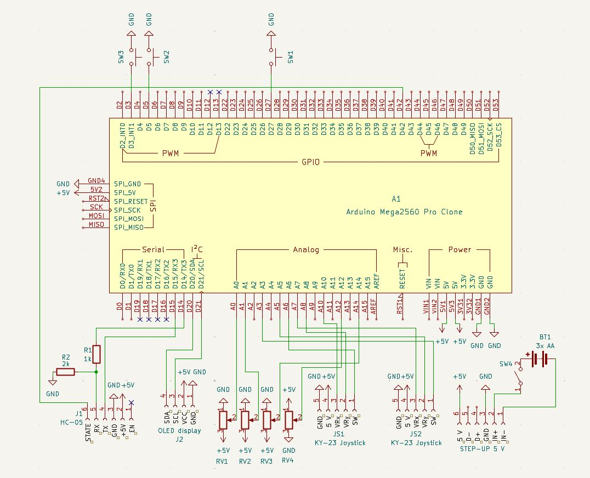
Druhým krokem byl samotný návrh fyzické desky (v Editoru DPS). Zde je nutné každému symbolu přiřadit pouzdro (footprint), které definuje rozměry součástky, rozteče vývodů a montážní otvory, a následně mezi jednotlivými piny nakreslit vodivé spoje. Pouzdro joysticku jsem tvořil manuálně podle technického nákresu. Pouzdro Arduina se nacházelo ve stejném GitHub repozitáři jako jeho schéma a pouzdra kolíkových lišt, tlačítek, potenciometrů a rezistorů již KiCAD obsahuje. The second step was the actual design of the physical board (in the PCB Editor). Here, it is necessary to assign a footprint to each symbol, which defines the dimensions of the component, pin spacing, and mounting holes, and then draw conductive traces between the individual pins. I created the joystick footprint manually according to the technical drawing. The Arduino footprint was in the same GitHub repository as its schematic, and the footprints for pin headers, buttons, potentiometers, and resistors are already included in KiCAD.
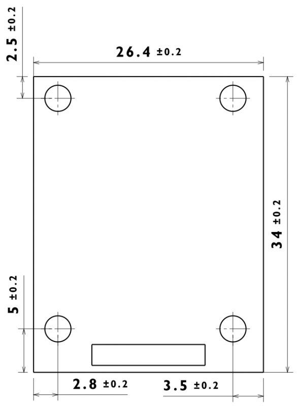
Zvolil jsem šířku spojů 0,8 mm a izolační mezeru 0,5 mm. Protože jsem vyráběl pouze jednovrstvou DPS (kde se cesty nesmí křížit), byl proces poměrně složitý. Abych si ušetřil trasování zemnících spojů, využil jsem funkci rozlité mědi (rozlitá zem). Zbytkové "ostrovy" země, které se s hlavní plochou nespojily, jsem vyřešil pomocí jumperů (propojení drátkem), které jsem připájel z vrchní strany desky. Jelikož měď rychle odvádí teplo, použil jsem pro usnadnění pájení spojů připojených k zemi termální odlehčení s krčky o šířce 0,65 mm s mezerou 0,65 mm. I chose a trace width of 0.8 mm and an isolation gap of 0.5 mm. Because I was only making a single-layer PCB (where traces must not cross), the process was quite complex. To save myself the trouble of routing ground connections, I used the copper pour (ground plane) function. Residual "islands" of ground that did not connect with the main plane were resolved using jumpers (wire links), which I soldered from the top side of the board. Since copper conducts heat away quickly, I used thermal reliefs with 0.65 mm wide spokes and a 0.65 mm gap to facilitate soldering of the connections to the ground plane.

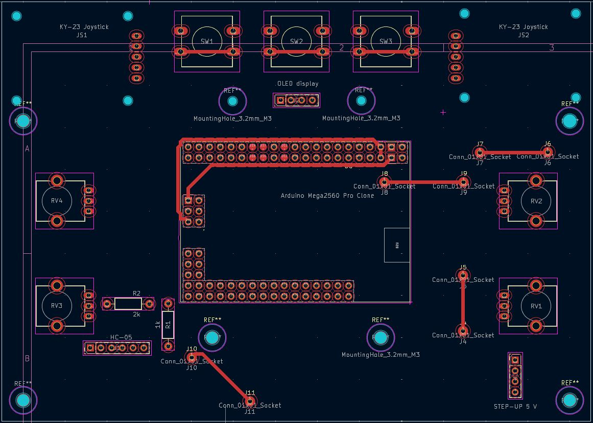
Výroba DPS na CNC frézce PCB manufacturing on a CNC router
Z KiCADu jsem vyexportoval výrobní data (.gbr pro cesty a ořez, .drl pro vrty). Příprava frézování (rychlost, hloubka...) a nastavení nástrojů probíhaly v softwaru MakeraCAM. Protože se frézuje spodní strana desky, musela být data zrcadlově převrácena. Za obrovskou pomoc a předání zkušeností v této fázi projektu bych rád poděkoval panu Ing. Krištofu Pučejdlovi. I exported the manufacturing data from KiCAD (.gbr for traces and edge cuts, .drl for drills). The preparation for milling (speed, depth...) and tool setup took place in the MakeraCAM software. Because the bottom side of the board is milled, the data had to be mirrored. I would like to thank Ing. Krištof Pučejdl for his tremendous help and for sharing his experience during this phase of the project.

K výrobě posloužila školní CNC frézka Carvera Air. Desku kuprextitu (15 × 10 cm) jsme k podložce zafixovali oboustrannou lepicí páskou. The school's Carvera Air CNC milling machine was used for manufacturing. We fixed the copper-clad board (15 × 10 cm) to the bed with double-sided tape.
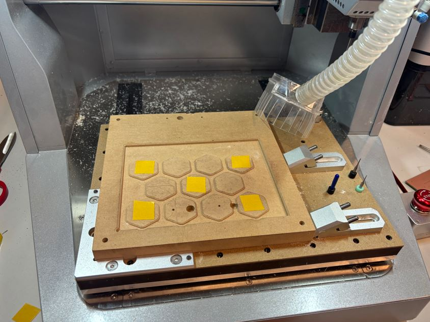
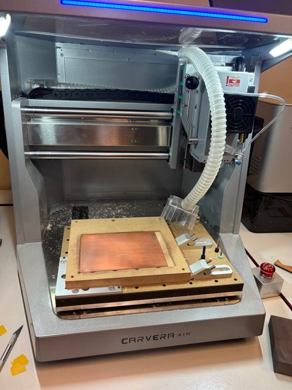
Výroba probíhala ve čtyřech krocích: vyvrtání malých otvorů a předvrtání těch větších, vyfrézování měděných spojů, rozšíření otvorů větším vrtákem a na závěr vyříznutí vnějšího obrysu desky. Manufacturing took place in four steps: drilling small holes and pre-drilling the larger ones, milling the copper traces, enlarging the holes with a larger drill bit, and finally cutting out the outer contour of the board.

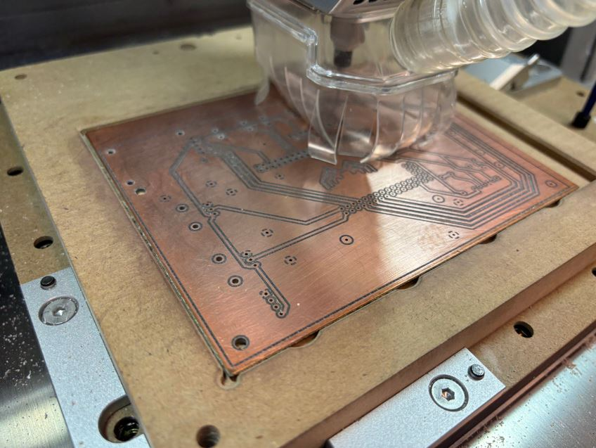
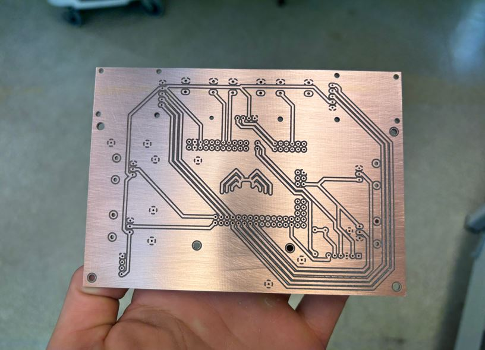
Osazování součástkami a pájení Component placement and soldering
Seznam použitých součástek: List of components used:
- Arduino Mega 2560 PRO (ATmega2560) Arduino Mega 2560 PRO (ATmega2560)
- I2C OLED displej 1,3" (bílý, 128 × 64 px) I2C OLED display 1.3" (white, 128 × 64 px)
- 2× KY-023 Joystick s tlačítkem 2× KY-023 Joystick with button
- 3× Tlačítko TC-1212T (12 × 12 × 7,3 mm) 3× Push button TC-1212T (12 × 12 × 7.3 mm)
- 4× Vertikální potenciometr RV09 10k 4× Vertical potentiometer RV09 10k
- Bluetooth modul HC-05 Bluetooth module HC-05
- Step-up DC-DC měnič (z 1-5 V na 5 V, 500 mA) Step-up DC-DC converter (from 1-5 V to 5 V, 500 mA)
- Držák na 3× AA baterie + baterie samotné Battery holder for 3× AA batteries + batteries themselves
- Kolébkový přepínač (10 A AC) Rocker switch (10 A AC)
- Sada malých M2 šroubků (délka 4 až 20 mm) Set of small M2 screws (length 4 to 20 mm)
- Dutinkové a kolíkové lišty Female and male pin headers
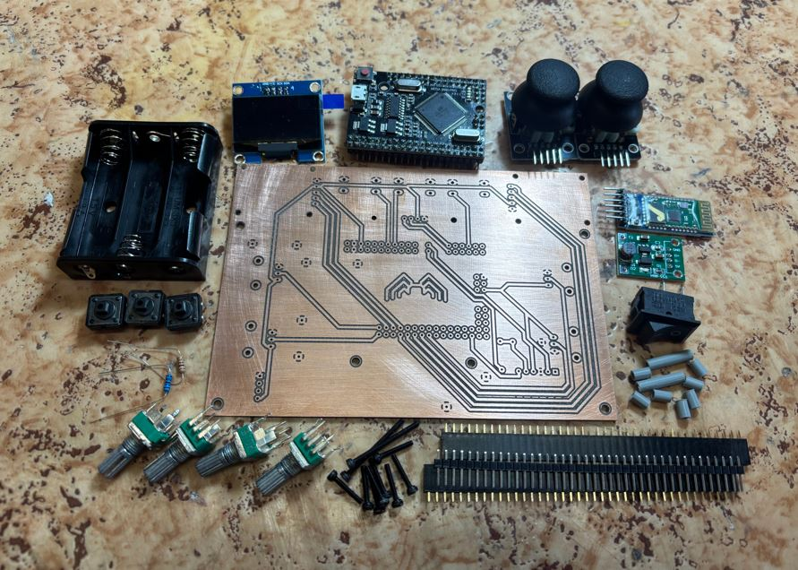
Pro pájení jsem použil 16 let starou sadu ROTHENBERGER od dědy. Nástroj s velkým hrotem a hrubou pájkou (1,5 mm) nebyl na drobnou elektroniku vůbec vhodný. Největší a téměř fatální chybou však bylo použití tavidla z této sady. Bylo to totiž instalatérské tavidlo, které je elektricky vodivé. For soldering, I used a 16-year-old ROTHENBERGER soldering kit from my grandfather. A tool with a large tip and thick solder wire (1.5 mm) was not suitable for tiny electronics at all. The biggest and almost fatal mistake, however, was using the flux from this kit. It was a plumber's flux, which is electrically conductive.
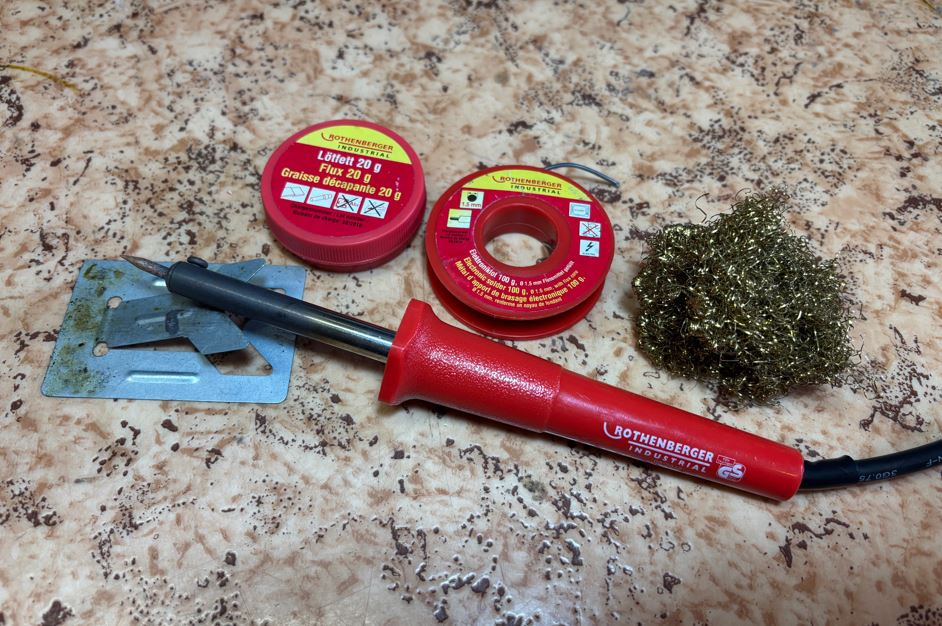
Součástky (tlačítka, rezistory, potenciometry) jsem pájel přímo do desky. Moduly a displej se zasouvají do předem připájených dutinkových lišt, takže je lze kdykoliv vyjmout. Joysticky jsou drženy nad deskou pomocí 4 mm vysokých spacerů tištěných na 3D tiskárně, které se následně prošroubují M2 × 8mm šroubky a na druhé straně desky upevní maticí. Stejným způsobem je displej držen ve výšce 16 mm pomocí šroubků M2 × 20mm. Pro upevnění držáku baterek jsem v DPS navrhl dva otvory pro přišroubování, nakonec jsem ale použil tavné lepidlo. I soldered the components (buttons, resistors, potentiometers) directly onto the board. Modules and the display are plugged into pre-soldered female headers, so they can be removed at any time. The joysticks are held above the board using 4 mm high spacers printed on a 3D printer, which are then screwed through with M2 × 8mm screws and secured with a nut on the other side of the board. In the same way, the display is held at a height of 16 mm using M2 × 20mm screws. To attach the battery holder, I designed two mounting holes in the PCB, but in the end I used hot melt adhesive.


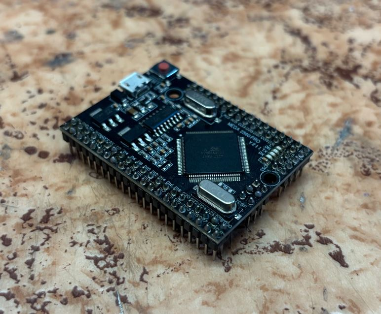

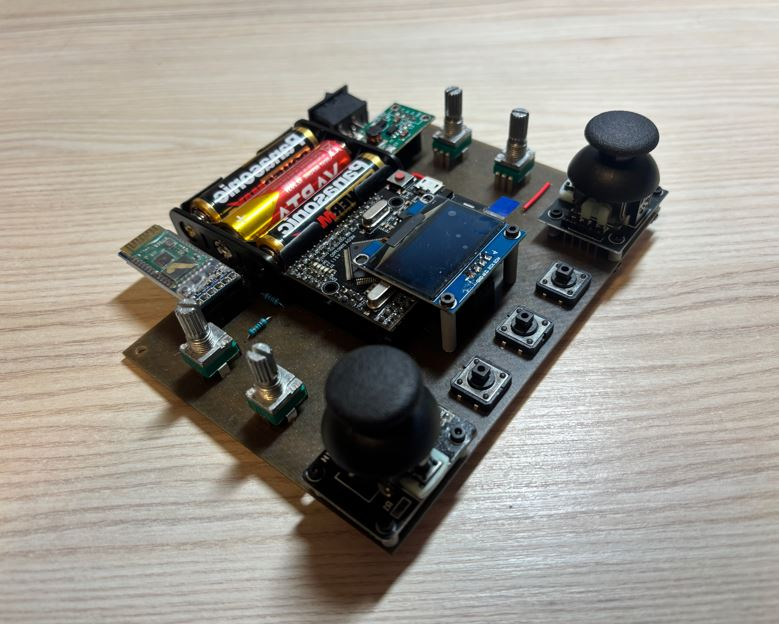
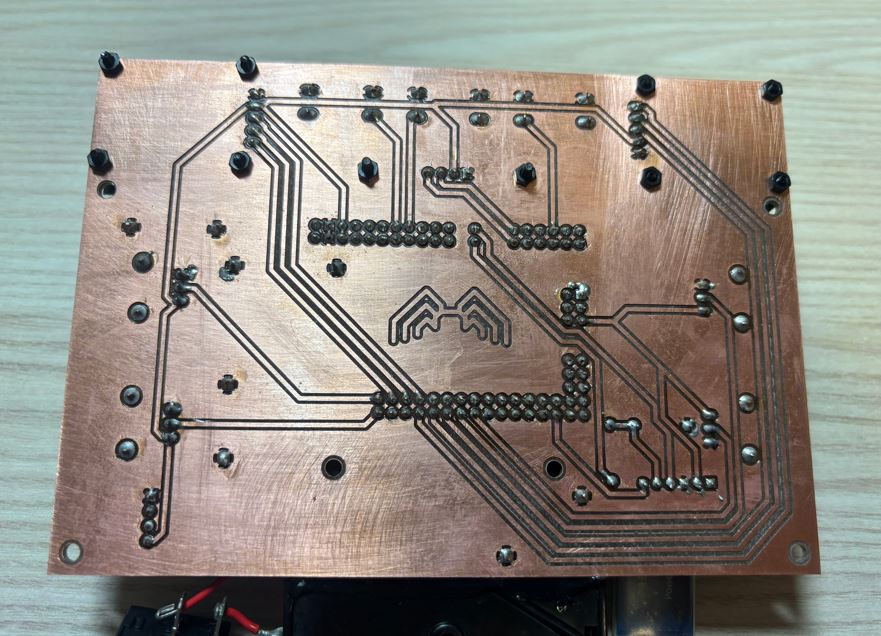
Během manipulace s deskou před přišroubováním joysticků se mi bohužel podařilo jeden joystick odtrhnout i s měděnými cestami. Spoje jsem musel nahradit drátky. While handling the board before screwing the joysticks on, I unfortunately managed to tear off one joystick along with the copper traces. I had to replace the connections with wires.
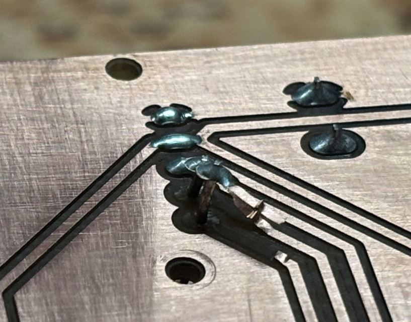
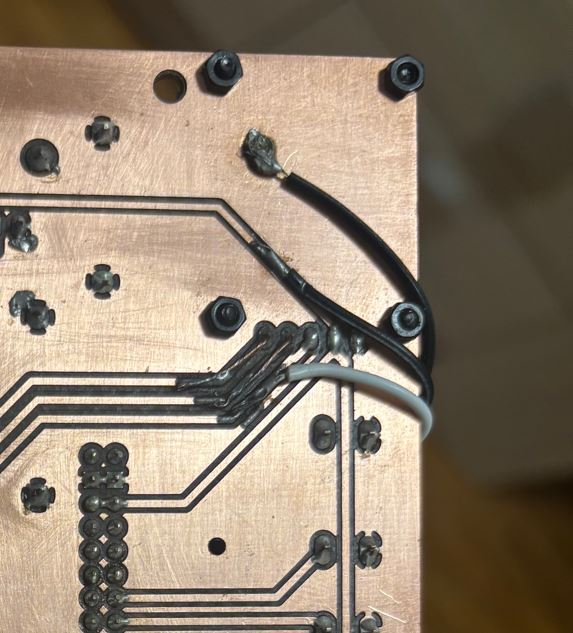
Problémy s tavidlem Problems with flux
Po prvním zapojení se Arduino chovalo naprosto nevyzpytatelně. Napětí na analogových vstupech kolísalo mezi 1 až 3 volty, když mělo být 5. Postupně zhasínaly různé moduly, až přestaly svítit i indikační LED přímo na Arduinu. Po hodinách zoufalého debugování jsem zjistil příčinu: vodivé zbytky tavidla tvořily zkraty a parazitní napěťové děliče. After the first power-up, the Arduino behaved completely erratically. The voltage on the analog inputs fluctuated between 1 and 3 volts when it should have been 5. Gradually, various modules turned off until even the indicator LEDs directly on the Arduino stopped shining. After hours of desperate debugging, I discovered the cause: conductive flux residue was creating short circuits and parasitic voltage dividers.
Následoval drastický pokus o záchranu projektu. Celou desku i s připájenými součástkami jsem polil 99% isopropylalkoholem a vydrhnul kartáčkem. Arduino si navíc prošlo půlhodinovou koupelí v horké vodě s Jarem. Po důkladném vysušení fénem obvod zázračně ožil a plně funguje. A drastic attempt to save the project followed. I poured 99% isopropyl alcohol over the entire board with the soldered components and scrubbed it with a brush. The Arduino also went through a half-hour bath in hot water with dish soap. After thorough drying with a hairdryer, the circuit miraculously came to life and works perfectly.
CAD návrh CAD design
Krabičku jsem modeloval ve Fusion 360 s ohledem na příjemné držení v rukou a co nejmenší rozměry. DPS má v rozích otvory o průměru 2 mm, díky čemuž ji lze v krabičce uchytit pomocí čtyř M2 × 6 mm šroubků. Zespodu krabičky je otvor o rozměrech 20 × 12,5 mm, do kterého je zatlačen kolébkový spínač. Víko bylo nutné ladit na několik pokusů, aby všechny otvory perfektně lícovaly s ovládacími prvky. Abych viděl na LED měniče napětí a Bluetooth modulu, udělal jsem na obou stranách krytu otvory. Prázdné místo na krytu jsem vyplnil logem ČVUT, které jsem pomocí funkce Canvas vložil do roviny krytu a obkreslil pomocí Fit Point Spline. Víko je ke krabičce připevněno pomocí čtyř M2 × 8 mm šroubků. I modeled the enclosure in Fusion 360 with a focus on comfortable grip and minimum dimensions. The PCB has 2 mm diameter holes in the corners, allowing it to be secured in the box using four M2 × 6 mm screws. On the bottom of the box, there is a 20 × 12.5 mm hole into which the rocker switch is pressed. The lid had to be fine-tuned over several attempts so that all the holes perfectly aligned with the controls. In order to see the LEDs of the voltage converter and the Bluetooth module, I made holes on both sides of the cover. I filled the empty space on the cover with the CTU logo, which I inserted into the cover plane using the Canvas function and traced using Fit Point Spline. The lid is attached to the box using four M2 × 8 mm screws.


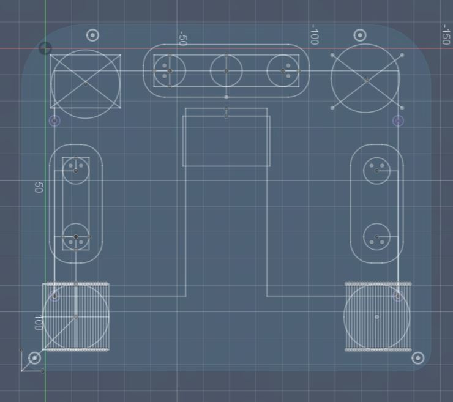
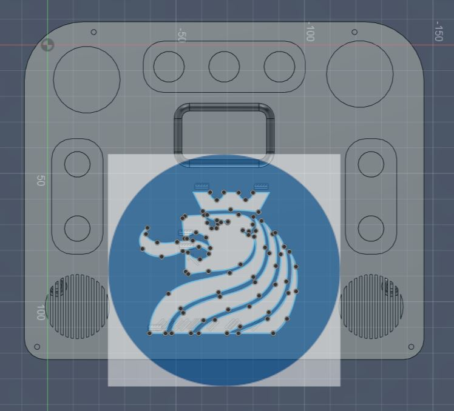

Jelikož se tlačítka a potenciometry nacházejí pod úrovní víka, bylo nutné vymodelovat nástavce. Knoflíky pro tlačítka jsem stáhl z GrabCAD a následně jsem je ve Fusion 360 prodloužil na 16 mm. Nástavec na potenciometry jsem tvořil sám. Do potenciometru zapadne díky kruhovému otvoru o průměru 6,1 mm, ve kterém je příčka o tloušťce 0,9 mm. Since the buttons and potentiometers are located below the level of the lid, it was necessary to model extensions. I downloaded the push button caps from GrabCAD and then lengthened them to 16 mm in Fusion 360. I created the potentiometer knobs myself. It fits into the potentiometer thanks to a 6.1 mm circular hole with a 0.9 mm thick web inside.
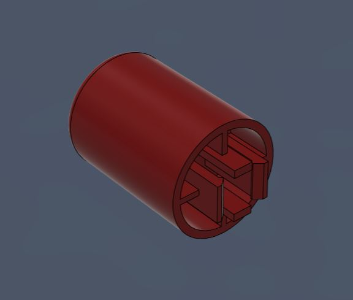

3D tisk 3D printing
Hotové modely jsem vyexportoval z Fusionu (Utilities -> 3D print) do formátu 3MF a naslicoval v programu Bambu Studio. Jako materiál jsem vybral PLA a tiskl jsem na tiskárně Bambu Lab A1 Mini s 0,4 mm tryskou při následujícím nastavení: I exported the finished models from Fusion (Utilities -> 3D print) into 3MF format and sliced them in Bambu Studio. I chose PLA as the material and printed on the Bambu Lab A1 Mini with a 0.4 mm nozzle using the following settings:
- Profil: 0,20 mm Standard @BBL A1M Profile: 0.20 mm Standard @BBL A1M
- Nozzle temperature (teplota trysky): 210 °C Nozzle temperature: 210 °C
- Bed temperature (teplota podložky): 65 °C Bed temperature: 65 °C
- Wall loops (perimetry): 2 Wall loops: 2
- Sparse infill density (hustota výplně): 15 % Sparse infill density: 15 %
- Sparse infill pattern (vzor výplně): Gyroid Sparse infill pattern: Gyroid
- Outer wall speed (rychlost vnější stěny): 60 mm/s Outer wall speed: 60 mm/s
Zbylá nastavení jsem ponechal na výchozích hodnotách vybraného tiskového profilu. I left the rest of the settings at the defaults for the selected printing profile.
Pro otvor kolébkového spínače bylo potřeba vygenerovat podpěry. Zvolil jsem následující nastavení podpěr: Supports needed to be generated for the rocker switch hole. I chose the following support settings:
- Type (typ): Tree (auto) Type: Tree (auto)
- Top Z distance (mezera v ose Z): 0,25 mm Top Z distance: 0.25 mm
Ostatní nastavení podpěr zůstalo výchozí. Other support settings remained at defaults.
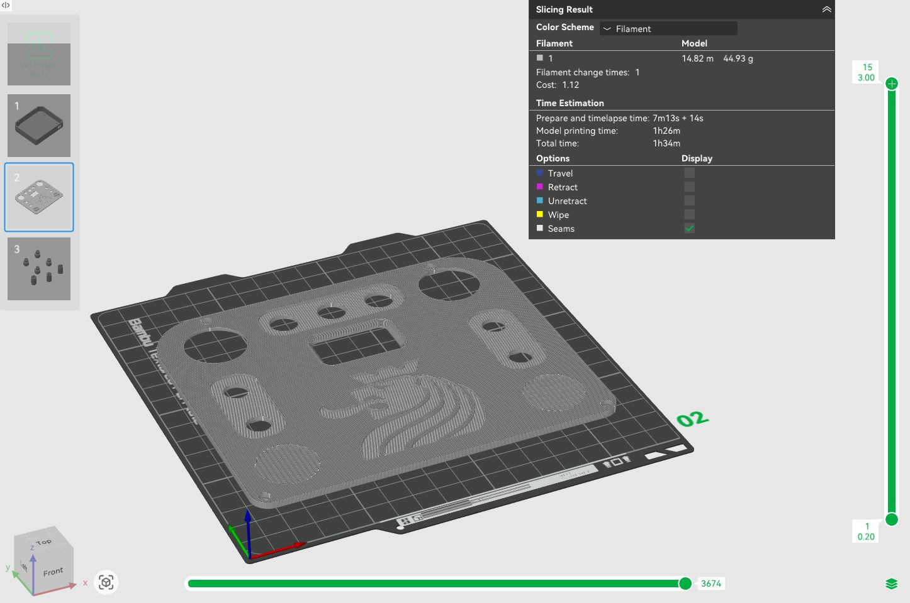
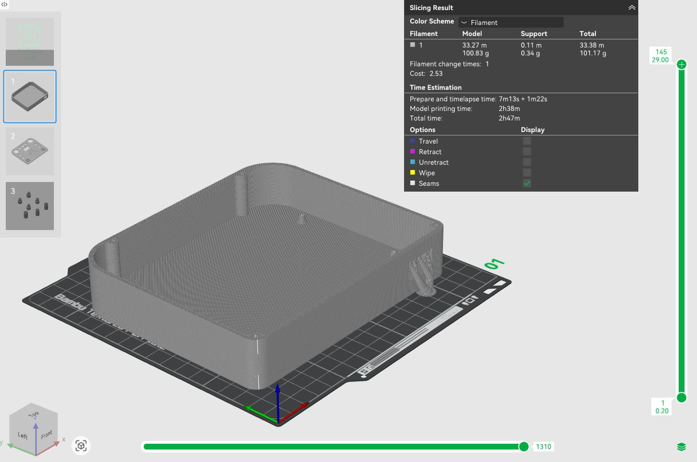
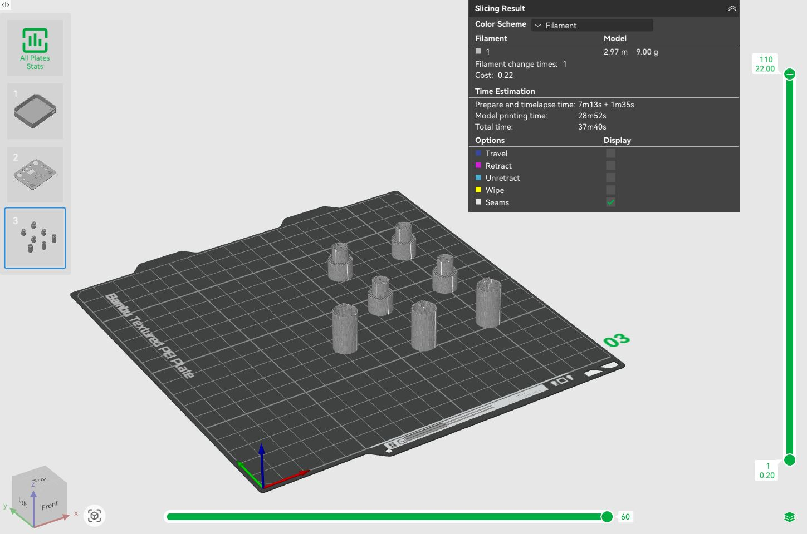


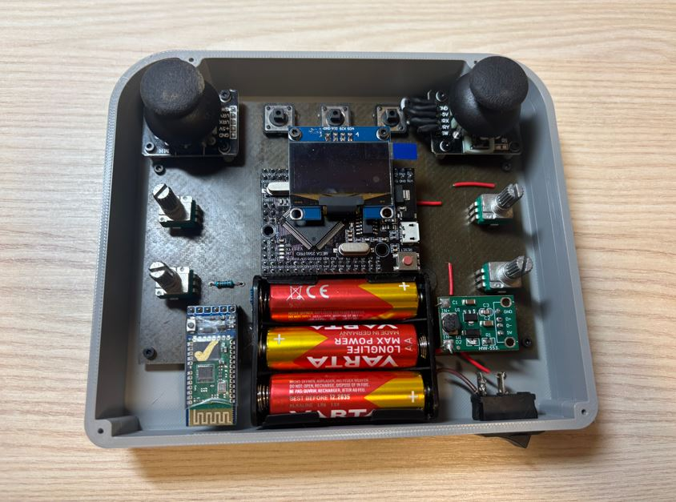
Programování Programming
Následující kód zajišťuje čtení analogových a digitálních vstupů, jejich vizualizaci na OLED displeji a následné odesílání dat hexapodovi přes Bluetooth. Poloha obou joysticků je na obrazovce znázorněna pohyblivými kroužky uvnitř kružnic, které se při stisku vybarví. V horní části displeje se indikuje stav trojice tlačítek, zatímco střední sekce zobrazuje hodnoty ze čtyř potenciometrů v podobě sloupcových grafů. Protokol a struktura přenášených dat jsou detailněji rozebrány v části Komunikace mezi ovladačem a hexapodem. Kód jsem psal v prostředí Arduino IDE. The following code handles reading analog and digital inputs, their visualization on the OLED display, and subsequently sending data to the hexapod via Bluetooth. The position of both joysticks is represented on the screen by moving rings inside circles, which fill in when pressed. The top of the display indicates the state of the three buttons, while the middle section shows values from the four potentiometers as bar graphs. The protocol and structure of the transmitted data are discussed in more detail in the Communication between remote and hexapod section. I wrote the code in the Arduino IDE environment.
#include <U8g2lib.h> // OLED
#include <Wire.h> // I2C
// Display object
U8G2_SH1106_128X64_NONAME_F_HW_I2C u8g2(U8G2_R0, /* reset=*/ U8X8_PIN_NONE);
// Button pins
const int pinSW1 = 27;
const int pinSW2 = 5;
const int pinSW3 = 3;
// Potentiometer pins
const int pinRV1 = A0;
const int pinRV2 = A1;
const int pinRV3 = A14;
const int pinRV4 = A12;
// Left joystick
const int joy1X = A10;
const int joy1Y = A8;
const int joy1Btn = A6;
// Right joystick
const int joy2X = A7;
const int joy2Y = A5;
const int joy2Btn = A3;
// Timing
constexpr float FREQ = 50.0f;
volatile bool sample_due = false;
const float EMA_ALPHA = 0.30f;
// Setup Timer1 for CTC mode
void setupTimer1CTC(float hz) {
const uint16_t presc_vals[5] = {1,8,64,256,1024};
const uint16_t presc_bits[5] = {_BV(CS10), _BV(CS11), _BV(CS11)|_BV(CS10), _BV(CS12), _BV(CS12)|_BV(CS10)};
uint16_t chosen = 0; uint32_t ocr = 0;
for(int i = 0;i < 5; i++){
ocr = (uint32_t)(F_CPU/(presc_vals[i]*hz)) - 1U;
if (ocr <= 65535U && ocr >= 1U) {
chosen = presc_bits[i];
break;
}
}
if (!chosen) {
uint32_t t = (uint32_t)(F_CPU/(1024.0*hz)) - 1U;
if (t > 65535U) t = 65535U;
ocr = t;
chosen = _BV(CS12)| _BV(CS10);
}
noInterrupts();
TCCR1A = 0;
TCCR1B = 0;
TCNT1 = 0;
OCR1A = (uint16_t)ocr;
TCCR1B |= _BV(WGM12) | chosen;
TIMSK1 |= _BV(OCIE1A);
interrupts();
}
// Timer interrupt
ISR(TIMER1_COMPA_vect) {
sample_due = true;
}
// Send data frame
static inline void sendFrameHW(const uint16_t v[8], uint8_t buttons) {
const uint8_t LEN = 8*2 + 1; // Payload length
uint8_t sum = 0; // Checksum
auto put = [&](uint8_t b ){
Serial3.write(b);
sum = (uint8_t)(sum + b);
};
put(0xAA); // Start byte
put(LEN); // Data length
for (int i = 0; i < 8; i++) {
put((uint8_t)(v[i] & 0xFF)); // Low byte
put((uint8_t)(v[i] >> 8)); // High byte
}
put(buttons);
Serial3.write(sum);
}
void setup() {
Serial.begin(115200);
Serial3.begin(115200);
delay(50);
pinMode(pinSW1, INPUT_PULLUP);
pinMode(pinSW2, INPUT_PULLUP);
pinMode(pinSW3, INPUT_PULLUP);
pinMode(joy1Btn, INPUT_PULLUP);
pinMode(joy2Btn, INPUT_PULLUP);
u8g2.setBusClock(400000); // Fast I2C
u8g2.begin();
setupTimer1CTC(FREQ);
}
void loop() {
// Store display values between cycles
static int drawJ1X = 20, drawJ1Y = 32, drawJ2X = 106, drawJ2Y = 32;
static int h1 = 0, h2 = 0, h3 = 0, h4 = 0;
static bool btn1 = false, btn2 = false, btn3 = false;
static bool j1Btn = false, j2Btn = false;
// Store smoothed potentiometer values
static float smoothRV1 = -1.0f;
static float smoothRV2 = -1.0f;
static float smoothRV3 = -1.0f;
static float smoothRV4 = -1.0f;
bool due;
noInterrupts();
due = sample_due;
if (due) sample_due = false; // Reset if true
interrupts();
// Read inputs and send using Bluetooth
if (due) {
// Read values
int rawRV1 = analogRead(pinRV1);
int rawRV2 = analogRead(pinRV2);
int rawRV3 = 1023 - analogRead(pinRV3);
int rawRV4 = analogRead(pinRV4);
// Initialize first read
if (smoothRV1 < 0.0f) {
smoothRV1 = rawRV1;
smoothRV2 = rawRV2;
smoothRV3 = rawRV3;
smoothRV4 = rawRV4;
} else {
// EMA smoothing
smoothRV1 = (EMA_ALPHA * rawRV1) + ((1.0f - EMA_ALPHA) * smoothRV1);
smoothRV2 = (EMA_ALPHA * rawRV2) + ((1.0f - EMA_ALPHA) * smoothRV2);
smoothRV3 = (EMA_ALPHA * rawRV3) + ((1.0f - EMA_ALPHA) * smoothRV3);
smoothRV4 = (EMA_ALPHA * rawRV4) + ((1.0f - EMA_ALPHA) * smoothRV4);
}
// Convert to integers
unsigned int valRV1 = (unsigned int)smoothRV1;
unsigned int valRV2 = (unsigned int)smoothRV2;
unsigned int valRV3 = (unsigned int)smoothRV3;
unsigned int valRV4 = (unsigned int)smoothRV4;
// Convert values to pixels
h1 = (valRV1 * 36) >> 10;
h2 = (valRV2 * 36) >> 10;
h3 = (valRV3 * 36) >> 10;
h4 = (valRV4 * 36) >> 10;
// Read button presses
btn1 = !digitalRead(pinSW1);
btn2 = !digitalRead(pinSW2);
btn3 = !digitalRead(pinSW3);
j1Btn = !digitalRead(joy1Btn);
j2Btn = !digitalRead(joy2Btn);
// Invert Joy 1 axes
long dX1 = 512 - analogRead(joy1X);
long dY1 = 512 - analogRead(joy1Y);
long distSq1 = dX1 * dX1 + dY1 * dY1;
if (distSq1 > 40000L) j1Btn = false;
if (distSq1 > 262144L) {
long dist1 = sqrt(distSq1);
dX1 = (dX1 * 512) / dist1;
dY1 = (dY1 * 512) / dist1;
}
drawJ1X = 20 + (dX1 / 32);
drawJ1Y = 32 + (dY1 / 32);
// Normal Joy 2 axes
long dX2 = analogRead(joy2X) - 512;
long dY2 = analogRead(joy2Y) - 512;
long baseDistSq2 = dX2 * dX2 + dY2 * dY2;
if (baseDistSq2 > 40000L) j2Btn = false;
long distSq2 = dX2 * dX2 + dY2 * dY2;
if (distSq2 > 262144L) {
long dist2 = sqrt(distSq2);
dX2 = (dX2 * 512) / dist2;
dY2 = (dY2 * 512) / dist2;
}
drawJ2X = 106 + (dX2 / 32);
drawJ2Y = 32 + (dY2 / 32);
// Prepare data for Bluetooth
uint16_t v[8];
v[0] = (uint16_t) constrain(dX1 + 512, 0, 1023);
v[1] = (uint16_t) constrain(dY1 + 512, 0, 1023);
v[2] = (uint16_t) constrain(dX2 + 512, 0, 1023);
v[3] = (uint16_t) constrain(dY2 + 512, 0, 1023);
v[4] = valRV1;
v[5] = valRV2;
v[6] = valRV3;
v[7] = valRV4;
uint8_t buttons = 0;
if (j1Btn) buttons |= (1 << 0);
if (j2Btn) buttons |= (1 << 1);
if (btn1) buttons |= (1 << 2);
if (btn2) buttons |= (1 << 3);
if (btn3) buttons |= (1 << 4);
sendFrameHW(v, buttons);
}
// === BLOCK 2: Render OLED display (~28 FPS, independent of BT) ===
static uint32_t last = 0;
uint32_t now = millis();
if (now - last >= 35) { // 35 ms delay = ~28 FPS
last = now;
u8g2.clearBuffer(); // Clear display buffer
// Outlines for joysticks
u8g2.drawCircle(20, 32, 20);
u8g2.drawCircle(106, 32, 20);
// Left joystick dot
if (j1Btn) u8g2.drawDisc(drawJ1X, drawJ1Y, 4);
else u8g2.drawCircle(drawJ1X, drawJ1Y, 4);
// Right joystick dot
if (j2Btn) u8g2.drawDisc(drawJ2X, drawJ2Y, 4);
else u8g2.drawCircle(drawJ2X, drawJ2Y, 4);
// Graph frames
u8g2.drawFrame(46, 27, 6, 36);
u8g2.drawFrame(56, 27, 6, 36);
u8g2.drawFrame(66, 27, 6, 36);
u8g2.drawFrame(76, 27, 6, 36);
// Graph bars
u8g2.drawBox(46, 63 - h4, 6, h4); // RV4 bar
u8g2.drawBox(56, 63 - h3, 6, h3); // RV3 bar
u8g2.drawBox(66, 63 - h1, 6, h1); // RV1 bar
u8g2.drawBox(76, 63 - h2, 6, h2); // RV2 bar
// Top buttons
if (btn1) u8g2.drawDisc(51, 8, 4); else u8g2.drawCircle(51, 8, 4);
if (btn2) u8g2.drawDisc(64, 8, 4); else u8g2.drawCircle(64, 8, 4);
if (btn3) u8g2.drawDisc(77, 8, 4); else u8g2.drawCircle(77, 8, 4);
u8g2.sendBuffer(); // Send buffer to display
}
}
Hotové dálkové ovládání Finished remote control
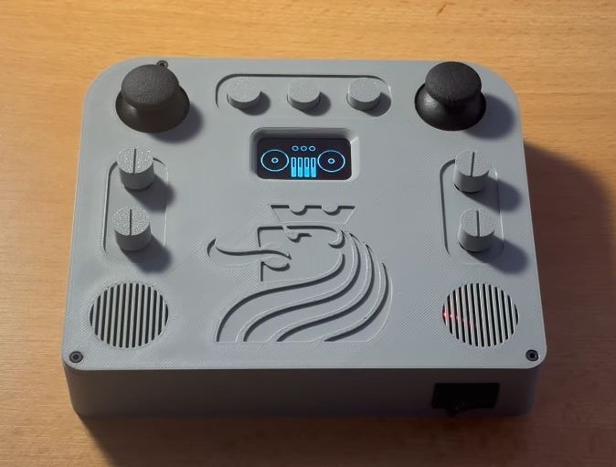
Stojan pro hexapoda Hexapod stand
Stojan mi umožní robota bezpečně programovat a testovat, aniž by se jeho nohy dotýkaly země a hrozilo poškození. Aby byl stojan stabilní a nepřevrhl se, tvoří jeho základnu pětikilový kovový kotouč, ze kterého vychází 21 cm dlouhá kovová tyč. The stand will allow me to safely program and test the robot without its legs touching the ground and risking damage. To make the stand stable and prevent it from tipping over, its base is formed by a five-kilo metal disc, from which a 21 cm long metal rod extends.
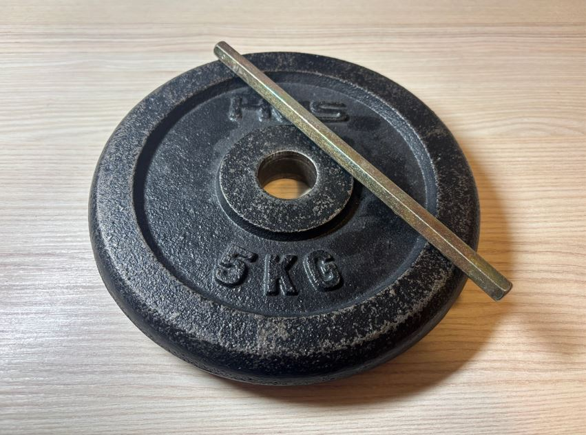
CAD návrh CAD design
Bylo nutné navrhnout tři plastové díly: jeden pro fixaci tyče v čince a dva pro horní část, která bude sloužit jako samotný držák hexapoda. K modelování jsem opět použil Fusion 360. It was necessary to design three plastic parts: one for fixing the rod in the dumbbell and two for the top part, which will serve as the actual hexapod holder. I again used Fusion 360 for modeling.
Před tiskem rozměrnějších dílů doporučuji provést malý testovací tisk, abyste ověřili správné tolerance otvorů pro šrouby. Jelikož už ale mám tiskárnu otestovanou z dřívějška, tento krok jsem přeskočil. Pro šrouby M3 spojující horní dva díly jsem použil průměr otvoru 3 mm. Během prvního tisku horního držáku jsem udělal fixační zobáčky stejně velké jako otvory v základně hexapoda a díly tak do sebe nezapadaly. Před druhým tiskem jsem proto zobáčky pomocí funkce Offset Face o 0,15 mm zmenšil. Before printing larger parts, I recommend doing a small test print to verify the correct tolerances of the screw holes. Since I had already tested the printer previously, I skipped this step. For the M3 screws connecting the top two parts, I used a hole diameter of 3 mm. During the first print of the top holder, I made the fixing tabs exactly the same size as the holes in the hexapod's base, and thus the parts did not fit together. Therefore, before the second print, I shrunk the tabs by 0.15 mm using the Offset Face function.

3D tisk a sestavení 3D printing and assembly
Hotové modely jsem exportoval (Utilities -> 3D print) do formátu 3MF a připravil k tisku v Bambu Studiu. Jako materiál jsem zvolil PLA. Tiskl jsem na 3D tiskárně Bambu Lab A1 Mini s tryskou o průměru 0,4 mm a s následujícím nastavením: I exported the finished models (Utilities -> 3D print) to 3MF format and prepared them for printing in Bambu Studio. I chose PLA as the material. I printed on a Bambu Lab A1 Mini 3D printer with a 0.4 mm diameter nozzle and the following settings:
- Profil: 0.20 mm Standard @BBL A1M Profile: 0.20 mm Standard @BBL A1M
- Nozzle temperature (teplota trysky): 210 °C Nozzle temperature: 210 °C
- Bed temperature (teplota podložky): 65 °C Bed temperature: 65 °C
- Wall loops (perimetry): 4 Wall loops: 4
- Sparse infill density (hustota výplně): 20 % Sparse infill density: 20 %
- Sparse infill pattern (vzor výplně): Gyroid Sparse infill pattern: Gyroid
- Outer wall speed (rychlost tisku vnější stěny): 60 mm/s Outer wall speed: 60 mm/s
Zbylá nastavení jsem nechal na výchozích hodnotách vybraného tiskového profilu. I left the other settings at the defaults for the selected print profile.

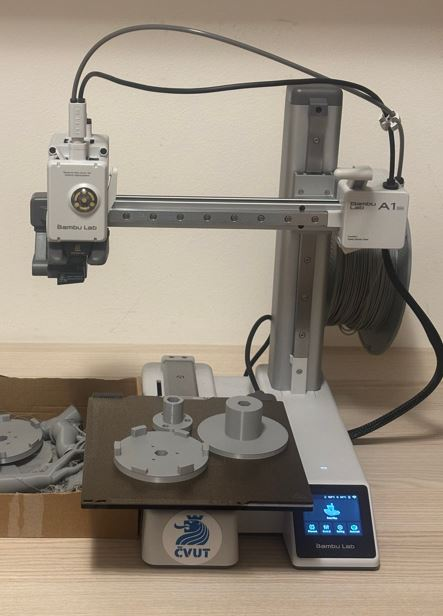
Po sestavení měl spodní plastový díl v otvoru činky drobnou vůli. Vyřešil jsem to tak, že jsem stěny otvoru vyložil igelitovým sáčkem a díl jsem do něj zatlačil pomocí svěráku. Igelit vyplnil volný prostor a stojan teď drží velmi pevně. Horní dva díly jsem sešrouboval pomocí šroubů M3 s délkou 8 mm. After assembly, the bottom plastic part had a slight play in the dumbbell hole. I solved this by lining the walls of the hole with a plastic bag and pressing the part into it using a vise. The plastic bag filled the empty space, and the stand now holds very firmly. I screwed the top two parts together using M3 screws, 8 mm long.
Hotový stojan Finished stand
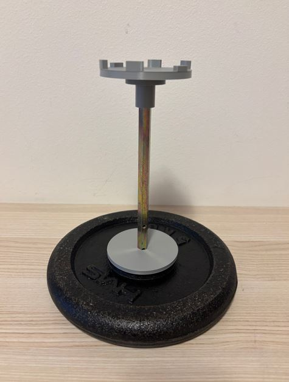
Hexapod Hexapod
Návrh elektroniky Electronics design
Mozkem robota bude Raspberry Pi 5. Pohyb bude zajišťovat osmnáct servomotorů: dvanáct typu MG996R pro klouby coxa a tibia a šest typu TD-8120MG pro femur. K řízení serv pomocí PWM signálu použiji dva moduly PCA9685. Celý projekt bude napájen z 3S Li-Pol baterie s kapacitou 4200 mAh. The brain of the robot will be a Raspberry Pi 5. Movement will be provided by eighteen servo motors: twelve MG996R type for the coxa and tibia joints, and six TD-8120MG type for the femur. To control the servos using a PWM signal, I will use two PCA9685 modules. The entire project will be powered by a 3S Li-Po battery with a capacity of 4200 mAh.
Napájení pro Raspberry Pi a pro aktuátory je odděleno pomocí UBECu a Buck měniče. Obě tyto napájecí větve bude navíc možné nezávisle odpojit pomocí kolébkových přepínačů. Pro základní signalizaci stavu bude hexapod využívat piezobzučák. Power for the Raspberry Pi and for the actuators is separated using a UBEC and a Buck converter. Both of these power branches can also be independently disconnected using rocker switches. For basic status signaling, the hexapod will use a piezo buzzer.
Použité komponenty a materiály Used components and materials
- Raspberry Pi 5 - 8 GB RAM Raspberry Pi 5 - 8 GB RAM
- Buck měnič 9-35 V na 5 V / 5 A - DC-DC (dočasné řešení) Buck converter 9-35 V to 5 V / 5 A - DC-DC (temporary solution)
- Sunrise UBEC 20 A Sunrise UBEC 20 A
- Li-Pol baterie 4200 mAh 3S 35C (70C krátkodobě) BH Power Li-Po battery 4200 mAh 3S 35C (70C short burst) BH Power
- 2× Kolébkový přepínač 2pól. / 3pin 20 A / 12 V DC 2× Rocker switch 2-pole / 3-pin 20 A / 12 V DC
- 2× I2C Modulový driver PCA9685 2× I2C Module driver PCA9685
- 12× servo MG996R (13 kg⋅cm, 180 stupňů) 12× servo MG996R (13 kg⋅cm, 180 degrees)
- 6× servo TD-8120MG (20 kg⋅cm, 180 stupňů) 6× servo TD-8120MG (20 kg⋅cm, 180 degrees)
- Piezobzučák 23 mm SFM-20B 3-24 V / 12 mA Piezo buzzer 23 mm SFM-20B 3-24 V / 12 mA
Návrh v programu KiCAD Design in KiCAD
Schéma zapojení jsem navrhl v programu KiCAD. Symboly pro součástky jako Raspberry Pi (knihovna MCU_Module nebo Connector), kolébkový přepínač (SW_SPST) a baterie (Battery) jsou již součástí základních knihoven programu. Symboly pro specifičtější moduly lze stáhnout z internetu, případně je ve schématu nahradit standardními kolíkovými lištami (např. Conn_01x03_Socket pro serva).
I designed the wiring schematic in KiCAD. Symbols for components like the Raspberry Pi (library MCU_Module or Connector), rocker switch (SW_SPST), and battery (Battery) are already part of the program's basic libraries. Symbols for more specific modules can be downloaded from the internet or replaced in the schematic with standard pin headers (e.g., Conn_01x03_Socket for servos).

CAD návrh CAD design
Pro návrh hexapoda jsem opět použil Fusion 360. For the hexapod design, I again used Fusion 360.
Základna Base
Základna má šestiúhelníkový půdorys a je navržena tak, aby se přesně vešla na tiskovou plochu o rozměrech 18 × 18 cm. Kromě mechanické pevnosti musí mít dostatek prostoru pro baterii, dva PWM moduly PCA9685 pro řízení motorů a šest servomotorů MG996R, které budou zajišťovat horizontální pohyb nohou. The base has a hexagonal floor plan and is designed to fit exactly on an 18 × 18 cm print bed. Besides mechanical strength, it must have enough space for the battery, two PCA9685 PWM modules for motor control, and six MG996R servo motors that will provide the horizontal movement of the legs.
Aby celá hmotnost robota neležela pouze na hřídelích servomotorů, umístím na jejich spodní stranu opěrné ložisko, které převezme část zátěže. Pro úsporu místa a lepší uchycení serva odstraním jeho původní spodní kryt. Místo něj jsem navrhl kryt nový, který již obsahuje prostor pro ložisko a je přímo integrován do těla základny. Servo bude k základně upevněno přes dlouhé šrouby, které držely jeho původní kryt. Moduly PCA9685 přišroubuji pomocí šroubů M2 × 8 mm do otvorů o průměru 2 mm. So that the entire weight of the robot does not rest only on the servo motor shafts, I will place a support bearing on their underside, which will take over part of the load. To save space and for better servo mounting, I will remove its original bottom cover. Instead, I designed a new cover, which already includes space for the bearing and is directly integrated into the body of the base. The servo will be attached to the base using the long screws that held its original cover. I will screw the PCA9685 modules into 2 mm diameter holes using M2 × 8 mm screws.
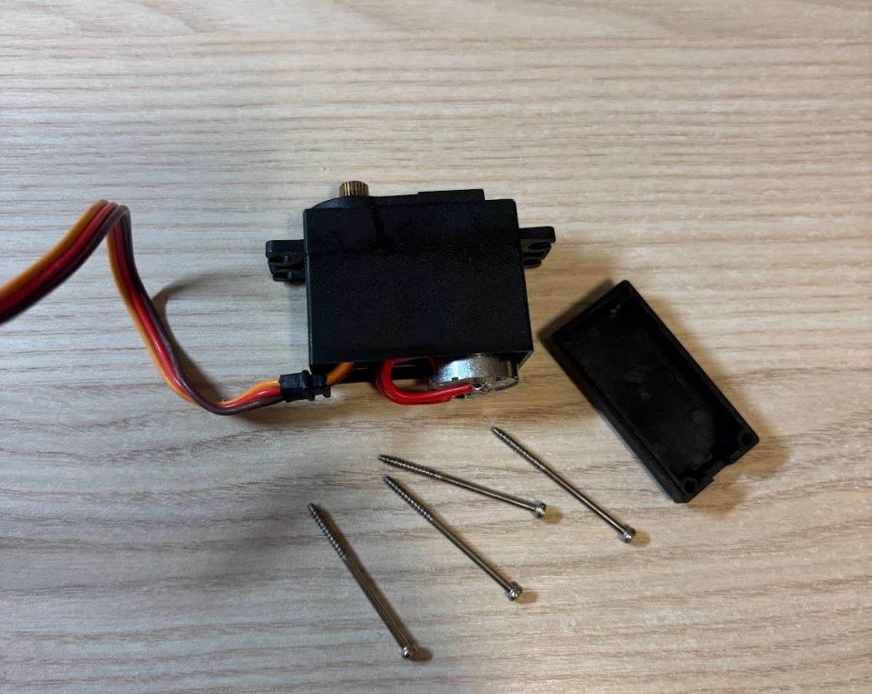
Při tvorbě náčrtu šestiúhelníkové základny jsem pracoval pouze na jedné šestině modelu. Tu jsem následně pětkrát zkopíroval kolem středové osy pomocí nástroje Circular Pattern. When creating the sketch of the hexagonal base, I worked on only one sixth of the model. I then copied this five times around the central axis using the Circular Pattern tool.
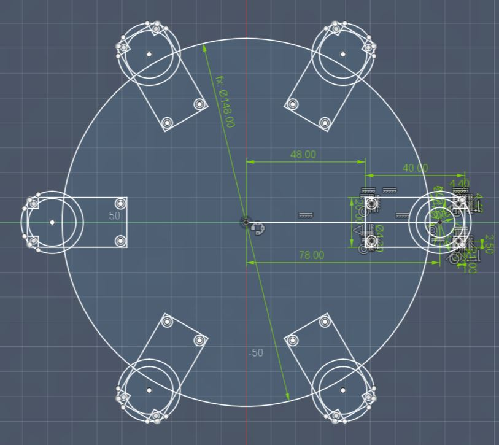

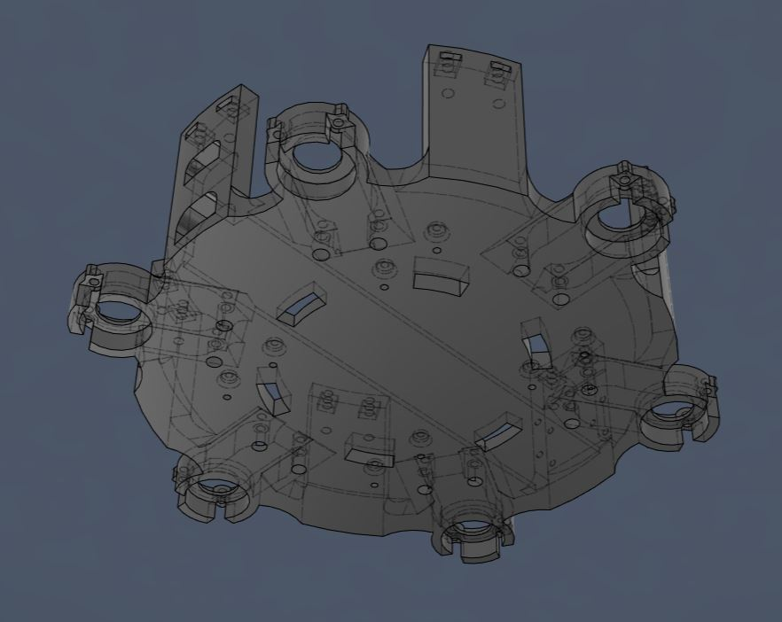
Většina elektroniky je umístěna v prostředním patře těla hexapoda. Bylo tedy nezbytné navrhnout montážní desku, ke které jednotlivé moduly buď přišroubuji, nebo zafixuji pomocí stahovacích pásek. Most of the electronics are located on the middle floor of the hexapod's body. It was therefore necessary to design a mounting plate to which I will either screw the individual modules or fix them using zip ties.
Raspberry Pi, jeho měnič napětí a bzučák se k desce uchytí pomocí šroubů M2 (v desce jsou pro ně připraveny otvory o průměru 2 mm). Měnič napětí pro serva a rozdvojovací konektor baterie budou fixovány stahovacími páskami provlečenými otvory o rozměrech 5 × 2 mm. V desce jsem také vytvořil otvory pro protažení kabelů od Raspberry Pi a baterie do spodního patra k modulům PCA9685. Kolébkové přepínače se vtlačí do výřezů o rozměrech 27 × 12 mm. Obě patra těla budou nakonec spojena pomocí šroubů M3 × 8 mm a matek zapuštěných do tištěných dílů. The Raspberry Pi, its voltage converter, and the buzzer will be attached to the plate using M2 screws (2 mm diameter holes are prepared for them in the plate). The voltage converter for the servos and the battery splitter connector will be fixed with zip ties threaded through 5 × 2 mm holes. I also created holes in the plate to route cables from the Raspberry Pi and battery to the lower floor to the PCA9685 modules. The rocker switches will be pressed into 27 × 12 mm cutouts. Both floors of the body will finally be connected using M3 × 8 mm screws and nuts embedded in the printed parts.
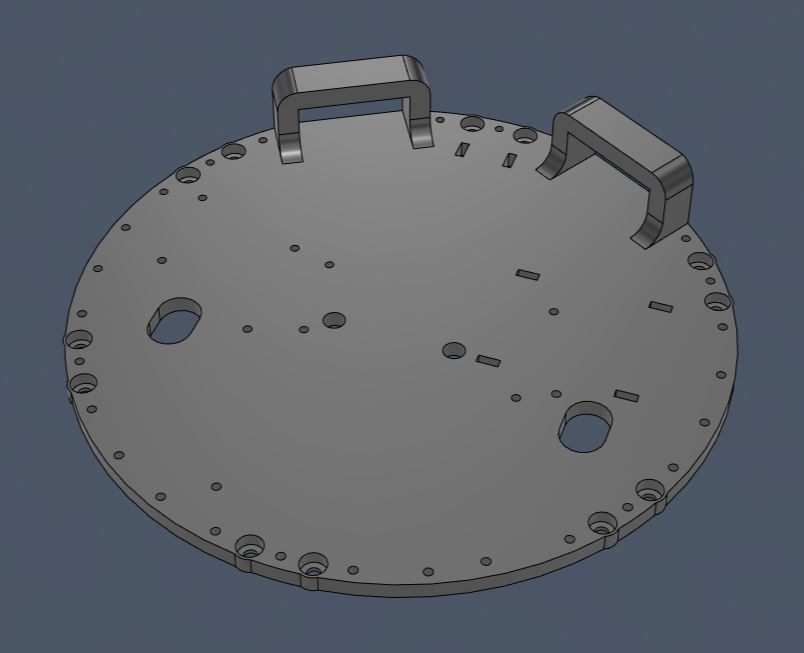
Pro ochranu elektroniky v prostředním patře jsem navrhl vrchní kryt, který se k montážní desce upevňuje pomocí šroubů M2 × 8 mm. V jeho horní části jsem vytvořil otvory. Ty v budoucnu poslouží k tomu, abych mohl pomocí stahovacích pásků přichytit drátky od mikrospínačů umístěných na koncích nohou. To protect the electronics on the middle floor, I designed a top cover, which is attached to the mounting plate using M2 × 8 mm screws. In its upper part, I created holes. In the future, these will be used to attach the wires from the microswitches located at the ends of the legs using zip ties.
Modelování kopule jsem začal náčrtem jejího průřezu, který jsem pomocí nástroje Revolve otočil kolem svislé osy o 360°. Poté jsem v rovině podstavy vytvořil další náčrt a s využitím funkce Cut jsem do pláště vyřízl šest velkých postranních otvorů. I started modeling the dome with a sketch of its cross-section, which I rotated around the vertical axis by 360° using the Revolve tool. Then I created another sketch in the base plane and, using the Cut function, cut six large side openings into the shell.
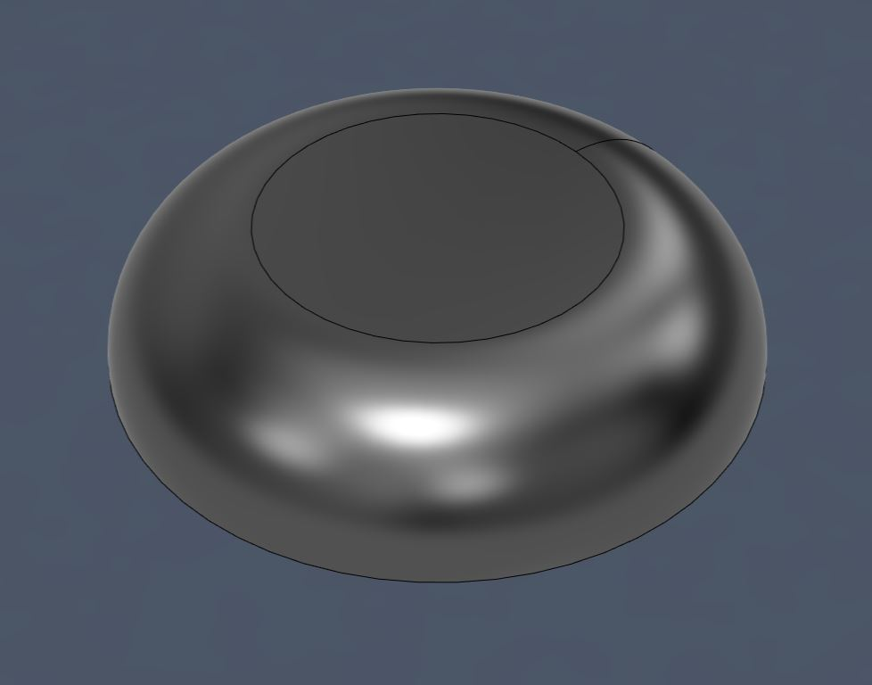
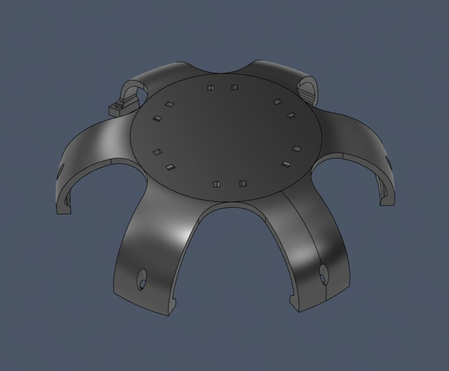
Coxa Coxa
Díl tvořící kyčel robota je navržen tak, aby servomotor držel ze dvou stran - shora je přišroubován k hřídeli a zespodu se opírá o ložisko, díky čemuž není veškerá zátěž na hřídeli. The part forming the robot's hip is designed to hold the servo motor from two sides - it is screwed to the shaft from above and rests on a bearing from below, meaning not all the load is on the shaft.
Pro lepší přenos krouticího momentu má v sobě tento díl otvor ve tvaru nasazovací páky serva. Původně jsem chtěl model páky získat 3D skenováním, ale to se bohužel nepovedlo. Model jsem tedy stáhl z internetu a pomocí nástroje Project jsem do horního dílu kyčle promítnul jeho obrys. Pomocí funkce Offset Face jsem vytvořil několik testovacích dílů s různými vůlemi a vytiskl je. Páka nejlépe zapadala do otvoru s offsetem 0,17 mm. For better torque transfer, this part has a hole in the shape of the servo horn. Originally, I wanted to obtain a model of the horn by 3D scanning, but unfortunately that didn't work out. So I downloaded the model from the internet and used the Project tool to project its outline into the top hip part. Using the Offset Face function, I created several test pieces with different clearances and printed them. The horn fit best into the hole with an offset of 0.17 mm.
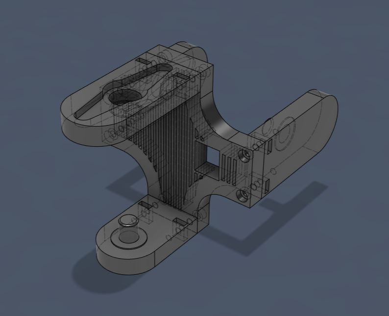
Femur Femur
Stehno robota (femur) bude osazeno dvěma servomotory, které připevním stejným způsobem jako v případě základny. Odstraním původní spodní kryt serva a upevním ho k femuru pomocí dlouhých šroubů, které držely původní kryt. Na zadní stranu serva umístím opěrné ložisko, které převezme část zátěže. The robot's thigh (femur) will be equipped with two servo motors, which I will attach in the same way as with the base. I will remove the original bottom servo cover and attach it to the femur using the long screws that held the original cover. I will place a support bearing on the back of the servo to take over some of the load.
Aby kabely od serv nevisely volně a nehrozilo jejich zachycení při pohybu, vytvořil jsem v těle femuru vodící kanálek o rozměrech 9 × 3,5 mm. Z femuru pak kabeláž projde otvorem v coxe až do základny, kde ji připojím k modulům PCA9685. Jelikož bude vedení mezi femurem a základnou fyzicky namáháno, schovám ho do kabelového opletu o průměru 8 mm. To prevent the servo cables from hanging loose and risking getting caught during movement, I created a guide channel in the femur body measuring 9 × 3.5 mm. From the femur, the wiring will pass through a hole in the coxa into the base, where I will connect it to the PCA9685 modules. Since the wiring between the femur and the base will be physically stressed, I will hide it in a cable sleeve with a diameter of 8 mm.


Tibia Tibia
Posledním článkem nohy je tibia (holeň). Z jedné strany je přišroubovaná k hřídeli servomotoru, který je připevněn k femuru, a z druhé strany se pro lepší rozložení sil opírá o ložisko uvnitř femuru. The last segment of the leg is the tibia (shin). On one side, it is screwed to the shaft of the servo motor attached to the femur, and on the other side, it rests against a bearing inside the femur for better force distribution.
Tibii jsem navrhl se zahnutím o 24,9° směrem dolů. Tento tvar má několik konstrukčních výhod: lepší stabilita, špička nohy dosáhne blíže k tělu a díky lepším pákovým poměrům se snižuje zátěž na servomotory. Daní za toto řešení je snížení maximálního dosahu nohy do dálky, to je však vzhledem k výhodám méně podstatné. I designed the tibia with a downward bend of 24.9°. This shape has several structural advantages: better stability, the tip of the leg reaches closer to the body, and due to better leverage, the load on the servo motors is reduced. The trade-off for this solution is a reduction in the maximum reach of the leg in distance, but given the advantages, this is less significant.
Na úplném konci nohy se nachází mechanismus tvořený gumovou botičkou, pružinou a mikrospínačem. Funguje jako tlumič nárazů, zlepšuje přilnavost robota k povrchu a navíc při došlapu na zem mechanismus sepne mikrospínač. Robot tak získá zpětnou vazbu o kontaktu se zemí, což umožní reagovat na nerovnosti terénu. At the very end of the leg, there is a mechanism consisting of a rubber shoe, a spring, and a microswitch. It acts as a shock absorber, improves the robot's grip on the surface, and moreover, when stepping on the ground, the mechanism triggers the microswitch. The robot thus gains feedback about contact with the ground, allowing it to react to uneven terrain.
K sepnutí spínače dochází při stlačení pružiny o 2 mm, což odpovídá zátěži přibližně 360 gramů. Aby se při zatížení neopřela celá váha robota o mikrospínač a nedošlo k jeho poškození, navrhl jsem v pohyblivé části tibie vodící drážku. Pohyb mechanismu se v ní při dosažení krajní meze zastaví o šroubek. The switch is triggered when the spring is compressed by 2 mm, which corresponds to a load of approximately 360 grams. To prevent the entire weight of the robot from resting on the microswitch and damaging it during loading, I designed a guide slot in the moving part of the tibia. The movement of the mechanism stops against a screw when the extreme limit in it is reached.
Pro tlumení jsem použil pružinu z oceli 65Mn s průměrem drátu 0,6 mm, vnějším průměrem 8 mm a délkou 15 mm. Aby se pohyblivý konec nohy při zvednutí do vzduchu neviklal, je pružina předpjatá o 1,5 mm Pohyblivá koncová část se skládá ze tří různě širokých a vysokých válečků, které jsou spojeny dlouhým šroubem M2 × 40 mm s maticí. For damping, I used a 65Mn steel spring with a wire diameter of 0.6 mm, an outer diameter of 8 mm, and a length of 15 mm. So that the moving end of the leg doesn't wobble when lifted into the air, the spring is preloaded by 1.5 mm. The moving end part consists of three rollers of different widths and heights, which are connected by a long M2 × 40 mm screw with a nut.


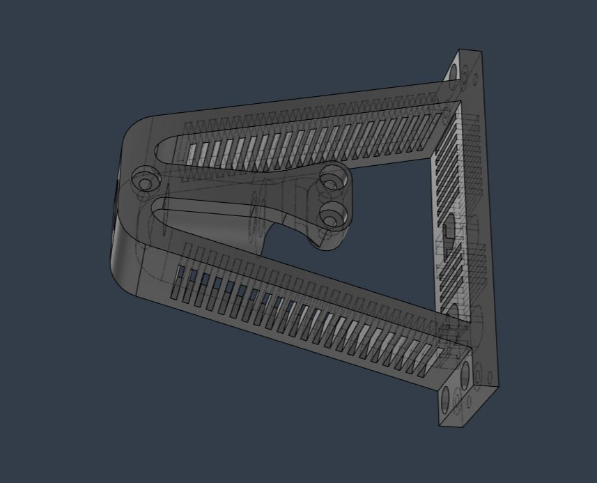
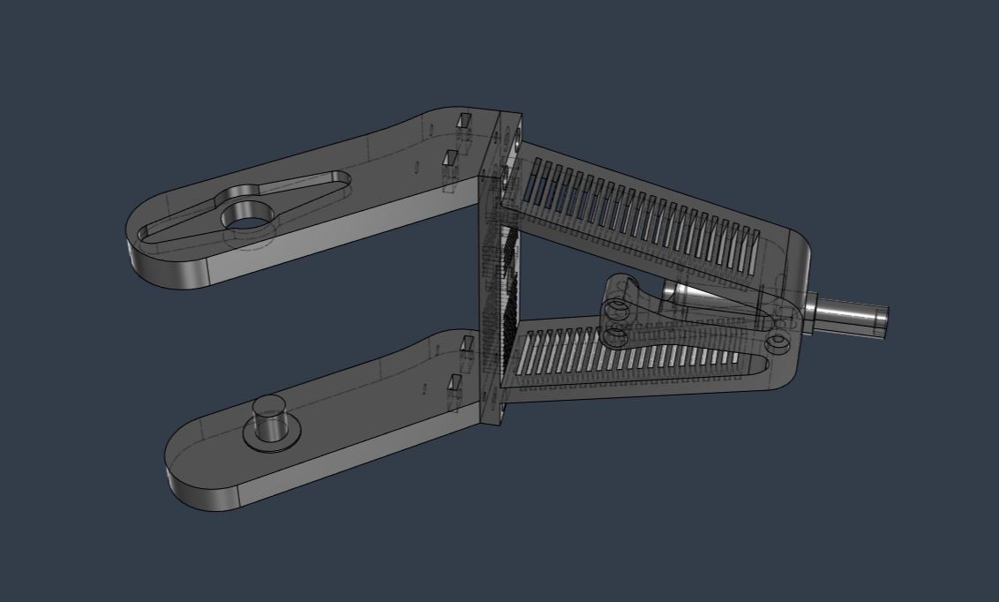
Hotový návrh hexapoda Finished hexapod design

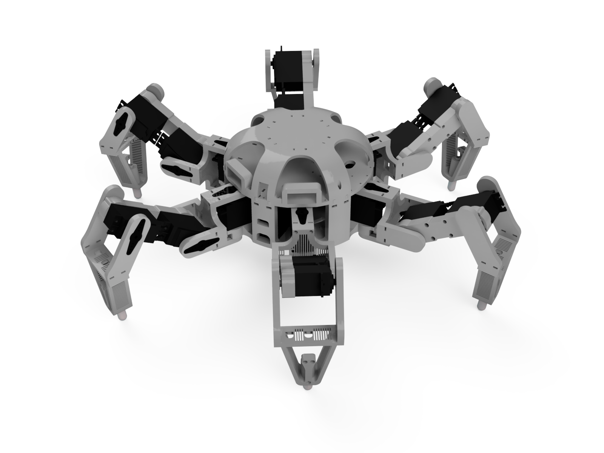
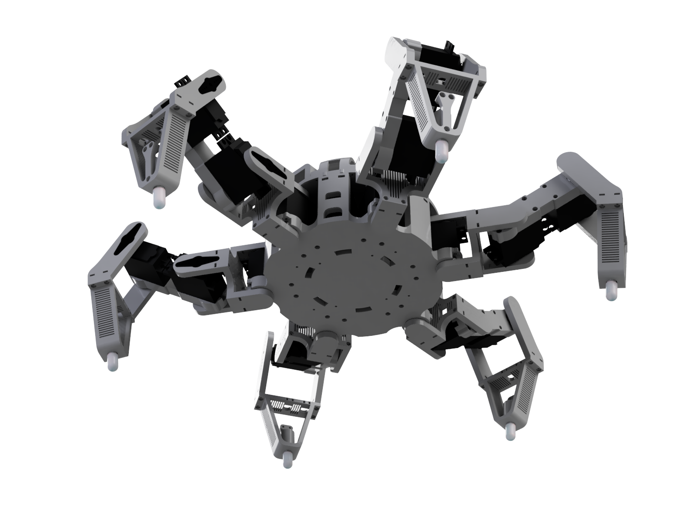
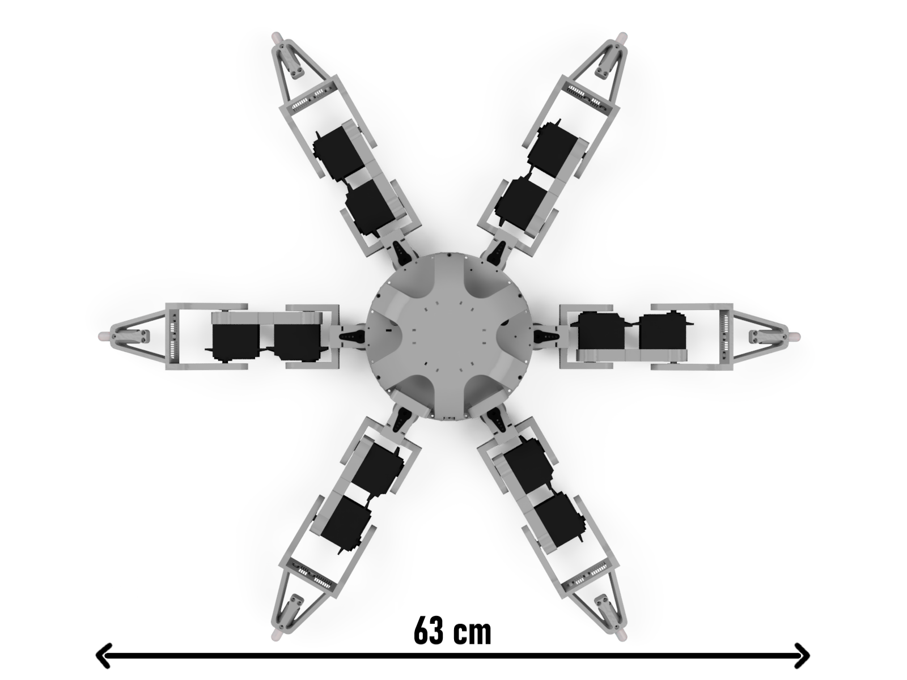
3D tisk a sestavení 3D printing and assembly
Nastavení 3D tisku 3D printing settings
Hotové modely jsem vyexportoval z Fusionu (Utilities -> 3D print) do formátu 3MF a naslicoval v programu Bambu Studio. Tisk probíhal na tiskárně Bambu Lab A1 Mini s 0,4 mm tryskou. Jako materiál jsem zvolil PLA, a to především proto, že se snadno tiskne a měl jsem ho zrovna k dispozici. Pro prototypování to byla ideální volba. Pro finální stavbu by však bylo pravděpodobně lepší použít PETG. PLA totiž kvůli své křehkosti a nízké teplotní odolnosti nemusí vydržet větší nárazy nebo pohyb venku na přímém slunci. Tisk probíhal při následujícím nastavení: I exported the finished models from Fusion (Utilities -> 3D print) to 3MF format and sliced them in Bambu Studio. The printing was done on a Bambu Lab A1 Mini printer with a 0.4 mm nozzle. I chose PLA as the material, mainly because it is easy to print and I had it on hand. For prototyping, it was an ideal choice. For the final build, however, it would probably be better to use PETG. Because of its brittleness and low temperature resistance, PLA might not withstand larger impacts or movement outside in direct sunlight. Printing was done with the following settings:
- Profil: 0,20 mm Standard @BBL A1M Profile: 0.20 mm Standard @BBL A1M
- Nozzle temperature (teplota trysky): 210 °C Nozzle temperature: 210 °C
- Bed temperature (teplota podložky): 65 °C Bed temperature: 65 °C
- Wall loops (perimetry): 4 Wall loops: 4
- Sparse infill density (hustota výplně): 20 % Sparse infill density: 20 %
- Sparse infill pattern (vzor výplně): Gyroid Sparse infill pattern: Gyroid
- Outer wall speed (rychlost vnější stěny): 100 mm/s Outer wall speed: 100 mm/s
Zvolený počet perimetrů a hustota výplně je kompromis mezi hmotností a odolností. Zbylá nastavení jsem ponechal na výchozích hodnotách tiskového profilu. The chosen number of perimeters and infill density is a compromise between weight and durability. I left the remaining settings at the default values of the print profile.
Jelikož některé díly obsahují výrazné převisy (zejména horní část těla), bylo nezbytné použít podpěry. Podpěry jsem nastavil takto: Since some parts contain significant overhangs (especially the upper body part), it was necessary to use supports. I set the supports as follows:
- Type (typ): Tree (auto) Type: Tree (auto)
- Top Z distance (mezera v ose Z): 0,25 mm Top Z distance: 0.25 mm
Ostatní parametry podpěr zůstaly ve výchozím stavu. Other support parameters remained at default.
Použité součástky a materiály Used components and materials
- 640 g Bambu Lab PLA Basic (cca 32 hodin tisku na Bambu Lab A1 mini) 640 g Bambu Lab PLA Basic (approx. 32 hours of printing on Bambu Lab A1 mini)
- Raspberry Pi 5 - 8 GB RAM Raspberry Pi 5 - 8 GB RAM
- Buck měnič 9-35 V na 5 V / 5 A - DC-DC (dočasné řešení) Buck converter 9-35 V to 5 V / 5 A - DC-DC (temporary solution)
- Sunrise UBEC 20 A Sunrise UBEC 20 A
- Li-Pol baterie 4200 mAh 3S 35C (70C krátkodobě) BH Power Li-Po battery 4200 mAh 3S 35C (70C short burst) BH Power
- 2× kolébkový přepínač 2pól. / 3pin 20 A / 12 V DC 2× rocker switch 2-pole / 3-pin 20 A / 12 V DC
- 6× mikrospínač Omron D2F-F-D3 6× Omron microswitch D2F-F-D3
- 2× I2C modulový driver PCA9685 2× I2C module driver PCA9685
- 12× servo MG996R (13 kg⋅cm, 180 stupňů) 12× servo MG996R (13 kg⋅cm, 180 degrees)
- 6× servo TD-8120MG (20 kg⋅cm, 180 stupňů) 6× servo TD-8120MG (20 kg⋅cm, 180 degrees)
- Piezobzučák 23 mm SFM-20B 3-24 V / 12 mA Piezo buzzer 23 mm SFM-20B 3-24 V / 12 mA
- T-Dean konektory (male i female) T-Dean connectors (male and female)
- Dupont propojovací kabely Dupont jumper wires
- Oplet na kabely o průměru 8 mm Cable sleeve 8 mm diameter
- Stahovací pásky 150 × 2,5 mm Zip ties 150 × 2.5 mm
- Sada smršťovacích bužírek Set of heat shrink tubing
- Sada M2-M4 šroubků a matic Set of M2-M4 screws and nuts
- 18× kuličkové ložisko 6 × 19 × 6 mm 18× ball bearing 6 × 19 × 6 mm
- 6× silikonové ochranné návleky na závity šroubů, vnitřní délka 13 mm, vnitřní průměr 5 mm 6× silicone protective sleeves for screw threads, inner length 13 mm, inner diameter 5 mm
Základna Base

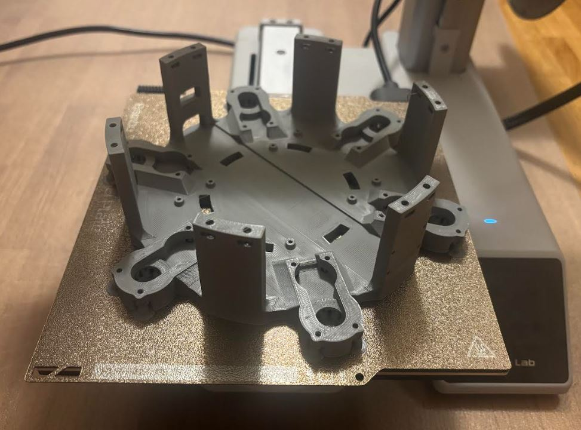
Odstraňování stromových podpěr pomocí malých štípacích kleští a skalpelu mi zabralo zhruba dvacet minut. Zanechaly po sobě hrubší povrch, což však nevadí, jelikož jsou umístěny zespodu robota a většina této plochy je navíc překryta ložisky. Removing the tree supports using small flush cutters and a scalpel took me about twenty minutes. They left behind a rougher surface, but this doesn't matter since they are located on the bottom of the robot, and most of this area is also covered by bearings.

Servomotory jsem k základně připevnil dlouhými šrouby z původních krytů. Poté jsem na jejich spodní stranu nasadil ložiska. Kvůli malým tolerancím 3D tisku bylo nutné některá z nich zalisovat pomocí svěráku. I attached the servo motors to the base with the long screws from the original covers. Then I fitted bearings onto their undersides. Due to the small tolerances of 3D printing, it was necessary to press-fit some of them using a vise.

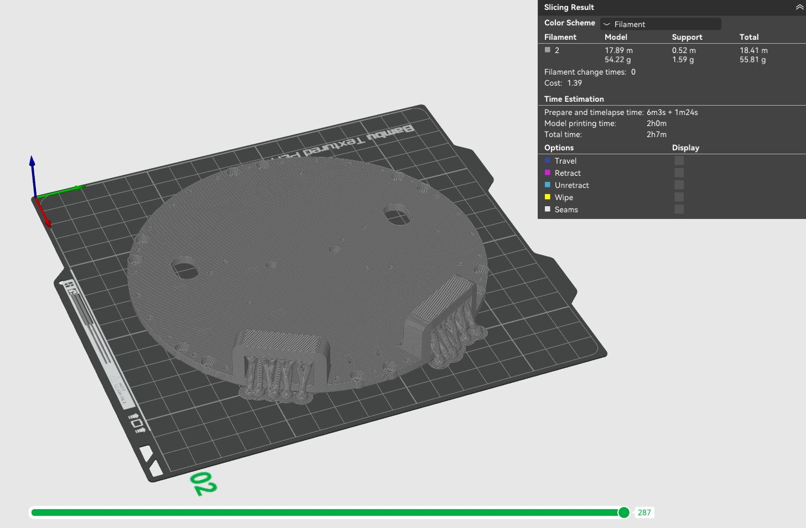

Pro rozdělení napájení do dvou samostatných větví jsem si musel spájet vlastní rozdvojovací konektor: To split the power supply into two separate branches, I had to solder my own splitter connector:


Jednotlivé moduly jsem k montážní desce připevnil stahovacími páskami a šrouby M2 × 6 mm. Poté jsem vše propojil a spájel podle dříve uvedeného schématu. Pro potlačení elektromagnetického rušení jsem kabely (signál nebo napájení společně se zemí) zapletl do sebe. I attached the individual modules to the mounting plate with zip ties and M2 × 6 mm screws. Then I connected and soldered everything according to the previously mentioned schematic. To suppress electromagnetic interference, I twisted the cables (signal or power together with ground) together.
Montážní deska je k tělu hexapoda upevněna šrouby M3 × 12 mm a maticemi zapuštěnými do plastu. The mounting plate is attached to the hexapod body with M3 × 12 mm screws and nuts embedded in the plastic.


Původně jsem chtěl horní kryt tisknout vzhůru nohama, abych se vyhnul podpěrám. Kvůli výrazným převisům ale výsledek nebyl vůbec pěkný. Protože jde o velmi viditelný díl, zvolil jsem nakonec tisk ve standardní orientaci s podpěrami. Hrubší povrch od podpěr je tak skrytý uvnitř, zatímco zvenku je kryt hladký a estetický. Originally, I wanted to print the top cover upside down to avoid supports. However, due to the significant overhangs, the result was not nice at all. Since it is a highly visible part, I ultimately chose printing in standard orientation with supports. The rougher surface from the supports is thus hidden inside, while on the outside, the cover is smooth and aesthetic.
K montážní desce je kryt přichycen šrouby M2 × 8 mm. The cover is attached to the mounting plate with M2 × 8 mm screws.
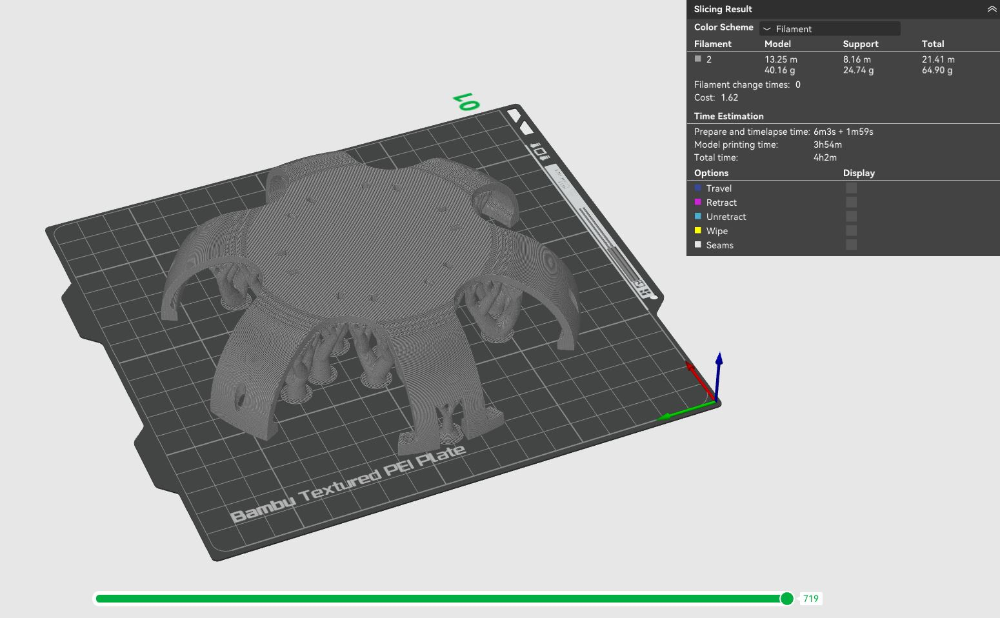
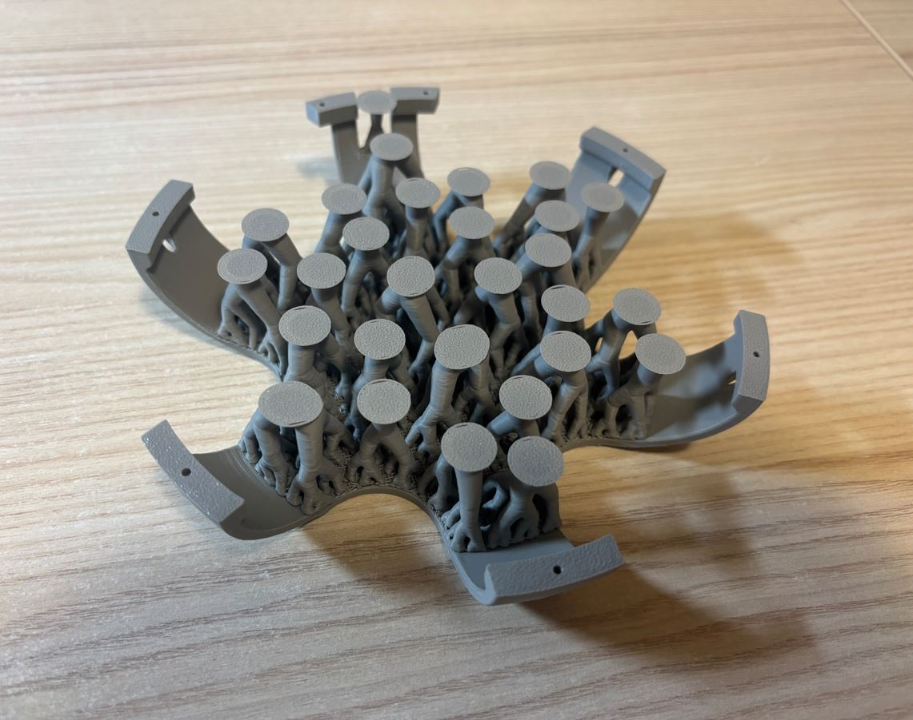
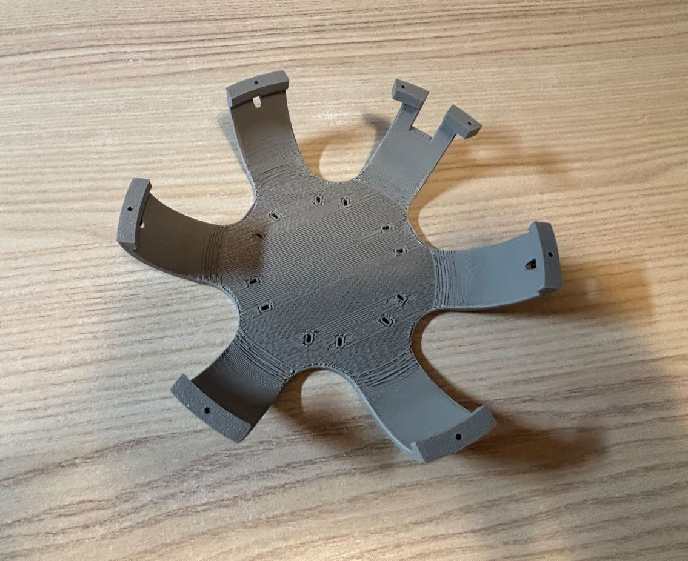

Coxa Coxa
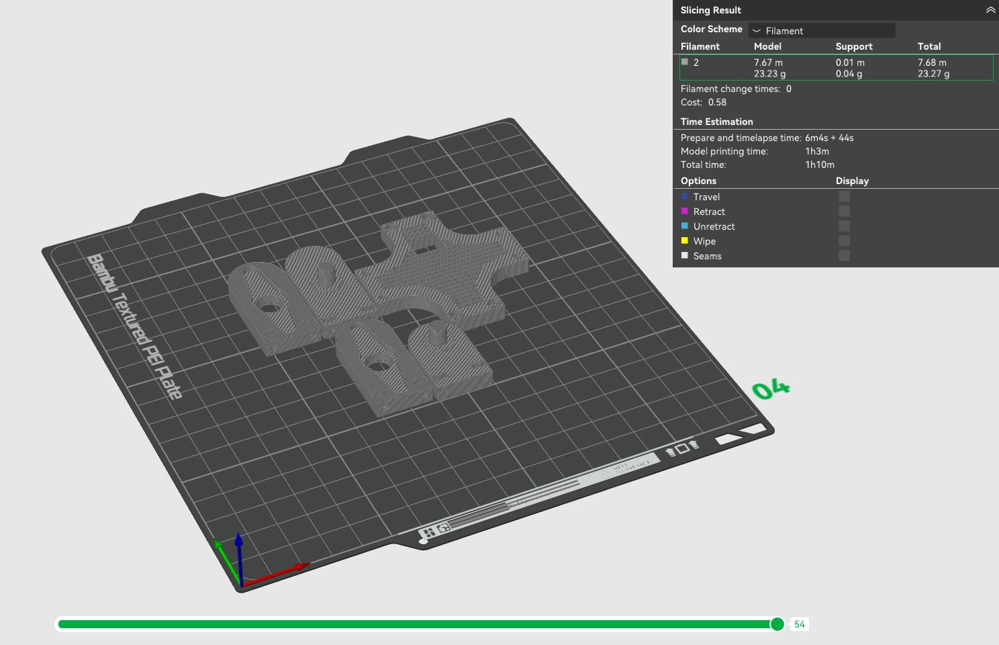
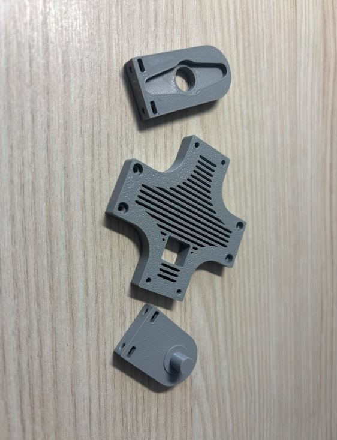
Jednotlivé části coxy drží pohromadě díky šroubům M2 × 12 mm a maticím zapuštěným v plastu. Krouticí moment serva se přenáší přes páku nasazenou na hřídel, která je těsně zapasovaná do vytištěného dílu coxy. The individual parts of the coxa are held together by M2 × 12 mm screws and nuts embedded in the plastic. The servo torque is transmitted via a horn mounted on the shaft, which is tightly fitted into the printed coxa part.

Po sestavení hexapoda nohy při rychlejších pohybech v coxe vibrovaly a jejich pohyb byl trhaný (jiná serva tento problém nemají). Pravděpodobně to bylo způsobeno velkou setrvačností těžké nohy - po jejím připevnění se změnily vlastnosti systému, na které byl z výroby naladěn PID regulátor serva. Problém z velké části vyřešilo přidání silikonových kroužků mezi servo a coxu. Tím se zvýšilo tření a tlumení, takže se serva nyní pohybují plynuleji. Tato úprava ale zvyšuje zátěž, což vede k větší spotřebě a rychlejšímu opotřebení servomotorů. After assembling the hexapod, the legs vibrated during faster movements in the coxa, and their movement was jerky (other servos don't have this problem). This was likely caused by the high inertia of the heavy leg - after attaching it, the system properties changed from what the servo's PID controller was tuned for from the factory. Adding silicone rings between the servo and the coxa largely solved the problem. This increased friction and damping, so the servos now move more smoothly. However, this modification increases the load, leading to higher power consumption and faster wear of the servo motors.
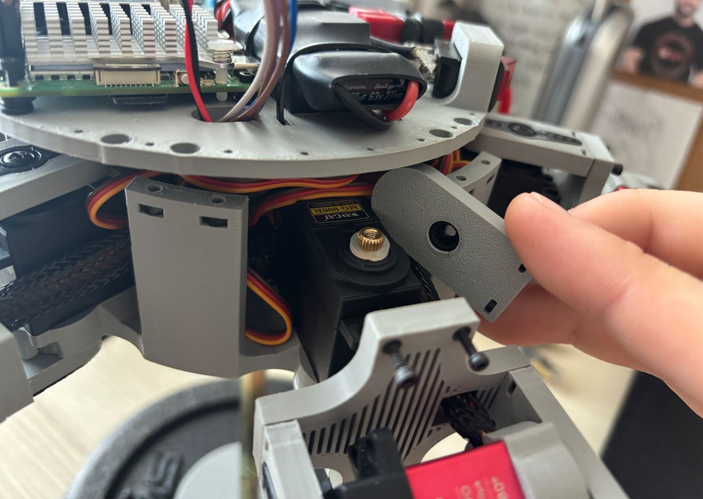
Femur Femur
Tisk femuru opět potřeboval mnoho podpěr. Díl jsem orientoval tak, aby hrubší plochy po jejich odstranění zůstaly skryté. Kabely od serva pro tibii jsem protáhl vnitřním kanálkem a společně s kabely femur serva jsem je vedl 8 cm dlouhým opletem směrem k základně. Aby se oplet netřepil, zatavil jsem jeho konce zapalovačem a zafixoval je smršťovací bužírkou. Printing the femur again required many supports. I oriented the part so that the rougher surfaces remained hidden after removing them. I threaded the cables from the tibia servo through the internal channel, and together with the femur servo cables, I routed them through an 8 cm long sleeve towards the base. To prevent the sleeve from fraying, I melted its ends with a lighter and secured them with heat shrink tubing.


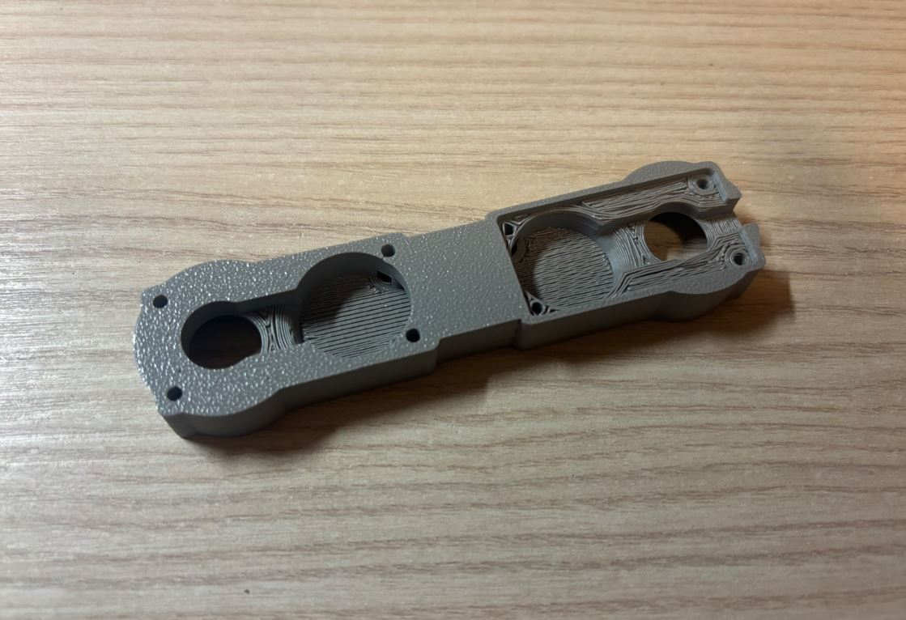
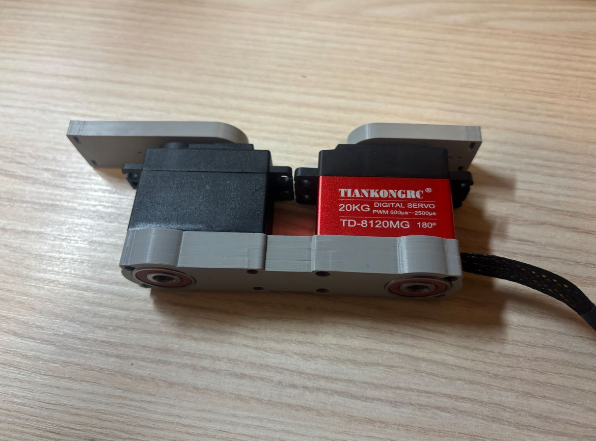


Tibia Tibia
Pohyblivý díl tibie se skládá ze tří různě širokých válečků. Ty se k sobě stáhnou pomocí šroubu M2 × 40 mm a matice, přičemž na konec dílu se navlékne gumová botička. Do dutého válce v hlavní části tibie se vloží pružina a částečně se skrz ni prostrčí sestavený pohyblivý díl. Pro omezení maximálního rozsahu pohybu a ochranu mikrospínače před poškozením se do tibie umístí šroubek M2 × 6 mm zasahující do vodicí drážky pohyblivého dílu. Nakonec se pomocí dvou šroubů M2 × 12 mm a matic uchytí mikrospínač. The moving part of the tibia consists of three rollers of different widths. These are pulled together using an M2 × 40 mm screw and a nut, while a rubber shoe is slipped onto the end of the part. A spring is inserted into the hollow cylinder in the main part of the tibia, and the assembled moving part is partially pushed through it. To limit the maximum range of motion and protect the microswitch from damage, an M2 × 6 mm screw is placed into the tibia, engaging the guide slot of the moving part. Finally, the microswitch is attached using two M2 × 12 mm screws and nuts.
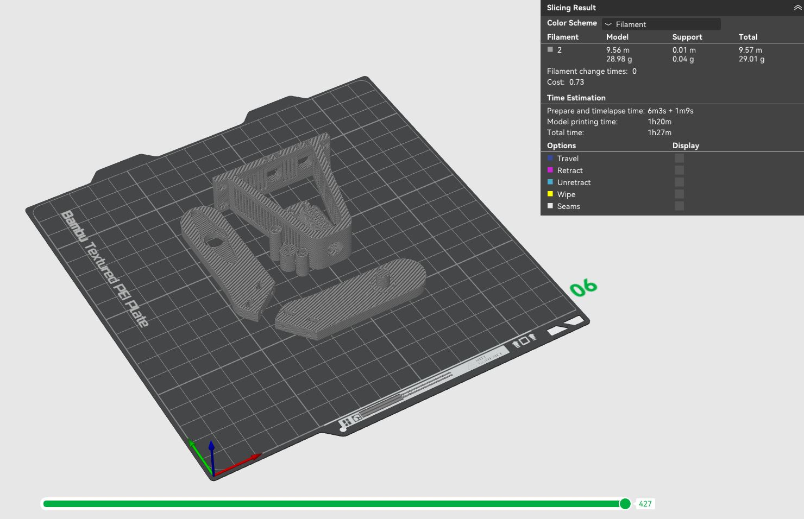


Sestavený hexapod Assembled hexapod


Programování Programming
Komunikace mezi ovladačem a hexapodem Communication between remote control and hexapod
Dálkové ovládání poskytuje kontrolu nad směrem a rychlostí chůze, frekvencí kroků, výškou zvedání nohou, náklony těla (roll, pitch a yaw) a jeho posuny ve třech osách (x, y, z). Také umožňuje hexapoda postavit/posadit, přepínat mezi různými vzory chůze (gaity) a program robota vypnout. K tomu využívám dva joysticky (včetně jejich tlačítek), čtyři potenciometry a tři tlačítka. The remote control provides control over the direction and speed of walking, step frequency, leg lift height, body tilt (roll, pitch and yaw) and its translations in three axes (x, y, z). It also allows the hexapod to stand up/sit down, switch between different walking patterns (gaits) and turn off the robot's program. For this, I use two joysticks (including their buttons), four potentiometers and three buttons.
Výchozí režim pravého joysticku ovládá posuny těla v osách X a Y. Po stisknutí tlačítka joysticku se režim přepne na ovládání náklonů (pitch a roll). Výchozí režim levého joysticku ovládá chůzi vpřed/vzad a zatáčení. Po stisknutí jeho tlačítka se přepne na krabí chůzi (ovládání rychlosti v osách X a Y). Potenciometry pak slouží k nastavení výšky těla (posun v ose Z) a rotace (yaw - otáčení kolem osy Z). The default mode of the right joystick controls body translations in the X and Y axes. After pressing the joystick button, the mode switches to tilt control (pitch and roll). The default mode of the left joystick controls forward/backward walking and turning. After pressing its button, it switches to crab walking (speed control in the X and Y axes). The potentiometers are then used to set the body height (translation in the Z axis) and rotation (yaw - rotation around the Z axis).
Komunikace mezi Arduinem (ovladač) a Raspberry Pi 5 (hexapod) probíhá jednosměrně přes sériovou linku a Bluetooth modul HC-05 pomocí vlastního protokolu. Na Raspberry Pi běží vlákno bluetooth_thread, které paralelně s hlavní smyčkou čte a zpracovává příchozí data.
Communication between the Arduino (remote) and Raspberry Pi 5 (hexapod) is one-way over a serial line and the HC-05 Bluetooth module using a custom protocol. A bluetooth_thread runs on the Raspberry Pi, which reads and processes incoming data in parallel with the main loop.
Formát datového paketu: Data packet format:
-
Byte 0:
0xAA- Startovací byte (hlavička), podle které RPi identifikuje začátek paketu. Byte 0:0xAA- Start byte (header), by which the RPi identifies the beginning of a packet. -
Byte 1:
0x11(17 desítkově) - Délka užitečných dat (payload). Byte 1:0x11(17 decimal) - Payload length. - Byte 2 až 17: Analogová data z potenciometrů a joysticků (osm 16bitových hodnot odesílaných ve formátu Little Endian). Byte 2 to 17: Analog data from potentiometers and joysticks (eight 16-bit values sent in Little Endian format).
- Byte 18: Bitmaska tlačítek (1 byte). Jednotlivé bity reprezentují stav pěti tlačítek. Byte 18: Button bitmask (1 byte). Individual bits represent the state of five buttons.
- Byte 19: Kontrolní součet (Checksum). Byte 19: Checksum.
Relevantní výtažky z kódu (kompletní kód je na konci stránky): Relevant code excerpts (complete code is at the end of the page):
// Send data frame
static inline void sendFrameHW(const uint16_t v[8], uint8_t buttons) {
const uint8_t LEN = 8*2 + 1; // Payload length
uint8_t sum = 0; // Checksum
auto put = [&](uint8_t b ){
Serial3.write(b);
sum = (uint8_t)(sum + b);
};
put(0xAA); // Start byte
put(LEN); // Data length
for (int i = 0; i < 8; i++) {
put((uint8_t)(v[i] & 0xFF)); // Low byte
put((uint8_t)(v[i] >> 8)); // High byte
}
put(buttons);
Serial3.write(sum);
}
void setup() {
...
Serial3.begin(115200);
...
}
void loop() {
...
// Read inputs and send using Bluetooth
if (due) {
...
// Prepare data for Bluetooth
uint16_t v[8];
v[0] = (uint16_t) constrain(dX1 + 512, 0, 1023);
v[1] = (uint16_t) constrain(dY1 + 512, 0, 1023);
v[2] = (uint16_t) constrain(dX2 + 512, 0, 1023);
v[3] = (uint16_t) constrain(dY2 + 512, 0, 1023);
v[4] = valRV1;
v[5] = valRV2;
v[6] = valRV3;
v[7] = valRV4;
uint8_t buttons = 0;
if (j1Btn) buttons |= (1 << 0);
if (j2Btn) buttons |= (1 << 1);
if (btn1) buttons |= (1 << 2);
if (btn2) buttons |= (1 << 3);
if (btn3) buttons |= (1 << 4);
sendFrameHW(v, buttons);
}
...
}
#pragma once
#include <stdint.h>
typedef struct {
// 4 joysticks, 4 potentiometers - J1X, J1Y, J2X, J2Y, P1, P2, P3, P4
uint16_t a[8];
// 2 joystick buttons, 3 buttons - bit0 = J1BTN, bit1 = J2BTN, bit2 = BTN1, bit3 = BTN2, bit4 = BTN3
uint8_t buttons;
} InputPacket;
// Thread for Bluetooth commands
void* bluetooth_thread(void* arg);
#include <stdint.h>
...
#include <unistd.h>
#include <fcntl.h>
#include <termios.h>
...
// HC-05 MAC: FC:A8:FF:00:60:55
// Protocol constants
// [0xAA] [LEN] [J1X_L] [J1X_H] [J1Y_L] [J1Y_H] [J2X_L] [J2X_H] [J2Y_L] [J2Y_H]
// [P1_L] [P1_H] [P2_L] [P2_H] [P3_L] [P3_H] [P4_L] [P4_H] [Buttons] [Checksum] - 20 bytes
#define FRAME_START 0xAA // Start byte
#define PAYLOAD_LEN 17 // 16 analog + 1 buttons = 17 bytes
#define FRAME_LEN (1 + 1 + PAYLOAD_LEN + 1) // 20 bytes (start + len + 17 + checksum)
...
// Where to read commands from
static const char* dev = "/dev/rfcomm0";
// Raw serial settings (binary I/O)
static void set_raw_termios(struct termios* tio) {
tio->c_iflag &= ~(IGNBRK | BRKINT | PARMRK | ISTRIP | INLCR | IGNCR | ICRNL | IXON);
tio->c_oflag &= ~OPOST;
tio->c_lflag &= ~(ECHO | ECHONL | ICANON | ISIG | IEXTEN);
tio->c_cflag &= ~(CSIZE | PARENB);
tio->c_cflag |= CS8;
}
// Open serial
static int open_serial(const char* dev, speed_t speed) {
int fd = open(dev, O_RDWR | O_NOCTTY); // Open file
// Check if file is open
if (fd < 0) {
fprintf(stderr,"ERROR: Open(%s): %s\n", dev, strerror(errno));
return -1;
}
struct termios tio;
if (tcgetattr(fd, &tio) != 0){
fprintf(stderr,"ERROR: Tcgetattr: %s\n", strerror(errno));
close(fd);
return -1;
}
set_raw_termios(&tio); // Set raw mode
cfsetispeed(&tio, speed); // Set input baud
cfsetospeed(&tio, speed); // Set output baud
tio.c_cflag |= (CLOCAL | CREAD); // Enable RX
tio.c_cflag &= ~CSTOPB; // 1 stop bit
#ifdef CRTSCTS
tio.c_cflag &= ~CRTSCTS; // No HW flow control
#endif
tio.c_cc[VMIN] = 0; // Return even if no byte available
tio.c_cc[VTIME] = 1; // 0.1 s timeout
// Apply settings
if (tcsetattr(fd, TCSANOW, &tio) != 0) {
fprintf(stderr,"ERROR: Tcsetattr: %s\n", strerror(errno));
close(fd);
return -1;
}
tcflush(fd, TCIOFLUSH); // Flush the serial buffer
return fd;
}
// Sum n bytes modulo 256 for checksum
static uint8_t sum_bytes(const uint8_t* b, size_t n) {
uint32_t s = 0;
for (size_t i = 0; i < n; i++) s += b[i];
return (uint8_t)(s & 0xFF);
}
// Read little-endian uint16_t from byte buffer
static uint16_t rd_u16le(const uint8_t* p) {
return (uint16_t)(p[0] | ((uint16_t)p[1] << 8));
}
// Message handler
static void message_handler(const InputPacket* p) {
// Decode buttons (bitfield)
const bool js2btn = (p->buttons & (1u << 1)) != 0; // joystick 2 push
const bool btn2 = (p->buttons & (1u << 3)) != 0; // BTN2 (Sit down/stand up)
const bool btn3 = (p->buttons & (1u << 4)) != 0; // BTN3 (Quit)
// Get analog values
const uint16_t j2x = p->a[3];
const uint16_t j2y = p->a[2];
const uint16_t pot3 = p->a[4];
const uint16_t pot4 = p->a[5];
...
}
// Thread for Bluetooth commands
void* bluetooth_thread(void* arg) {
(void)arg;
// Open serial in raw
int fd = open_serial(dev, B115200);
if (fd < 0) return (void*)(intptr_t)-1;
printf("INFO: Bluetooth_thread listening on %s.\n", dev);
// Message buffer
uint8_t buf[512];
size_t len = 0;
// Thread loop
while (1) {
...
// Read new bytes
ssize_t n = read(fd, buf + len, sizeof(buf) - len);
// Read errors
if (n < 0) {
// If read was interrupted by a signal, retry
if (errno == EINTR) continue;
// Otherwise report error
fprintf(stderr, "ERROR: Read(%s): %s\n", dev, strerror(errno));
break;
}
if (n == 0) {
// TIMEOUT (no data for 0.1s)
continue;
}
// N-bytes received
len += (size_t)n;
// Parse messages
size_t i = 0;
while (len - i >= FRAME_LEN) {
while (i < len && buf[i] != FRAME_START) i++; // Find the start of a message
if (len - i < FRAME_LEN) break; // Stop parsing if not enough bytes in the buffer
// Verify the payload length
if (buf[i+1] != PAYLOAD_LEN) {
i++;
continue;
}
// Verify the checksum
uint8_t calc = sum_bytes(&buf[i], 1 + 1 + PAYLOAD_LEN);
uint8_t rxcs = buf[i + 1 + 1 + PAYLOAD_LEN];
if (calc != rxcs) {
i++;
continue;
}
// Parse payload
const uint8_t* pld = &buf[i+2];
InputPacket pkt;
for (int k = 0; k < 8; k++) pkt.a[k] = rd_u16le(pld + k*2);
pkt.buttons = pld[16];
// Handle message
message_handler(&pkt);
i += FRAME_LEN;
}
// Move bytes to the beginning of the buffer
if (i > 0) {
size_t rest = len - i;
if (rest) memmove(buf, buf + i, rest);
len = rest;
}
// Reset the buffer if failed to find a message
if (len > sizeof(buf) - FRAME_LEN) len = 0;
}
close(fd); // Close the serial
return (void*)(intptr_t)0;
}
Inverzní kinematika Inverse kinematics
Zatímco dopředná kinematika řeší otázku: „Když nastavím tyto úhly v kloubech, kde skončí špička nohy?“, inverzní kinematika funguje přesně naopak. Ptá se: „Pokud chci špičku nohy umístit do těchto souřadnic, jaké úhly musím nastavit v jednotlivých kloubech?“ While forward kinematics answers the question: "If I set these angles in the joints, where will the tip of the leg end up?", inverse kinematics works exactly the opposite. It asks: "If I want to place the tip of the leg at these coordinates, what angles must I set in the individual joints?"
Noha robota se skládá ze tří kloubů a tří článků: The robot's leg consists of three joints and three segments:
- Coxa (kyčel): Nejbližší kloub k tělu robota se svislou osou rotace. Zajišťuje pohyb celé nohy vlevo a vpravo. Coxa (hip): The joint closest to the robot's body with a vertical axis of rotation. It provides the movement of the entire leg left and right.
- Femur (stehno): Druhý kloub od těla s vodorovnou osou rotace. Slouží ke zvedání a spouštění nohy. Femur (thigh): The second joint from the body with a horizontal axis of rotation. It serves to lift and lower the leg.
- Tibia (holeň): Třetí kloub opět s vodorovnou osou rotace. Společně s femurem tvoří dvoučlánkové rameno. Tibia (shin): The third joint, again with a horizontal axis of rotation. Together with the femur, it forms a two-segment arm.

Při výpočtech budeme pracovat v souřadnicovém systému hexapoda, jehož počátek (0, 0, 0) leží ve středu jeho těla v úrovni kloubu mezi femurem a coxou. Vstupem algoritmu inverzní kinematiky jsou požadované cílové pozice pro špičky jednotlivých nohou právě v tomto souřadnicovém systému. In the calculations, we will work in the hexapod's coordinate system, the origin of which (0, 0, 0) lies in the center of its body at the level of the joint between the femur and the coxa. The input to the inverse kinematics algorithm is the desired target positions for the tips of the individual legs precisely in this coordinate system.
Prvním krokem výpočtu je aplikace posunů těla. Pokud chceme posunout tělo vůči zemi (zatímco nohy pevně stojí na podložce), z pohledu těla se posouvá samotná zem v opačném směru. Stačí tedy od koncových bodů všech nohou odečíst požadovaný vektor posunu těla. The first step in the calculation is to apply body translations. If we want to move the body relative to the ground (while the legs stand firmly on the ground), from the body's perspective, the ground itself is moving in the opposite direction. So we just need to subtract the desired body translation vector from the endpoints of all legs.
Druhým krokem je aplikace náklonů těla, u kterých platí stejný princip. Chceme-li tělo naklonit, zatímco nohy drží pevnou pozici, z pohledu těla se zem naklání na opačnou stranu. Koncové body nohou proto přenásobíme rotační maticemi s opačným úhlem kolem os procházejících středem hexapoda. The second step is applying body tilt, where the same principle applies. If we want to tilt the body while the legs hold a fixed position, from the body's perspective, the ground is tilting the other way. We therefore multiply the leg endpoints by rotation matrices with the opposite angle around the axes passing through the hexapod's center.
$$\begin{pmatrix}x_{ee} \\ y_{ee} \\ z_{ee}\end{pmatrix} = \mathbf{R_x}(-\phi) \cdot \mathbf{R_y}(-\theta) \cdot \mathbf{R_z}(-\psi) \cdot \begin{pmatrix}x_0 - t_x \\ y_0 - t_y \\ z_0 - t_z\end{pmatrix}$$
$$\mathbf{R_x}(-\phi) = \begin{pmatrix}1 & 0 & 0 \\ 0 & \cos(-\phi) & -\sin(-\phi) \\ 0 & \sin(-\phi) & \cos(-\phi)\end{pmatrix}$$
$$\mathbf{R_y}(-\theta) = \begin{pmatrix}\cos(-\theta) & 0 & \sin(-\theta) \\ 0 & 1 & 0 \\ -\sin(-\theta) & 0 & \cos(-\theta)\end{pmatrix}$$
$$\mathbf{R_z}(-\psi) = \begin{pmatrix}\cos(-\psi) & -\sin(-\psi) & 0 \\ \sin(-\psi) & \cos(-\psi) & 0 \\ 0 & 0 & 1\end{pmatrix}$$
- $x_{ee}, y_{ee}, z_{ee}$: Výsledné souřadnice špičky nohy (koncového efektoru - end effector) po zohlednění posunů a náklonů těla. $x_{ee}, y_{ee}, z_{ee}$: The resulting coordinates of the leg tip (end effector) after accounting for body translations and rotations.
- $x_0, y_0, z_0$: Původní souřadnice špičky nohy před provedením posunů a náklonů. $x_0, y_0, z_0$: Original coordinates of the leg tip before applying translations and rotations.
- $t_x, t_y, t_z$: Složky vektoru, který udává posun těla vůči zemi. $t_x, t_y, t_z$: Components of the vector indicating the body translation relative to the ground.
- $\phi, \theta, \psi$: Úhly udávající náklon těla (roll, pitch, yaw). $\phi, \theta, \psi$: Angles indicating body tilt (roll, pitch, yaw).
- $\mathbf{R_x}(-\phi)$: Rotační matice kolem osy X o úhel $-\phi$ (roll - náklon do stran). $\mathbf{R_x}(-\phi)$: Rotation matrix around the X axis by angle $-\phi$ (roll).
- $\mathbf{R_y}(-\theta)$: Rotační matice kolem osy Y o úhel $-\theta$ (pitch - náklon dopředu a dozadu). $\mathbf{R_y}(-\theta)$: Rotation matrix around the Y axis by angle $-\theta$ (pitch).
- $\mathbf{R_z}(-\psi)$: Rotační matice kolem osy Z o úhel $-\psi$ (yaw - natáčení do stran). $\mathbf{R_z}(-\psi)$: Rotation matrix around the Z axis by angle $-\psi$ (yaw).
// Translate by (-tx,-ty,-tz) and rotate point by -yaw (psi), -pitch (theta), -roll(phi)
static inline void rotate_neg_rpy_and_translate(const float x0, const float y0, const float z0,
const float t_x, const float t_y, const float t_z,
const float cos_phi, const float sin_phi,
const float cos_theta, const float sin_theta,
const float cos_psi, const float sin_psi,
float *x_ee, float *y_ee, float *z_ee)
{
// Translate (x0 - t_x, atd.)
const float dx = x0 - t_x;
const float dy = y0 - t_y;
const float dz = z0 - t_z;
// Rotate around z (-yaw / -psi)
const float x1 = dx*cos_psi + dy*sin_psi;
const float y1 = -dx*sin_psi + dy*cos_psi;
const float z1 = dz;
// Rotate around y (-pitch / -theta)
const float x2 = x1*cos_theta - z1*sin_theta;
const float y2 = y1;
const float z2 = x1*sin_theta + z1*cos_theta;
// Rotate around x (-roll / -phi)
*x_ee = x2;
*y_ee = y2*cos_phi + z2*sin_phi;
*z_ee = y2*sin_phi - z2*cos_phi;
}
Nyní máme spočítané nové polohy nohou zohledňující posuny i náklony. Třetím krokem je samotný výpočet úhlů v jednotlivých kloubech. Zde lze postupovat podle následujících rovnic. Now we have computed the new leg positions taking into account translations and tilts. The third step is the actual calculation of the angles in the individual joints. Here we can proceed according to the following equations.
1. Výpočet úhlu coxa 1. Coxa angle calculation
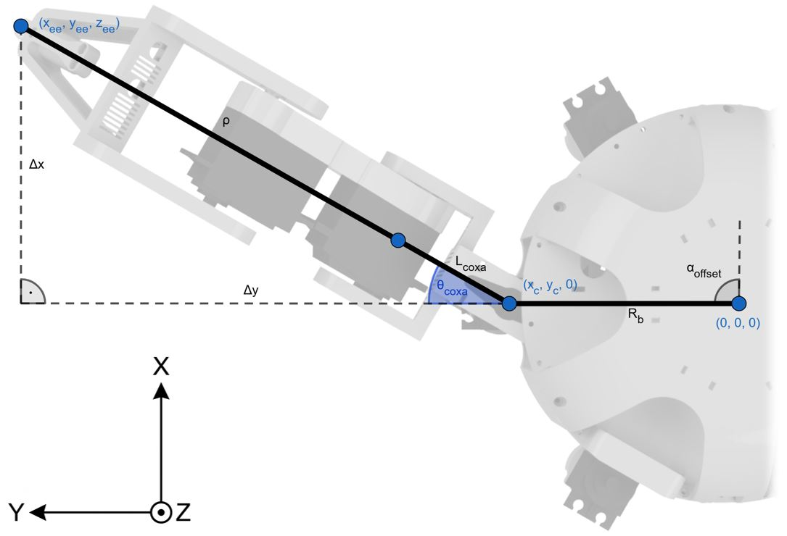
$$x_c = R_b \cdot \cos(\alpha_{offset})$$
$$y_c = R_b \cdot \sin(\alpha_{offset})$$
$$\Delta x = x_{ee} - x_c$$
$$\Delta y = y_{ee} - y_c$$
$$\boldsymbol{\theta_{coxa}} = \operatorname{atan2}(\Delta y, \Delta x) - \alpha_{offset}$$
- $x_c, y_c$: Souřadnice bodu, kde je noha uchycena k tělu robota (kloub coxa). $x_c, y_c$: Coordinates of the point where the leg is attached to the robot's body (coxa joint).
- $R_b$: Poloměr těla robota (vzdálenost od středu těla ke kloubu coxa). $R_b$: Radius of the robot's body (distance from the center of the body to the coxa joint).
- $\alpha_{offset}$: Úhlový offset konkrétní nohy vůči středové ose těla robota. $\alpha_{offset}$: Angular offset of a specific leg relative to the central axis of the robot's body.
- $x_{ee}, y_{ee}$: Požadované souřadnice špičky nohy. $x_{ee}, y_{ee}$: Desired coordinates of the leg tip.
- $\Delta x, \Delta y$: Vzdálenost mezi špičkou nohy a kloubem coxa v ose X a Y. $\Delta x, \Delta y$: Distance between the leg tip and the coxa joint in the X and Y axes.
-
$\theta_{coxa}$: Výsledný úhel natočení pro servo v prvním kloubu (coxa). Funkce
atan2vrací úhel ve správném kvadrantu. $\theta_{coxa}$: The resulting rotation angle for the servo in the first joint (coxa). Theatan2function returns the angle in the correct quadrant.
2. Výpočet úhlů femur a tibia 2. Femur and tibia angle calculation
$$\rho = \sqrt{\Delta x^2 + \Delta y^2} - L_{coxa}$$
$$R = \sqrt{\rho^2 + z_{ee}^2}$$
$$\gamma = \arccos\left(\frac{L_{femur}^2 + L_{tibia}^2 - R^2}{2 \cdot L_{femur} \cdot L_{tibia}}\right)$$
$$\boldsymbol{\theta_{tibia}} = \pi - \gamma - \theta_{offset}$$
$$\alpha = \arccos\left(\frac{L_{femur}^2 + R^2 - L_{tibia}^2}{2 \cdot L_{femur} \cdot R}\right)$$
$$\beta = \operatorname{atan2}(z_{ee}, \rho)$$
$$\boldsymbol{\theta_{femur}} = \alpha - \beta$$
- $L_{coxa}, L_{femur}, L_{tibia}$: Délky jednotlivých částí nohy. $L_{coxa}, L_{femur}, L_{tibia}$: Lengths of individual leg parts.
- $\rho$: Horizontální vzdálenost od druhého kloubu (femur) ke špičce nohy. $\rho$: Horizontal distance from the second joint (femur) to the leg tip.
- $z_{ee}$: Vertikální poloha špičky nohy. $z_{ee}$: Vertical position of the leg tip.
- $R$: Přímá vzdálenost od kloubu femur ke špičce nohy. $R$: Direct distance from the femur joint to the leg tip.
- $\gamma$: Vnitřní úhel mezi segmenty femur a tibia. $\gamma$: Inner angle between the femur and tibia segments.
- $\theta_{tibia}$: Výsledný úhel pro kloub tibia (s mechanickým offsetem $\theta_{offset}$). $\theta_{tibia}$: Resulting angle for the tibia joint (with mechanical offset $\theta_{offset}$).
- $\alpha$: Vnitřní úhel mezi segmentem femur a pomyslnou spojnicí $R$. $\alpha$: Inner angle between the femur segment and the imaginary line $R$.
- $\beta$: Úhel zdvihu špičky nohy vůči horizontální rovině kloubu femur. $\beta$: Elevation angle of the leg tip relative to the horizontal plane of the femur joint.
- $\theta_{femur}$: Výsledný úhel pro kloub femur. $\theta_{femur}$: Resulting angle for the femur joint.
// Inverse kinematics for one leg
static bool ik_angles_from_body_target(float x_ee, float y_ee, float z_ee, int leg,
float *theta_coxa_out, float *theta_femur_out, float *theta_tibia_out)
{
// Get leg anchor point and angle
float x_c = leg_anchor[leg].x;
float y_c = leg_anchor[leg].y;
float alpha_offset = leg_anchor[leg].alpha;
// Compute coxa angle
const float delta_x = x_ee - x_c;
const float delta_y = y_ee - y_c;
float theta_coxa = atan2f(delta_y, delta_x) - alpha_offset;
theta_coxa = remainderf(theta_coxa, 2.0f*(float)M_PI); // (-pi, pi]
// Projection
float rho = hypotf(delta_x, delta_y) - L_COXA;
float R = hypotf(rho, z_ee);
// Where the robot can reach
const float R_min = fabsf(L_FEMUR - L_TIBIA);
const float R_max = (L_FEMUR + L_TIBIA);
// Can it be reached?
if (R < R_min || R > R_max || rho < 0.0f) {
return false;
}
// Compute tibia angle
float cos_gamma = (L_FEMUR*L_FEMUR + L_TIBIA*L_TIBIA - R*R) / (2.0f*L_FEMUR*L_TIBIA);
cos_gamma = clamp(cos_gamma, -1.0f, 1.0f);
float gamma = acosf(cos_gamma);
float theta_tibia = (float)M_PI - gamma;
const float theta_offset = TIBIA_ANGLE * (float)M_PI / 180.0f; // Convert tibia angle offset to radians
theta_tibia -= theta_offset; // Apply tibia angle offset
// Compute femur angle
float cos_alpha = (L_FEMUR*L_FEMUR + R*R - L_TIBIA*L_TIBIA) / (2.0f*L_FEMUR * fmaxf(R, 1e-9f));
cos_alpha = clamp(cos_alpha, -1.0f, 1.0f);
float alpha = acosf(cos_alpha);
float beta = atan2f(z_ee, rho);
float theta_femur = alpha - beta;
*theta_coxa_out = theta_coxa;
*theta_femur_out = theta_femur;
*theta_tibia_out = theta_tibia;
return true;
}
Chůze hexapoda Hexapod walking
Synchronizace nohou Leg synchronization
Pohyb nohy hexapoda při chůzi je periodický a skládá se ze dvou fází: The movement of the hexapod leg during walking is periodic and consists of two phases:
- Stance (opěrná fáze): noha je v kontaktu s podložkou a posouvá tělo robota. Stance phase: the leg is in contact with the ground and moves the robot's body.
- Swing (fáze přenosu): noha se zvedne a přesouvá se vzduchem z konce předchozí stance fáze do výchozího bodu pro další krok. Swing phase: the leg is lifted and moves through the air from the end of the previous stance phase to the starting point for the next step.

Aby si robot udržel stabilitu, musí mít v každém okamžiku na zemi dostatek nohou. Z toho důvodu je nutné jejich pohyb synchronizovat. To znamená definovat fázové posuny mezi jednotlivými končetinami a určit, jak velkou část celého cyklu tvoří opěrná fáze oproti té přenosové. Kombinace těchto parametrů tvoří různé vzory chůze (tzv. gaity). To maintain stability, the robot must have enough legs on the ground at any given time. For this reason, it is necessary to synchronize their movement. This means defining phase offsets between the individual limbs and determining how much of the entire cycle the stance phase takes up compared to the swing phase. The combination of these parameters forms different walking patterns (gaits).
Nejčastějším vzorem je tripod gait, při kterém se nohy pohybují ve dvou střídajících se trojicích. Pokud celkový cyklus kroku vyjádříme jako interval [0, 1), fázové posuny pro šestici nohou by vypadaly takto: 0,0; 0,5; 0,0; 0,5; 0,0; 0,5. Aby stance fáze jedné trojice přesně navazovala na druhou, musí být obě fáze stejně dlouhé. Tento poměr (podíl stance fáze vůči celému cyklu) jsem v kódu označil parametrem beta. Pro tripod gait má hodnotu 0,5.
The most common pattern is the tripod gait, in which the legs move in two alternating triplets. If we express the total step cycle as the interval [0, 1), the phase offsets for the six legs would look like this: 0.0; 0.5; 0.0; 0.5; 0.0; 0.5. For the stance phase of one triplet to follow exactly after the other, both phases must be equally long. I denoted this ratio (the proportion of the stance phase to the entire cycle) in the code with the parameter beta. For the tripod gait, it has a value of 0.5.
Průběh kroku je řízen globálním časovačem (v kódu jako phase_base). Tato hodnota plynule roste od 0 do 1 rychlostí, kterou určuje frekvence chůze (počet kroků za sekundu). Pro zjištění, v jaké části cyklu se nachází konkrétní noha, se k této globální hodnotě jednoduše přičte její specifický fázový posun. Pokud výsledek přesáhne hodnotu 1, automaticky se o jedničku sníží. Tím je zajištěna neustálá a přesná smyčka chůze nezávisle na zvoleném vzoru.
The progression of the step is controlled by a global timer (in code as phase_base). This value smoothly increases from 0 to 1 at a speed determined by the walking frequency (number of steps per second). To find out what part of the cycle a specific leg is in, its specific phase offset is simply added to this global value. If the result exceeds 1, it automatically wraps around by subtracting one. This ensures a continuous and accurate walking loop regardless of the selected pattern.
Výtažky z kódu důležité pro časování a synchronizaci chůze (kompletní kód na konci stránky): Code excerpts important for timing and walking synchronization (complete code at the bottom of the page):
// Thread for controlling walking
void* walking_thread(void* arg) {
// ... Initialization of state variables ...
const uint64_t period_us = SERVO_PERIOD_US; // Control loop period
float phase_off[NUM_OF_LEGS] = {0};
// ... Load initial gait offsets from global state ...
// Timing setup
uint64_t t0 = now_us();
uint64_t next_tick = t0 + period_us;
uint64_t prev_now = t0;
float phase_base = 0.0f; // Shared global phase
while (1) {
// ... Thread synchronization and gait change handling ...
// Compute time delta
uint64_t now = now_us();
float dt = (float)((now - prev_now) * 1e-6f); // Step delta [s]
dt = fminf(dt, MAX_DT); // Prevent big time jumps
prev_now = now;
const float T = (freq > 1e-6f) ? (1.0f / freq) : 1e9f; // Walking period
// Advance global phase
phase_base = wrap01(phase_base + freq * dt);
// Evaluate target for each leg based on phase
for (int l = 0; l < NUM_OF_LEGS; ++l) {
// Apply leg-specific offset to get phase in [0..1)
float phase = phase_base + phase_off[l];
if (phase >= 1.0f) phase -= 1.0f;
if (is_walking) {
// ... Check stopping conditions ...
get_next_point(l, phase, dt, beta, T, omega, vx, vy, h, swing_h, params_changed, stopping);
}
}
// ... Solve inverse kinematics and move servos ...
// Timing execution control to maintain steady loop frequency
if (now < next_tick) {
sleep_until_us(next_tick);
next_tick += period_us;
} else {
// If missed the deadline, catch up without accumulating drift
uint64_t behind = now - next_tick;
next_tick += ((behind / period_us) + 1) * period_us;
}
// ... Stop conditions and state cleanup ...
}
return (void*)(intptr_t)0;
}
Přehled parametrů pro různé vzory chůze: Overview of parameters for different walking patterns:
const GaitParams gaits[] = {
// TRIPOD — 3+3 legs
{.phaseOffsets = {0.0f, 0.5f, 0.0f, 0.5f, 0.0f, 0.5f}, .beta = 0.5f, .max_speed = 90.0f, .max_turning_speed = 0.6f},
// AMBLE — slow tripod, same groups as tripod, higher duty
{.phaseOffsets = {0.0f, 0.5f, 0.0f, 0.5f, 0.0f, 0.5f}, .beta = 0.70f, .max_speed = 70.0f, .max_turning_speed = 0.4f},
// TETRAPOD — three phases with pairs (0,3) (1,4) (2,5)
{.phaseOffsets = {0.0f, 1.0f/3.0f, 2.0f/3.0f, 0.0f, 1.0f/3.0f, 2.0f/3.0f}, .beta = 2.0f/3.0f, .max_speed = 60.0f, .max_turning_speed = 0.4f},
// WAVE — one leg swinging at a time, makes a wave
{.phaseOffsets = {0.0f, 1.0f/6.0f, 2.0f/6.0f, 3.0f/6.0f, 4.0f/6.0f, 5.0f/6.0f}, .beta = 5.2f/6.0f, .max_speed = 20.0f, .max_turning_speed = 0.3f},
// RIPPLE — one leg at a time
{.phaseOffsets = {0.0f, 2.0f/6.0f, 4.0f/6.0f, 1.0f/6.0f, 3.0f/6.0f, 5.0f/6.0f}, .beta = 5.0f/6.0f, .max_speed = 40.0f, .max_turning_speed = 0.35f},
// PRONK — all legs swing together (just for fun)
{.phaseOffsets = {0.0f, 0.0f, 0.0f, 0.0f, 0.0f, 0.0f}, .beta = 0.35f, .max_speed = 80.0f, .max_turning_speed = 0.5f}
};
Stance fáze Stance phase
Ve stance fázi (opěrné fázi) je noha v kontaktu s podložkou. Zatímco špička nohy stojí vůči zemi pevně na místě, vůči tělu robota se pohybuje, čímž ho posouvá. Cílem je tedy vypočítat potřebnou trajektorii špičky nohy v souřadnicovém systému těla robota. In the stance phase, the leg is in contact with the ground. While the tip of the leg stands firmly in place relative to the ground, it moves relative to the robot's body, thereby moving it. The goal is therefore to calculate the required trajectory of the leg tip in the coordinate system of the robot's body.
Představme si situaci z pohledu robota: jeho tělo je v klidu a podlaha pod ním „ujíždí“. Pokud se má robot pohybovat určitou rychlostí, musí se podložka (a s ní i opřená noha) posouvat vůči tělu stejnou rychlostí, ale opačným směrem. Stejný princip platí i pro rotaci - pokud se tělo otáčí kolem své osy na jednu stranu, podlaha pod ním zdánlivě rotuje na druhou. Imagine the situation from the robot's point of view: its body is at rest and the floor under it "slides away". If the robot is to move at a certain speed, the ground (and with it the supported leg) must translate relative to the body at the same speed, but in the opposite direction. The same principle applies to rotation - if the body rotates around its axis to one side, the floor underneath it seemingly rotates to the other.
Tuto skutečnost lze popsat následující rovnicí: This fact can be described by the following equation:
$$\frac{d\vec{r}}{dt} = -\vec{v} - \vec{\omega} \times \vec{r}$$
Pro pohyb v rovině XY to můžeme přepsat jako soustavu dvou obyčejných diferenciálních rovnic prvního řádu: For movement in the XY plane, we can rewrite this as a system of two ordinary first-order differential equations:
$$\begin{pmatrix} \frac{dx}{dt} \\ \frac{dy}{dt} \end{pmatrix} = -\begin{pmatrix} v_x \\ v_y \end{pmatrix} - \begin{pmatrix} 0 & -\omega \\ \omega & 0 \end{pmatrix} \begin{pmatrix} x \\ y \end{pmatrix}$$
Rozepsáním do složek získáme konečné rovnice pro výpočet rychlosti v jednotlivých osách: By expanding into components, we obtain the final equations for calculating the velocity in the individual axes:
$$\frac{dx}{dt} = -v_x + \omega y$$
$$\frac{dy}{dt} = -v_y - \omega x$$
- $\vec{r} = (x, y, z)^T$: Polohový vektor určující aktuální souřadnice špičky nohy v souřadnicovém systému těla robota. $\vec{r} = (x, y, z)^T$: Position vector determining the current coordinates of the leg tip in the coordinate system of the robot's body.
- $\vec{v} = (v_x, v_y, 0)^T$: Vektor požadované translační rychlosti těla robota vůči zemi. $\vec{v} = (v_x, v_y, 0)^T$: Vector of the desired translational velocity of the robot's body relative to the ground.
- $\vec{\omega} = (0, 0, \omega)^T$: Vektor požadované úhlové rychlosti otáčení těla robota. $\vec{\omega} = (0, 0, \omega)^T$: Vector of the desired angular velocity of rotation of the robot's body.
- $\frac{d\vec{r}}{dt} = \left(\frac{dx}{dt}, \frac{dy}{dt}, 0\right)^T$: Okamžitá rychlost pohybu nohy vůči tělu. $\frac{d\vec{r}}{dt} = \left(\frac{dx}{dt}, \frac{dy}{dt}, 0\right)^T$: The instantaneous velocity of the leg's movement relative to the body.
Abychom získali souřadnice, které budeme v dalším kroku posílat do inverzní kinematiky, musíme tyto diferenciální rovnice integrovat přes časový krok $dt$. Analytické řešení, které udává nové souřadnice nohy po uplynutí tohoto času, je následující: To get the coordinates that we will send to the inverse kinematics in the next step, we must integrate these differential equations over the time step $dt$. The analytical solution, which gives the new coordinates of the leg after this time has elapsed, is as follows:
$$x_{nové} = x \cdot c + y \cdot s - v_x \cdot S - v_y \cdot C$$
$$y_{nové} = -x \cdot s + y \cdot c + v_x \cdot C - v_y \cdot S$$
Kde: Where:
$$c = \cos(\omega \cdot dt)$$
$$s = \sin(\omega \cdot dt)$$
$$S = \frac{\sin(\omega \cdot dt)}{\omega}$$
$$C = \frac{1 - \cos(\omega \cdot dt)}{\omega}$$
- $x, y$: Výchozí souřadnice špičky nohy na začátku časového kroku. $x, y$: Initial coordinates of the leg tip at the beginning of the time step.
- $x_{nové}, y_{nové}$: Nové souřadnice špičky nohy po uplynutí časového kroku. $x_{nové}, y_{nové}$: New coordinates of the leg tip after the time step has elapsed.
- $dt$: Délka časového kroku řídicí smyčky. $dt$: Length of the control loop time step.
Při malých úhlových rychlostech však narážíme na numerickou nestabilitu. Problém nespočívá jen v dělení nulou u členů $S$ a $C$, ale také v omezené přesnosti funkcí $\sin$ a $\cos$ v typu float. Kvůli zaokrouhlování procesor vyhodnotí $\cos(\omega \cdot dt)$ jako přesně $1.0$, čímž se čitatel u koeficientu $C$ vynuluje a rotační složka z výpočtu vyzmizí.
However, at small angular velocities, we encounter numerical instability. The problem lies not only in division by zero for the terms $S$ and $C$, but also in the limited precision of the $\sin$ and $\cos$ functions in the float type. Due to rounding, the processor evaluates $\cos(\omega \cdot dt)$ as exactly $1.0$, which zeros out the numerator for the coefficient $C$ and the rotational component disappears from the calculation.
Tyto problémy řeším aproximací Taylorovými polynomy na okolí nuly (pro $x = \omega \cdot dt < 10^{-3}$), kde se proměnná $\omega$ vykrátí: I solve these problems by Taylor polynomial approximation around zero (for $x = \omega \cdot dt < 10^{-3}$), where the variable $\omega$ cancels out:
$$S(x) = \frac{\sin(x)}{\omega} \approx dt \cdot \left(1 - \frac{x^2}{6} + \frac{x^4}{120}\right)$$
$$C(x) = \frac{1 - \cos(x)}{\omega} \approx dt \cdot \left(\frac{x}{2} - \frac{x^3}{24} + \frac{x^5}{720}\right)$$
$$s(x) = \sin(x) \approx x - \frac{x^3}{6} + \frac{x^5}{120}$$
$$c(x) = \cos(x) \approx 1 - \frac{x^2}{2} + \frac{x^4}{24}$$
Relevantní výtažek z kódu (kompletní kód na konci stránky): Relevant code excerpt (complete code at the bottom of the page):
// Compute stance x, y using dt
static inline Vec2 stance_map_step(Vec2 p, float dt, float vx, float vy, float omega) {
const float wdt = omega * dt;
// No turning
if (fabsf(wdt) < 1e-8f) {
p.x -= vx * dt;
p.y -= vy * dt;
return p;
}
// Turning
float s, c, S, C;
const float a = fabsf(wdt);
// If omega too small, use Taylor to improve numerical stability
if (a < 1e-3f) {
const float w2 = wdt * wdt;
const float w3 = w2 * wdt;
const float w4 = w2 * w2;
const float w5 = w4 * wdt;
s = wdt - (w3 * (1.0f/6.0f)) + (w5 * (1.0f/120.0f));
c = 1.0f - 0.5f*w2 + (w4 * (1.0f/24.0f));
S = dt * (1.0f - (w2 * (1.0f/6.0f)) + (w4 * (1.0f/120.0f)));
C = dt * (0.5f*wdt - (w3 * (1.0f/24.0f)) + (w5 * (1.0f/720.0f)));
// Otherwise do it normally
} else {
s = sinf(wdt);
c = cosf(wdt);
S = s / omega;
C = (1.0f - c) / omega;
}
// Analytical solution
Vec2 q;
q.x = p.x * c + p.y * s - vx * S - vy * C;
q.y = -p.x * s + p.y * c + vx * C - vy * S;
return q;
}
Swing fáze Swing phase
Ve swing fázi (fázi přenosu) se noha přesouvá vzduchem na novou pozici pro zahájení dalšího kroku. Aby měla noha během chůze k dispozici co největší pracovní prostor, je důležité, aby se v coxe (kyčli) pohybovala zhruba symetricky kolem středu svého mechanického rozsahu. Toho dosáhneme vhodným výpočtem bodu dopadu (tzv. touchdown). In the swing phase, the leg moves through the air to a new position to start the next step. So that the leg has the largest possible workspace available during walking, it is important that it moves roughly symmetrically around the center of its mechanical range in the coxa (hip). We achieve this by properly calculating the landing point (the so-called touchdown).
Každá noha má definovanou svou výchozí pozici (v kódu default_leg_position), do které se vrací a ve které se zastaví při přerušení chůze. Cílový bod dopadu se pro každý krok určuje dynamicky: vezme se tato výchozí klidová pozice a pomocí funkce stance_map_step se spočítá, o kolik by se tělo robota při aktuální rychlosti posunulo za polovinu doby trvání stance fáze. Tento posun se od výchozí pozice odečte. Díky tomu se noha během stance fáze pohybuje symetricky kolem výchozího bodu.
Each leg has its defined default position (in the code default_leg_position), to which it returns and where it stops when walking is interrupted. The target touchdown point is determined dynamically for each step: this default rest position is taken, and using the stance_map_step function, it is calculated how much the robot's body would translate at the current speed during half of the duration of the stance phase. This translation is subtracted from the default position. Thanks to this, the leg moves symmetrically around the default point during the stance phase.
Pohyb nohy v rovině XY je během přenosu realizován lineární interpolací mezi počátečním bodem odlepení a vypočítaným bodem dopadu. Aby noha při přesunu nenarazila do země a vyhnula se překážkám, opisuje v ose Z trajektorii definovanou následující rovnicí: The movement of the leg in the XY plane during the swing is realized by linear interpolation between the initial liftoff point and the calculated touchdown point. To prevent the leg from hitting the ground during the transfer and to avoid obstacles, it describes a trajectory in the Z axis defined by the following equation:
$$z = h + 4 \cdot h_{swing} \cdot s \cdot (1 - s)$$
- $h$: Výchozí Z-ová souřadnice nohy vůči tělu $h$: Default Z coordinate of the leg relative to the body
- $h_{swing}$: Výška kroku (maximální zdvih nohy). $h_{swing}$: Step height (maximum leg lift).
- $s$: Parametr průběhu kroku na intervalu $[0, 1]$. $s$: Step progression parameter on the interval $[0, 1]$.

Pokud by parametr $s$ narůstal lineárně (konstantní rychlostí), docházelo by na začátku a na konci pohybu k velkým zrychlením. Tyto náhlé změny by opotřebovávaly servomotory a narušovaly stabilitu robota. Proto je pohyb parametrizován polynomem 5. stupně (v počítačové grafice známým jako Quintic Smoothstep): If the parameter $s$ increased linearly (at a constant speed), large accelerations would occur at the beginning and end of the movement. These sudden changes would wear out the servo motors and disrupt the stability of the robot. Therefore, the movement is parameterized by a 5th-degree polynomial (known in computer graphics as Quintic Smoothstep):
$$s(\tau) = 6\tau^5 - 15\tau^4 + 10\tau^3$$

Kde $\tau$ je normalizovaný čas trvání swing fáze od 0 do 1. Tato funkce se vyznačuje tím, že na daném intervalu plynule narůstá z 0 do 1, přičemž má v krajních bodech nulovou první i druhou derivaci (nulovou počáteční/koncovou rychlost i zrychlení). Ve výsledku má tak noha plynulý rozjezd i dojezd bez trhnutí. Where $\tau$ is the normalized time duration of the swing phase from 0 to 1. This function is characterized by the fact that it smoothly increases from 0 to 1 on the given interval, while having zero first and second derivatives at the endpoints (zero initial/final velocity and acceleration). As a result, the leg has a smooth start and stop without jerking.
Relevantní výtažek z kódu (kompletní kód na konci stránky): Relevant code excerpt (complete code at the bottom of the page):
// Evaluate polynomial for z swing (Quintic Smoothstep)
static inline float smoothstep5(float tau) {
float t2 = tau*tau, t3 = t2*tau;
return 6.0f*t3*t2 - 15.0f*t2*t2 + 10.0f*t3;
}
/* ... výřez z funkce get_next_point() ... */
// SWING: move foot through air toward next stance start
float tau = (phase - beta) / (1.0f - beta); // Absolute swing phase in [0..1]
// On the first swing tick capture liftoff and reference phase, compute touchdown
if (swing_state[leg].first_tick) {
swing_state[leg].x_lo = cur_x;
swing_state[leg].y_lo = cur_y;
swing_state[leg].tau0 = tau;
// Predict stance drift (výpočet bodu dopadu)
float dt_half = 0.5f * T * beta;
float x_home = default_leg_position[leg].target_position.x;
float y_home = default_leg_position[leg].target_position.y;
Vec2 TD = stance_map_step((Vec2){x_home, y_home}, -dt_half, vx, vy, omega);
swing_state[leg].x_td = TD.x;
swing_state[leg].y_td = TD.y;
swing_state[leg].first_tick = false;
}
// Mid-swing parameter change: replan touchdown
else if (params_changed && swing_state[leg].in_swing) {
float dt_half = 0.5f * T * beta;
float x_home = default_leg_position[leg].target_position.x;
float y_home = default_leg_position[leg].target_position.y;
Vec2 TD = stance_map_step((Vec2){x_home, y_home}, -dt_half, vx, vy, omega);
swing_state[leg].x_td = TD.x;
swing_state[leg].y_td = TD.y;
}
// Relative swing timeline from (re)plan moment
float denom = 1.0f - swing_state[leg].tau0;
float tau_rel = (denom > 1e-6f) ? (tau - swing_state[leg].tau0) / denom : 1.0f;
// XY (Lineární interpolace v rovině)
float s_rel = smoothstep5(tau_rel); // Smooth interpolation
float new_x = lerp(swing_state[leg].x_lo, swing_state[leg].x_td, s_rel);
float new_y = lerp(swing_state[leg].y_lo, swing_state[leg].y_td, s_rel);
// Z (Kopeček / parabola)
float s_abs = smoothstep5(tau); // Smooth interpolation
float z = h + 4.0f * swing_h * s_abs * (1.0f - s_abs);
// Save new target
leg_position[leg].target_position.x = new_x;
leg_position[leg].target_position.y = new_y;
leg_position[leg].target_position.z = z;
Kalibrace servomotorů Servo motor calibration
Protože budu serva řídit pomocí PWM signálu o frekvenci 50 Hz z modulů PCA9685, musel jsem nejdříve zjistit, jaká šířka pulzu odpovídá jakému úhlu. V ideálním světě by stačilo změřit krajní hodnoty pro 0 a 180 stupňů a zbytek dopočítat. V praxi ale převodní charakteristika serv není dokonalá přímka, takže by tento přístup přinesl velké nepřesnosti. Because I will control the servos using a 50 Hz PWM signal from the PCA9685 modules, I first had to find out what pulse width corresponds to what angle. In an ideal world, it would be enough to measure the extreme values for 0 and 180 degrees and calculate the rest. In practice, however, the servo transfer characteristic is not a perfect straight line, so this approach would introduce significant inaccuracies.
Zvolil jsem proto přesnější metodu. Rozsah serva (0 až 180 stupňů) jsem rozdělil na čtyři segmenty po 45 stupních. U každého z pěti kalibračních bodů jsem změřil délku pulzu a jednotlivé segmenty jsem následně nahradil přímkami. Výsledek je aproximace převodní charakteristiky v rozsahu 0 až 180 stupňů pomocí čtyř úseček. Tento proces jsem musel provést pro všech 18 motorů, protože každý kus má mírně odlišnou charakteristiku. I therefore chose a more accurate method. I divided the servo range (0 to 180 degrees) into four 45-degree segments. At each of the five calibration points, I measured the pulse length, and then I replaced the individual segments with straight lines. The result is an approximation of the transfer characteristic in the range of 0 to 180 degrees using four line segments. I had to perform this process for all 18 motors, as each unit has a slightly different characteristic.
Pro usnadnění kalibrace jsem si vytiskl jednoduchý nástroj. Jeho první díl se nasadí na tělo serva a zafixuje v otvorech pro šrouby, druhý díl se přichytí k hřídeli. To make calibration easier, I printed a simple tool. Its first part fits onto the servo body and fixes into the screw holes, the second part attaches to the shaft.

K samotnému měření používám následující kód. Využívá knihovnu wiringPiI2C pro komunikaci s PCA9685 přes sběrnici I2C. Program umožňuje ručně upravovat šířku PWM pulzu stiskem kláves + a -, případně přímým zadáním číselné hodnoty. Naměřené hodnoty si průběžně zapisuji do tabulky.
I use the following code for the actual measurement. It uses the wiringPiI2C library for communication with the PCA9685 over the I2C bus. The program allows manually adjusting the PWM pulse width by pressing the + and - keys, or by directly entering a numerical value. I continuously record the measured values into a table.
#define _DEFAULT_SOURCE
#include <unistd.h>
#include <stdio.h>
#include <wiringPiI2C.h>
#define PCA9685_ADDR 0x41 // I2C module address
#define MODE1 0x00
#define PRESCALE 0xFE // Register for frequency
#define LED0_ON_L 0x06
#define CHANNEL 3
void pca9685_set_pwm(int fd, int channel, int on, int off); // Servo control
void pca9685_init(int fd); // Basic module setup
int main() {
int fd = wiringPiI2CSetup(PCA9685_ADDR); // I2C initialization
if (fd < 0) {
printf("ERROR: Failed to open I2C.\n");
return 1;
}
pca9685_init(fd);
int pwm = 0;
char ch;
while (1) {
ch = getchar();
if (ch == '+') {
pwm++;
printf("PWM: %d\n", pwm);
} else if (ch == '-') {
pwm--;
printf("PWM: %d\n", pwm);
} else if (ch >= '0' && ch <= '9') {
ungetc(ch, stdin); // Returns character to read the whole number
scanf("%d", &pwm);
printf("PWM: %d\n", pwm);
}
pca9685_set_pwm(fd, CHANNEL, 0, pwm); // Writes the value
usleep(100000);
}
return 0;
}
void pca9685_set_pwm(int fd, int channel, int on, int off) {
int reg = LED0_ON_L + 4 * channel; // Select register
wiringPiI2CWriteReg8(fd, reg, on & 0xFF); // Pulse start (lower byte)
wiringPiI2CWriteReg8(fd, reg + 1, on >> 8); // Pulse start (upper byte)
wiringPiI2CWriteReg8(fd, reg + 2, off & 0xFF); // Pulse end (lower byte)
wiringPiI2CWriteReg8(fd, reg + 3, off >> 8); // Pulse end (upper byte)
}
void pca9685_init(int fd) {
wiringPiI2CWriteReg8(fd, MODE1, 0x10); // Sleep to change frequency
wiringPiI2CWriteReg8(fd, PRESCALE, 121); // Set to 50 hz
wiringPiI2CWriteReg8(fd, MODE1, 0x00); // Wake up
usleep(1000);
wiringPiI2CWriteReg8(fd, MODE1, 0xA1); // Register auto increment
}
Tabulka naměřených hodnot pak vypadá takto: The table of measured values then looks like this:
// PWM values for 0, 45, 90, 135, 180 deg
static const float servo_calibration[NUM_OF_LEGS][JOINTS_PER_LEG][CAL_POINTS] = {
// Leg 0 - L1
{
{119.f, 208.f, 307.f, 403.f, 504.f}, // L11
{114.f, 212.f, 315.f, 420.f, 521.f}, // L12
{109.f, 205.f, 308.f, 406.f, 501.f} // L13
},
// Leg 1 - L2
{
{115.f, 210.f, 311.f, 411.f, 508.f}, // L21
{104.f, 206.f, 313.f, 417.f, 514.f}, // L22
{112.f, 206.f, 310.f, 414.f, 510.f} // L23
},
// Leg 2 - L3
{
{110.f, 205.f, 310.f, 415.f, 511.f}, // L31
{104.f, 206.f, 315.f, 418.f, 515.f}, // L32
{ 98.f, 191.f, 293.f, 397.f, 493.f} // L33
},
// Leg 3 - P3
{
{109.f, 201.f, 299.f, 395.f, 490.f}, // P31
{ 96.f, 196.f, 298.f, 400.f, 496.f}, // P32
{104.f, 197.f, 293.f, 390.f, 490.f} // P33
},
// Leg 4 - P2
{
{106.f, 200.f, 300.f, 398.f, 494.f}, // P21
{111.f, 211.f, 310.f, 412.f, 508.f}, // P22
{102.f, 195.f, 295.f, 394.f, 489.f} // P23
},
// Leg 5 - P1
{
{111.f, 203.f, 300.f, 399.f, 494.f}, // P11
{100.f, 200.f, 301.f, 402.f, 500.f}, // P12
{118.f, 207.f, 307.f, 403.f, 502.f} // P13
}
};
Showcase Showcase
Chůze Walking
Posuny a náklony těla Body translations and rotations
Chůze + posuny a náklony těla Walking + body translations and rotations
Zdrojový kód Source code
Dálkové ovládání Remote control
Zdrojový kód najdete také na GitHubu. The source code is also available on GitHub.
#include <U8g2lib.h> // OLED
#include <Wire.h> // I2C
// Display object
U8G2_SH1106_128X64_NONAME_F_HW_I2C u8g2(U8G2_R0, /* reset=*/ U8X8_PIN_NONE);
// Button pins
const int pinSW1 = 27;
const int pinSW2 = 5;
const int pinSW3 = 3;
// Potentiometer pins
const int pinRV1 = A0;
const int pinRV2 = A1;
const int pinRV3 = A14;
const int pinRV4 = A12;
// Left joystick
const int joy1X = A10;
const int joy1Y = A8;
const int joy1Btn = A6;
// Right joystick
const int joy2X = A7;
const int joy2Y = A5;
const int joy2Btn = A3;
// Timing
constexpr float FREQ = 50.0f;
volatile bool sample_due = false;
const float EMA_ALPHA = 0.30f;
// Setup Timer1 for CTC mode
void setupTimer1CTC(float hz) {
const uint16_t presc_vals[5] = {1,8,64,256,1024};
const uint16_t presc_bits[5] = {_BV(CS10), _BV(CS11), _BV(CS11)|_BV(CS10), _BV(CS12), _BV(CS12)|_BV(CS10)};
uint16_t chosen = 0; uint32_t ocr = 0;
for(int i = 0;i < 5; i++){
ocr = (uint32_t)(F_CPU/(presc_vals[i]*hz)) - 1U;
if (ocr <= 65535U && ocr >= 1U) {
chosen = presc_bits[i];
break;
}
}
if (!chosen) {
uint32_t t = (uint32_t)(F_CPU/(1024.0*hz)) - 1U;
if (t > 65535U) t = 65535U;
ocr = t;
chosen = _BV(CS12)| _BV(CS10);
}
noInterrupts();
TCCR1A = 0;
TCCR1B = 0;
TCNT1 = 0;
OCR1A = (uint16_t)ocr;
TCCR1B |= _BV(WGM12) | chosen;
TIMSK1 |= _BV(OCIE1A);
interrupts();
}
// Timer interrupt
ISR(TIMER1_COMPA_vect) {
sample_due = true;
}
// Send data frame
static inline void sendFrameHW(const uint16_t v[8], uint8_t buttons) {
const uint8_t LEN = 8*2 + 1; // Payload length
uint8_t sum = 0; // Checksum
auto put = [&](uint8_t b ){
Serial3.write(b);
sum = (uint8_t)(sum + b);
};
put(0xAA); // Start byte
put(LEN); // Data length
for (int i = 0; i < 8; i++) {
put((uint8_t)(v[i] & 0xFF)); // Low byte
put((uint8_t)(v[i] >> 8)); // High byte
}
put(buttons);
Serial3.write(sum);
}
void setup() {
Serial.begin(115200);
Serial3.begin(115200);
delay(50);
pinMode(pinSW1, INPUT_PULLUP);
pinMode(pinSW2, INPUT_PULLUP);
pinMode(pinSW3, INPUT_PULLUP);
pinMode(joy1Btn, INPUT_PULLUP);
pinMode(joy2Btn, INPUT_PULLUP);
u8g2.setBusClock(400000); // Fast I2C
u8g2.begin();
setupTimer1CTC(FREQ);
}
void loop() {
// Store display values between cycles
static int drawJ1X = 20, drawJ1Y = 32, drawJ2X = 106, drawJ2Y = 32;
static int h1 = 0, h2 = 0, h3 = 0, h4 = 0;
static bool btn1 = false, btn2 = false, btn3 = false;
static bool j1Btn = false, j2Btn = false;
// Store smoothed potentiometer values
static float smoothRV1 = -1.0f;
static float smoothRV2 = -1.0f;
static float smoothRV3 = -1.0f;
static float smoothRV4 = -1.0f;
bool due;
noInterrupts();
due = sample_due;
if (due) sample_due = false; // Reset if true
interrupts();
// Read inputs and send using Bluetooth
if (due) {
// Read values
int rawRV1 = analogRead(pinRV1);
int rawRV2 = analogRead(pinRV2);
int rawRV3 = 1023 - analogRead(pinRV3);
int rawRV4 = analogRead(pinRV4);
// Initialize first read
if (smoothRV1 < 0.0f) {
smoothRV1 = rawRV1;
smoothRV2 = rawRV2;
smoothRV3 = rawRV3;
smoothRV4 = rawRV4;
} else {
// EMA smoothing
smoothRV1 = (EMA_ALPHA * rawRV1) + ((1.0f - EMA_ALPHA) * smoothRV1);
smoothRV2 = (EMA_ALPHA * rawRV2) + ((1.0f - EMA_ALPHA) * smoothRV2);
smoothRV3 = (EMA_ALPHA * rawRV3) + ((1.0f - EMA_ALPHA) * smoothRV3);
smoothRV4 = (EMA_ALPHA * rawRV4) + ((1.0f - EMA_ALPHA) * smoothRV4);
}
// Convert to integers
unsigned int valRV1 = (unsigned int)smoothRV1;
unsigned int valRV2 = (unsigned int)smoothRV2;
unsigned int valRV3 = (unsigned int)smoothRV3;
unsigned int valRV4 = (unsigned int)smoothRV4;
// Convert values to pixels
h1 = (valRV1 * 36) >> 10;
h2 = (valRV2 * 36) >> 10;
h3 = (valRV3 * 36) >> 10;
h4 = (valRV4 * 36) >> 10;
// Read button presses
btn1 = !digitalRead(pinSW1);
btn2 = !digitalRead(pinSW2);
btn3 = !digitalRead(pinSW3);
j1Btn = !digitalRead(joy1Btn);
j2Btn = !digitalRead(joy2Btn);
// Invert Joy 1 axes
long dX1 = 512 - analogRead(joy1X);
long dY1 = 512 - analogRead(joy1Y);
long distSq1 = dX1 * dX1 + dY1 * dY1;
if (distSq1 > 40000L) j1Btn = false;
if (distSq1 > 262144L) {
long dist1 = sqrt(distSq1);
dX1 = (dX1 * 512) / dist1;
dY1 = (dY1 * 512) / dist1;
}
drawJ1X = 20 + (dX1 / 32);
drawJ1Y = 32 + (dY1 / 32);
// Normal Joy 2 axes
long dX2 = analogRead(joy2X) - 512;
long dY2 = analogRead(joy2Y) - 512;
long baseDistSq2 = dX2 * dX2 + dY2 * dY2;
if (baseDistSq2 > 40000L) j2Btn = false;
long distSq2 = dX2 * dX2 + dY2 * dY2;
if (distSq2 > 262144L) {
long dist2 = sqrt(distSq2);
dX2 = (dX2 * 512) / dist2;
dY2 = (dY2 * 512) / dist2;
}
drawJ2X = 106 + (dX2 / 32);
drawJ2Y = 32 + (dY2 / 32);
// Prepare data for Bluetooth
uint16_t v[8];
v[0] = (uint16_t) constrain(dX1 + 512, 0, 1023);
v[1] = (uint16_t) constrain(dY1 + 512, 0, 1023);
v[2] = (uint16_t) constrain(dX2 + 512, 0, 1023);
v[3] = (uint16_t) constrain(dY2 + 512, 0, 1023);
v[4] = valRV1;
v[5] = valRV2;
v[6] = valRV3;
v[7] = valRV4;
uint8_t buttons = 0;
if (j1Btn) buttons |= (1 << 0);
if (j2Btn) buttons |= (1 << 1);
if (btn1) buttons |= (1 << 2);
if (btn2) buttons |= (1 << 3);
if (btn3) buttons |= (1 << 4);
sendFrameHW(v, buttons);
}
// === BLOCK 2: Render OLED display (~28 FPS, independent of BT) ===
static uint32_t last = 0;
uint32_t now = millis();
if (now - last >= 35) { // 35 ms delay = ~28 FPS
last = now;
u8g2.clearBuffer(); // Clear display buffer
// Outlines for joysticks
u8g2.drawCircle(20, 32, 20);
u8g2.drawCircle(106, 32, 20);
// Left joystick dot
if (j1Btn) u8g2.drawDisc(drawJ1X, drawJ1Y, 4);
else u8g2.drawCircle(drawJ1X, drawJ1Y, 4);
// Right joystick dot
if (j2Btn) u8g2.drawDisc(drawJ2X, drawJ2Y, 4);
else u8g2.drawCircle(drawJ2X, drawJ2Y, 4);
// Graph frames
u8g2.drawFrame(46, 27, 6, 36);
u8g2.drawFrame(56, 27, 6, 36);
u8g2.drawFrame(66, 27, 6, 36);
u8g2.drawFrame(76, 27, 6, 36);
// Graph bars
u8g2.drawBox(46, 63 - h4, 6, h4); // RV4 bar
u8g2.drawBox(56, 63 - h3, 6, h3); // RV3 bar
u8g2.drawBox(66, 63 - h1, 6, h1); // RV1 bar
u8g2.drawBox(76, 63 - h2, 6, h2); // RV2 bar
// Top buttons
if (btn1) u8g2.drawDisc(51, 8, 4); else u8g2.drawCircle(51, 8, 4);
if (btn2) u8g2.drawDisc(64, 8, 4); else u8g2.drawCircle(64, 8, 4);
if (btn3) u8g2.drawDisc(77, 8, 4); else u8g2.drawCircle(77, 8, 4);
u8g2.sendBuffer(); // Send buffer to display
}
}
Kalibrace servomotorů Servo motor calibration
#define _DEFAULT_SOURCE
#include <unistd.h>
#include <stdio.h>
#include <wiringPiI2C.h>
#define PCA9685_ADDR 0x41 // I2C module address
#define MODE1 0x00
#define PRESCALE 0xFE // Register for frequency
#define LED0_ON_L 0x06
#define CHANNEL 3
void pca9685_set_pwm(int fd, int channel, int on, int off); // Servo control
void pca9685_init(int fd); // Basic module setup
int main() {
int fd = wiringPiI2CSetup(PCA9685_ADDR); // I2C initialization
if (fd < 0) {
printf("ERROR: Failed to open I2C.\n");
return 1;
}
pca9685_init(fd);
int pwm = 0;
char ch;
while (1) {
ch = getchar();
if (ch == '+') {
pwm++;
printf("PWM: %d\n", pwm);
} else if (ch == '-') {
pwm--;
printf("PWM: %d\n", pwm);
} else if (ch >= '0' && ch <= '9') {
ungetc(ch, stdin); // Returns character to read the whole number
scanf("%d", &pwm);
printf("PWM: %d\n", pwm);
}
pca9685_set_pwm(fd, CHANNEL, 0, pwm); // Writes the value
usleep(100000);
}
return 0;
}
void pca9685_set_pwm(int fd, int channel, int on, int off) {
int reg = LED0_ON_L + 4 * channel; // Select register
wiringPiI2CWriteReg8(fd, reg, on & 0xFF); // Pulse start (lower byte)
wiringPiI2CWriteReg8(fd, reg + 1, on >> 8); // Pulse start (upper byte)
wiringPiI2CWriteReg8(fd, reg + 2, off & 0xFF); // Pulse end (lower byte)
wiringPiI2CWriteReg8(fd, reg + 3, off >> 8); // Pulse end (upper byte)
}
void pca9685_init(int fd) {
wiringPiI2CWriteReg8(fd, MODE1, 0x10); // Sleep to change frequency
wiringPiI2CWriteReg8(fd, PRESCALE, 121); // Set to 50 hz
wiringPiI2CWriteReg8(fd, MODE1, 0x00); // Wake up
usleep(1000);
wiringPiI2CWriteReg8(fd, MODE1, 0xA1); // Register auto increment
}
Hexapod Hexapod
Zdrojový kód najdete také na GitHubu. The source code is also available on GitHub.
CC := gcc
CFLAGS := -Wall -Wextra -Werror -O2 -std=c99 -I. -pthread
LIBS := -lwiringPi -lm
SRCS := main.c pca9685.c servo.c mathUtils.c motion.c vector.c bluetooth_thread.c animation.c
HEADERS := pca9685.h servo.h mathUtils.h motion.h vector.h shared.h bluetooth_thread.h animation.h
OUT := main
all: $(OUT)
$(OUT): $(SRCS) $(HEADERS)
$(CC) $(CFLAGS) -o $@ $(SRCS) $(LIBS)
run: $(OUT)
sudo ./$(OUT)
clean:
rm -f $(OUT)
#pragma once
#include <stdint.h>
#include "vector.h"
#include "servo.h"
uint64_t now_us(void); // Get current time in microseconds
void sleep_until_us(uint64_t target_us); // Absolute sleep using CLOCK_MONOTONIC, retries on EINTR
void interpolate_offset(Vector3 xyz_offset, Vector3 rpy_offset, float animation_dur); // Interpolates offset using polynomial easing
void interpolate_legs_and_offsets(const Vector3 end_targets[NUM_OF_LEGS], float animation_dur); // Interpolates leg positions using polynomial easing and interpolates offsets to 0
void wave_animation(float animation_dur); // Waving animation
#define _POSIX_C_SOURCE 200809L
#define _DEFAULT_SOURCE // usleep
#include <time.h>
#include <unistd.h>
#include <errno.h>
#include "animation.h"
#include "motion.h"
#include "vector.h"
#include "mathUtils.h"
#include "shared.h"
// Animation parameters
static const int animation_pol_deg = 7;
// Get current time in microseconds
uint64_t now_us(void) {
struct timespec ts;
clock_gettime(CLOCK_MONOTONIC, &ts);
return (uint64_t)ts.tv_sec * 1000000ull + (uint64_t)(ts.tv_nsec / 1000ull);
}
// Absolute sleep using CLOCK_MONOTONIC, retries on EINTR
void sleep_until_us(uint64_t target_us) {
struct timespec ts;
ts.tv_sec = (time_t)(target_us / 1000000ull);
ts.tv_nsec = (long)((target_us % 1000000ull) * 1000ull);
for (;;) {
int rc = clock_nanosleep(CLOCK_MONOTONIC, TIMER_ABSTIME, &ts, NULL);
if (rc == 0) break;
if (rc != EINTR) break; // interrupted by signal - exit loop
}
}
// Smooth interpolation function
void interpolate_offset(Vector3 xyz_offset, Vector3 rpy_offset, float animation_dur)
{
const uint64_t period_us = SERVO_PERIOD_US; // Control loop period
// Timing
uint64_t t0 = now_us();
uint64_t next_tick = t0 + period_us;
float t_normalised = 0.0f;
Vector3 start_xyz, start_rpy;
get_base_offset(&start_xyz, &start_rpy);
Vector3 end_xyz = Vector3_add(start_xyz, xyz_offset);
Vector3 end_rpy = Vector3_add(start_rpy, rpy_offset);
// Control loop end when time since start >= animation_dur
while (t_normalised < 1) {
uint64_t now = now_us();
float t = (float)((now - t0) * 1e-6f); // time since loop start [s]
t_normalised = t / animation_dur; // [0, 1)
// Interpolated position and orientation
Vector3 xyz = Vector3_create(
smooth_interpolation(start_xyz.x, end_xyz.x, t_normalised, animation_pol_deg),
smooth_interpolation(start_xyz.y, end_xyz.y, t_normalised, animation_pol_deg),
smooth_interpolation(start_xyz.z, end_xyz.z, t_normalised, animation_pol_deg)
);
Vector3 rpy = Vector3_create(
smooth_interpolation(start_rpy.x, end_rpy.x, t_normalised, animation_pol_deg),
smooth_interpolation(start_rpy.y, end_rpy.y, t_normalised, animation_pol_deg),
smooth_interpolation(start_rpy.z, end_rpy.z, t_normalised, animation_pol_deg)
);
// Set new offset, compute IK and move servos
set_base_offset(xyz, rpy);
inverse_kinematics();
move_servos();
// Timing
if (now < next_tick) {
sleep_until_us(next_tick);
next_tick += period_us;
} else {
// Missed a period
uint64_t behind = now - next_tick;
next_tick += ((behind / period_us) + 1) * period_us;
}
}
}
void interpolate_legs_and_offsets(const Vector3 end_targets[NUM_OF_LEGS], float animation_dur) {
// Timing
const int SERVO_UPDATE_HZ = 50;
const uint64_t period_us = 1000000ull / SERVO_UPDATE_HZ;
uint64_t t0 = now_us();
uint64_t next_tick = t0 + period_us;
float t_normalised = 0.0f;
// Get starting positions
Vector3 start[NUM_OF_LEGS];
for (int l = 0; l < NUM_OF_LEGS; ++l) {
start[l] = leg_position[l].target_position;
}
while (t_normalised < 1.0f) {
uint64_t now = now_us();
t_normalised = (float)((now - t0) * 1e-6f) / animation_dur;
// Get new leg positions
for (int l = 0; l < NUM_OF_LEGS; ++l) {
Vector3 xyz = Vector3_create(
smooth_interpolation(start[l].x, end_targets[l].x, t_normalised, animation_pol_deg),
smooth_interpolation(start[l].y, end_targets[l].y, t_normalised, animation_pol_deg),
smooth_interpolation(start[l].z, end_targets[l].z, t_normalised, animation_pol_deg)
);
leg_position[l].target_position = xyz;
leg_position[l].current_position = xyz;
}
// Compute IK and move servos
inverse_kinematics();
move_servos();
// Timing
if (now < next_tick) {
sleep_until_us(next_tick);
next_tick += period_us;
} else {
uint64_t behind = now - next_tick;
next_tick += ((behind / period_us) + 1) * period_us;
}
}
}
void wave_animation(float animation_dur) {
// Lock IK updates from walking thread
pthread_mutex_lock(&mtx);
is_animating = true;
pthread_mutex_unlock(&mtx);
usleep(100000);
// Tilt body backwards
Vector3 start_xyz, start_rpy;
get_base_offset(&start_xyz, &start_rpy);
Vector3 offset_xyz = Vector3_create(-start_xyz.x, -start_xyz.y, -start_xyz.z);
Vector3 offset_rpy = Vector3_create(-0.2f - start_rpy.x, -0.2f - start_rpy.y, -start_rpy.z);
interpolate_offset(offset_xyz, offset_rpy, animation_dur);
usleep(100000);
// Raise front right leg (Leg 5)
Vector3 end_targets[NUM_OF_LEGS];
for (int l = 0; l < NUM_OF_LEGS; ++l) {
end_targets[l] = leg_position[l].target_position;
}
Vector3 raised_pos;
raised_pos.x = 160.0f;
raised_pos.y = -90.0f;
raised_pos.z = 80.0f;
end_targets[5] = raised_pos;
interpolate_legs_and_offsets(end_targets, animation_dur);
usleep(100000);
// Wave tibia
const int SERVO_UPDATE_HZ = 50;
const uint64_t period_us = 1000000ull / SERVO_UPDATE_HZ;
float start_tibia_angle = servo_angle[5][2].target_angle;
float wave_tibia_angle = start_tibia_angle - 50.0f;
for (int i = 0; i < 2; ++i) {
// Extend tibia
uint64_t t0 = now_us();
uint64_t next_tick = t0 + period_us;
float t_norm = 0.0f;
while (t_norm < 1.0f) {
uint64_t now = now_us();
t_norm = (float)((now - t0) * 1e-6f) / 0.25f;
if (t_norm > 1.0f) t_norm = 1.0f;
servo_angle[5][2].target_angle = smooth_interpolation(start_tibia_angle, wave_tibia_angle, t_norm, animation_pol_deg);
move_servos();
if (now < next_tick) { sleep_until_us(next_tick); next_tick += period_us; }
else next_tick += ((now - next_tick) / period_us + 1) * period_us;
}
// Retract tibia
t0 = now_us();
next_tick = t0 + period_us;
t_norm = 0.0f;
while (t_norm < 1.0f) {
uint64_t now = now_us();
t_norm = (float)((now - t0) * 1e-6f) / 0.25f;
if (t_norm > 1.0f) t_norm = 1.0f;
servo_angle[5][2].target_angle = smooth_interpolation(wave_tibia_angle, start_tibia_angle, t_norm, animation_pol_deg);
move_servos();
if (now < next_tick) { sleep_until_us(next_tick); next_tick += period_us; }
else next_tick += ((now - next_tick) / period_us + 1) * period_us;
}
}
// Sync IK state
inverse_kinematics();
usleep(50000);
// Return leg to default position
end_targets[5] = default_leg_position[5].target_position;
interpolate_legs_and_offsets(end_targets, animation_dur);
usleep(100000);
// Return body to default orientation
get_base_offset(&start_xyz, &start_rpy);
interpolate_offset(
Vector3_create(-start_xyz.x, -start_xyz.y, -start_xyz.z),
Vector3_create(-start_rpy.x, -start_rpy.y, -start_rpy.z),
animation_dur
);
usleep(100000);
// Unlock IK updates
pthread_mutex_lock(&mtx);
is_animating = false;
pthread_mutex_unlock(&mtx);
}
#pragma once
#include <stdint.h>
typedef struct {
uint16_t a[8]; // 4 joysticks, 4 potentiometers - J1X, J1Y, J2X, J2Y, P1, P2, P3, P4
uint8_t buttons; // 2 joystick buttons, 3 buttons - bit0 = J1BTN, bit1 = J2BTN, bit2 = BTN1, bit3 = BTN2, bit4 = BTN3
} InputPacket;
// Thread for Bluetooth commands
void* bluetooth_thread(void* arg);
#include <stdio.h>
#include <stdint.h>
#include <stdbool.h>
#include <stdlib.h>
#include <string.h>
#include <errno.h>
#include <unistd.h>
#include <fcntl.h>
#include <termios.h>
#include <pthread.h>
#include "shared.h"
#include "bluetooth_thread.h"
#include "mathUtils.h"
#include "vector.h"
#include "buzzer.h"
#include "animation.h"
// HC-05 MAC: FC:A8:FF:00:60:55
// Protocol constants
// [0xAA] [LEN] [J1X_L] [J1X_H] [J1Y_L] [J1Y_H] [J2X_L] [J2X_H] [J2Y_L] [J2Y_H] [P1_L] [P1_H] [P2_L] [P2_H] [P3_L] [P3_H] [P4_L] [P4_H] [Buttons] [Checksum] - 20 bytes
#define FRAME_START 0xAA // Start byte
#define PAYLOAD_LEN 17 // 16 analog + 1 buttons = 17 bytes
#define FRAME_LEN (1 + 1 + PAYLOAD_LEN + 1) // 20 bytes (start + len + 17 + checksum)
// Walking style
static bool crab_walk = false;
// Offset type - xyz/rpy
static bool offset_rpy = false;
//Previous button state
static bool js1btn_prev = false; // Walking style
static bool js2btn_prev = false; // Base offset xyz/rpy
static bool btn1_prev = false; // Gait
static bool btn2_prev = false; // Stand up/sit down
static bool btn3_prev = false; // Quit program
// Base offsets
float x_offset = 0.0f;
float y_offset = 0.0f;
float z_offset = 0.0f;
float pitch = 0.0f;
float roll = 0.0f;
float yaw = 0.0f;
// Change thresholds
const float speed_change_threshold = 30.0f;
const float offset_change_threshold = 30.0f;
// Middle of the analog value range (0 - 1023)
const float analog_middle = 512.0f;
// Where to read commands from
static const char* dev = "/dev/rfcomm0";
// Raw serial settings (binary I/O)
static void set_raw_termios(struct termios* tio) {
tio->c_iflag &= ~(IGNBRK | BRKINT | PARMRK | ISTRIP | INLCR | IGNCR | ICRNL | IXON);
tio->c_oflag &= ~OPOST;
tio->c_lflag &= ~(ECHO | ECHONL | ICANON | ISIG | IEXTEN);
tio->c_cflag &= ~(CSIZE | PARENB);
tio->c_cflag |= CS8;
}
// Open serial
static int open_serial(const char* dev, speed_t speed) {
int fd = open(dev, O_RDWR | O_NOCTTY); // Open file
// Check if file is open
if (fd < 0) {
fprintf(stderr,"ERROR: Open(%s): %s\n", dev, strerror(errno));
return -1;
}
struct termios tio;
if (tcgetattr(fd, &tio) != 0){
fprintf(stderr,"ERROR: Tcgetattr: %s\n", strerror(errno));
close(fd);
return -1;
}
set_raw_termios(&tio); // Set raw mode
cfsetispeed(&tio, speed); // Set input baud
cfsetospeed(&tio, speed); // Set output baud
tio.c_cflag |= (CLOCAL | CREAD); // Enable RX
tio.c_cflag &= ~CSTOPB; // 1 stop bit
#ifdef CRTSCTS
tio.c_cflag &= ~CRTSCTS; // No HW flow control
#endif
tio.c_cc[VMIN] = 0; // Return even if no byte available
tio.c_cc[VTIME] = 1; // 0.1 s timeout
// Apply settings
if (tcsetattr(fd, TCSANOW, &tio) != 0) {
fprintf(stderr,"ERROR: Tcsetattr: %s\n", strerror(errno));
close(fd);
return -1;
}
tcflush(fd, TCIOFLUSH); // Flush the serial buffer
return fd;
}
// Sum n bytes modulo 256 for checksum
static uint8_t sum_bytes(const uint8_t* b, size_t n) {
uint32_t s = 0;
for (size_t i = 0; i < n; i++) s += b[i];
return (uint8_t)(s & 0xFF);
}
// Read little-endian uint16_t from byte buffer
static uint16_t rd_u16le(const uint8_t* p) {
return (uint16_t)(p[0] | ((uint16_t)p[1] << 8));
}
// Message handler
static void message_handler(const InputPacket* p) {
// Print out the message
//printf("J1[%4u, %4u] J2[%4u, %4u] P[%4u, %4u, %4u, %4u] BTN = %02X.\n", p->a[0], p->a[1], p->a[2], p->a[3], p->a[4], p->a[5], p->a[6], p->a[7], p->buttons);
// Decode buttons (bitfield)
const bool js1btn = (p->buttons & (1u << 0)) != 0; // joystick 1 push
const bool js2btn = (p->buttons & (1u << 1)) != 0; // joystick 2 push
const bool btn1 = (p->buttons & (1u << 2)) != 0; // BTN1
const bool btn2 = (p->buttons & (1u << 3)) != 0; // BTN2
const bool btn3 = (p->buttons & (1u << 4)) != 0; // BTN3
// Get analog values
const uint16_t j1y = p->a[0];
const uint16_t j1x = p->a[1];
const uint16_t j2y = p->a[2];
const uint16_t j2x = p->a[3];
const uint16_t pot1 = p->a[6];
const uint16_t pot2 = p->a[7];
const uint16_t pot3 = p->a[4];
const uint16_t pot4 = p->a[5];
// Change walking style (crab/normal)
if (js1btn == true && js1btn_prev == false) {
crab_walk = crab_walk ? false : true;
}
// Change offset type (xyz/rpy)
if (js2btn == true && js2btn_prev == false) {
offset_rpy = offset_rpy ? false : true;
}
pthread_mutex_lock(&mtx);
bool standing_ss = standing;
int current_gait_ss = current_gait;
float current_max_turning_speed = gaits[current_gait_ss].max_turning_speed;
float nx = 1.0f - 2.0f * ((float)j1x / 1023.0f);
float ny = 0.0f;
if (crab_walk) {
ny = 1.0f - 2.0f * ((float)j1y / 1023.0f);
turning_speed = 0.0f;
} else {
turning_speed = lerp(-current_max_turning_speed, current_max_turning_speed, (float)j1y / 1023.0f);
}
// Limit vector magnitude to 1.0
float mag = sqrtf(nx*nx + ny*ny);
if (mag > 1.0f) {
nx /= mag;
ny /= mag;
mag = 1.0f;
}
// Deadzone
const float deadzone_norm = speed_change_threshold / 512.0f;
if (mag < deadzone_norm) {
nx = 0.0f;
ny = 0.0f;
}
// Standing/walking logic:
if (!standing_ss) {
// Stop when seated
stop_requested = true;
walking = false;
nx = 0.0f;
ny = 0.0f;
turning_speed = 0.0f;
} else {
if (nx == 0.0f && ny == 0.0f && fabsf(turning_speed) < 0.01f) {
stop_requested = true;
walking = false;
} else {
if (stop_requested) {
stop_requested = false;
walking = true;
}
}
}
x_dir = nx;
y_dir = ny;
walking_frequency = lerp(min_freq, max_freq, (float)pot1 / 1023.0f); // Frequency
step_height = lerp(min_step_height, max_step_height, (float)pot2 / 1023.0f); // Step height
// Base offset x, y, roll, pitch
if (offset_rpy) {
x_offset = 0.0f;
y_offset = 0.0f;
// Pitch
if (fabsf(j2x - analog_middle) > offset_change_threshold) {
pitch = -lerp(min_pitch, max_pitch, (float)j2x / 1023.0f);
} else {
pitch = 0.0f;
}
// Roll
if (fabsf(j2y - analog_middle) > offset_change_threshold) {
roll = lerp(min_roll, max_roll, (float)j2y / 1023.0f);
} else {
roll = 0.0f;
}
} else {
// X offset
if (fabsf(j2x - analog_middle) > offset_change_threshold) {
x_offset = -lerp(min_x_offset, max_x_offset, (float)j2x / 1023.0f);
} else {
x_offset = 0.0f;
}
// Y offset
if (fabsf(j2y - analog_middle) > offset_change_threshold) {
y_offset = -lerp(min_y_offset, max_y_offset, (float)j2y / 1023.0f);
} else {
y_offset = 0.0f;
}
pitch = 0.0f;
roll = 0.0f;
}
// Z offset
if (fabsf(pot3 - analog_middle) > offset_change_threshold) {
z_offset = lerp(min_z_offset, max_z_offset, (float)pot3 / 1023.0f);
} else {
z_offset = 0.0f;
}
// Yaw
if (fabsf(pot4 - analog_middle) > offset_change_threshold) {
yaw = lerp(min_yaw, max_yaw, (float)pot4 / 1023.0f);
} else {
yaw = 0.0f;
}
// Apply offsets
base_offset_target_xyz = Vector3_create(x_offset, y_offset, z_offset);
base_offset_target_rpy = Vector3_create(roll, pitch, yaw);
pthread_mutex_unlock(&mtx);
// Change gait
if (btn1 == true && btn1_prev == false && !walking) {
int current_gait_ss;
pthread_mutex_lock(&mtx);
current_gait = (current_gait + 1) % NUM_OF_GAITS;
current_gait_ss = current_gait;
pthread_mutex_unlock(&mtx);
printf("New gait: %s.\n", gait_names[current_gait_ss]);
}
// Sit down/stand up
if (btn2 == true && btn2_prev == false) {
bool walking_ss;
bool standing_ss;
pthread_mutex_lock(&mtx);
walking_ss = walking;
standing_ss = standing;
pthread_mutex_unlock(&mtx);
if (walking_ss) {
printf("WARNING: Robot must stop in order to sit down.\n");
}
if (standing_ss) {
pthread_mutex_lock(&mtx);
x_dir = 0.0f;
y_dir = 0.0f;
turning_speed = 0.0f;
base_offset_target_xyz = Vector3_create(0.0f, 0.0f, 0.0f);
base_offset_target_rpy = Vector3_create(0.0f, 0.0f, 0.0f);
stop_requested = true;
pthread_mutex_unlock(&mtx);
sit_down();
pthread_mutex_lock(&mtx);
standing = false;
pthread_mutex_unlock(&mtx);
} else {
stand_up();
pthread_mutex_lock(&mtx);
standing = true;
pthread_mutex_unlock(&mtx);
}
}
// Quit program
if (btn3 == true && btn3_prev == false) {
if (standing_ss) {
pthread_mutex_lock(&mtx);
x_dir = 0.0f;
y_dir = 0.0f;
turning_speed = 0.0f;
base_offset_target_xyz = Vector3_create(0.0f, 0.0f, 0.0f);
base_offset_target_rpy = Vector3_create(0.0f, 0.0f, 0.0f);
stop_requested = true;
pthread_mutex_unlock(&mtx);
wave_animation(1.0f);
} else {
pthread_mutex_lock(&mtx);
exit_program = true;
stop_requested = true;
pthread_mutex_unlock(&mtx);
}
}
// Update button state
js1btn_prev = js1btn;
js2btn_prev = js2btn;
btn1_prev = btn1;
btn2_prev = btn2;
btn3_prev = btn3;
}
// Thread for bluetooth commands
void* bluetooth_thread(void* arg) {
(void)arg;
// Start thread
printf("INFO: Bluetooth thread starting.\n");
// Remember connection state
bool was_connected = false;
// Outer reconnect loop
while (1) {
pthread_mutex_lock(&mtx);
bool stop = exit_program;
pthread_mutex_unlock(&mtx);
if (stop) break;
// Open serial port
int fd = open_serial(dev, B115200);
if (fd < 0) {
// Wait before retry
sleep(1);
continue;
}
uint8_t buf[512];
size_t len = 0;
int timeout_counter = 0;
// Inner read loop
while (1) {
pthread_mutex_lock(&mtx);
bool stop_inner = exit_program;
pthread_mutex_unlock(&mtx);
if (stop_inner) break;
// Read bytes
ssize_t n = read(fd, buf + len, sizeof(buf) - len);
// Handle read errors
if (n < 0) {
if (errno == EINTR) continue;
break; // Break to reconnect
}
if (n > 0) {
// First data received
if (!was_connected) {
printf("INFO: Connected on %s.\n", dev);
buzzer_bluetooth_connected_melody();
was_connected = true;
}
// Reset timeout counter
timeout_counter = 0;
// Update length
len += (size_t)n;
// Parse messages
size_t i = 0;
while (len - i >= FRAME_LEN) {
// Find start byte
while (i < len && buf[i] != FRAME_START) i++;
// Check remaining length
if (len - i < FRAME_LEN) break;
// Verify payload length
if (buf[i+1] != PAYLOAD_LEN) {
i++;
continue;
}
// Verify checksum
uint8_t calc = sum_bytes(&buf[i], 1 + 1 + PAYLOAD_LEN);
uint8_t rxcs = buf[i + 1 + 1 + PAYLOAD_LEN];
if (calc != rxcs) {
i++;
continue;
}
// Parse payload
const uint8_t* pld = &buf[i+2];
InputPacket pkt;
for (int k = 0; k < 8; k++) {
pkt.a[k] = rd_u16le(pld + k*2);
}
pkt.buttons = pld[16];
// Handle message
message_handler(&pkt);
// Move index
i += FRAME_LEN;
}
// Shift remaining bytes
if (i > 0) {
size_t rest = len - i;
if (rest) memmove(buf, buf + i, rest);
len = rest;
}
// Prevent buffer overflow
if (len > sizeof(buf) - FRAME_LEN) len = 0;
} else if (n == 0) {
// Handle timeout
timeout_counter++;
// 2 seconds without data
if (timeout_counter >= 20) {
// Stop robot
if (was_connected) {
printf("WARNING: Connection lost. Stopping robot.\n");
buzzer_bluetooth_disconnected_melody();
// Stop robot safely
pthread_mutex_lock(&mtx);
x_dir = 0.0f;
y_dir = 0.0f;
turning_speed = 0.0f;
stop_requested = true;
pthread_mutex_unlock(&mtx);
was_connected = false;
}
break;
}
}
}
// Close connection
close(fd);
// Wait before reconnect attempt
sleep(1);
}
// Exit thread
return (void*)(intptr_t)0;
}
#pragma once
// Note frequencies
#define NOTE_B0 31
#define NOTE_C1 33
#define NOTE_CS1 35
#define NOTE_D1 37
#define NOTE_DS1 39
#define NOTE_E1 41
#define NOTE_F1 44
#define NOTE_FS1 46
#define NOTE_G1 49
#define NOTE_GS1 52
#define NOTE_A1 55
#define NOTE_AS1 58
#define NOTE_B1 62
#define NOTE_C2 65
#define NOTE_CS2 69
#define NOTE_D2 73
#define NOTE_DS2 78
#define NOTE_E2 82
#define NOTE_F2 87
#define NOTE_FS2 93
#define NOTE_G2 98
#define NOTE_GS2 104
#define NOTE_A2 110
#define NOTE_AS2 117
#define NOTE_B2 123
#define NOTE_C3 131
#define NOTE_CS3 139
#define NOTE_D3 147
#define NOTE_DS3 156
#define NOTE_E3 165
#define NOTE_F3 175
#define NOTE_FS3 185
#define NOTE_G3 196
#define NOTE_GS3 208
#define NOTE_A3 220
#define NOTE_AS3 233
#define NOTE_B3 247
#define NOTE_C4 262
#define NOTE_CS4 277
#define NOTE_D4 294
#define NOTE_DS4 311
#define NOTE_E4 330
#define NOTE_F4 349
#define NOTE_FS4 370
#define NOTE_G4 392
#define NOTE_GS4 415
#define NOTE_A4 440
#define NOTE_AS4 466
#define NOTE_B4 494
#define NOTE_C5 523
#define NOTE_CS5 554
#define NOTE_D5 587
#define NOTE_DS5 622
#define NOTE_E5 659
#define NOTE_F5 698
#define NOTE_FS5 740
#define NOTE_G5 784
#define NOTE_GS5 831
#define NOTE_A5 880
#define NOTE_AS5 932
#define NOTE_B5 988
#define NOTE_C6 1047
#define NOTE_CS6 1109
#define NOTE_D6 1175
#define NOTE_DS6 1245
#define NOTE_E6 1319
#define NOTE_F6 1397
#define NOTE_FS6 1480
#define NOTE_G6 1568
#define NOTE_GS6 1661
#define NOTE_A6 1760
#define NOTE_AS6 1865
#define NOTE_B6 1976
#define NOTE_C7 2093
#define NOTE_CS7 2217
#define NOTE_D7 2349
#define NOTE_DS7 2489
#define NOTE_E7 2637
#define NOTE_F7 2794
#define NOTE_FS7 2960
#define NOTE_G7 3136
#define NOTE_GS7 3322
#define NOTE_A7 3520
#define NOTE_AS7 3729
#define NOTE_B7 3951
#define NOTE_C8 4186
#define NOTE_CS8 4435
#define NOTE_D8 4699
#define NOTE_DS8 4978
#define BUZZER_PIN 0 // Piezo buzzer pin
int buzzer_init(void); // Initialize buzzer
void buzzer_beep(void); // Beep sound
void buzzer_melody(void); // Play a melody
void buzzer_startup_melody(void); // Play startup melody
void buzzer_shutdown_melody(void); // Plays shut-down melody
void buzzer_error_melody(void); // Play error melody
void buzzer_bluetooth_connected_melody(void); // Bluetooth connected
void buzzer_bluetooth_disconnected_melody(void); // Bluetooth disconnected
#include <stdio.h>
#include <wiringPi.h> // Delay
#include <softTone.h> // Piezo buzzer
#include "buzzer.h"
// Initialize buzzer
int buzzer_init(void) {
if (softToneCreate(BUZZER_PIN) != 0) {
fprintf(stderr, "ERROR: SoftToneCreate failed.\n");
return -1;
}
buzzer_startup_melody();
return 0;
}
// Play a tone
static inline void buzzer_play(int freq_hz, int duration_ms) {
if (freq_hz <= 0) {
softToneWrite(BUZZER_PIN, 0);
delay(duration_ms);
return;
}
softToneWrite(BUZZER_PIN, freq_hz);
delay(duration_ms);
softToneWrite(BUZZER_PIN, 0);
delay(5);
}
// Plays beep sound
void buzzer_beep(void) {
buzzer_play(2000, 80);
delay(40);
buzzer_play(2000, 80);
}
// Plays startup melody
void buzzer_startup_melody(void) {
int notes[] = {NOTE_C5, NOTE_E5, NOTE_G5};
int durations[] = {150, 150, 300};
int n = sizeof(notes) / sizeof(notes[0]);
for (int i = 0; i < n; i++) {
buzzer_play(notes[i], durations[i]);
}
}
// Plays shut-down melody
void buzzer_shutdown_melody(void) {
int notes[] = {NOTE_B5, NOTE_F5, NOTE_E5};
int durations[] = {150, 150, 300};
int n = sizeof(notes) / sizeof(notes[0]);
for (int i = 0; i < n; i++) {
buzzer_play(notes[i], durations[i]);
}
}
// Plays error melody
void buzzer_error_melody(void) {
int notes[] = {NOTE_B5, NOTE_F5, NOTE_E5};
int durations[] = {150, 150, 300};
int n = sizeof(notes) / sizeof(notes[0]);
for (int i = 0; i < n; i++) {
buzzer_play(notes[i], durations[i]);
}
}
// Play a melody
void buzzer_melody(void) {
const int notes[] = { NOTE_E5, NOTE_D5, NOTE_C5, NOTE_D5, NOTE_E5, NOTE_E5, NOTE_E5, 0, NOTE_D5, NOTE_D5, NOTE_D5, 0, NOTE_E5, NOTE_G5, NOTE_G5, 0 };
const int durations[] = { 150,150,150,150,150,150,300,100,150,150,300,100,150,150,300,200 };
const int n = sizeof(notes)/sizeof(notes[0]);
for (int i = 0; i < n; ++i) {
buzzer_play(notes[i], durations[i]);
}
}
// Bluetooth connected
void buzzer_bluetooth_connected_melody(void) {
int notes[] = {NOTE_G5, NOTE_E6};
int durations[] = {80, 200};
int n = sizeof(notes) / sizeof(notes[0]);
for (int i = 0; i < n; i++) {
buzzer_play(notes[i], durations[i]);
}
}
// Bluetooth disconnection
void buzzer_bluetooth_disconnected_melody(void) {
int notes[] = {NOTE_E6, NOTE_G5};
int durations[] = {80, 200};
int n = sizeof(notes) / sizeof(notes[0]);
for (int i = 0; i < n; i++) {
buzzer_play(notes[i], durations[i]);
}
}
#define _DEFAULT_SOURCE // usleep
#include <stdio.h>
#include <stdlib.h>
#include <stdint.h> // uint8_t, intptr_t
#include <stdbool.h>
#include <unistd.h> // usleep
#include <math.h>
#include <pthread.h> // Threads
#include <wiringPiI2C.h> // PCA9685
#include <wiringPi.h> // GPIO
#include "pca9685.h"
#include "servo.h"
#include "buzzer.h"
#include "mathUtils.h"
#include "motion.h"
#include "vector.h"
#include "animation.h"
#include "shared.h"
#include "keyboard_thread.h"
#include "walking_thread.h"
#include "bluetooth_thread.h"
// Error codes
enum errors {
SET_PWM_ERROR = 100, I2C_SETUP_ERROR, GPIO_INIT_ERROR, THREAD_CREATE_ERROR, SERVO_INIT_ERROR, BUZZER_INIT_ERROR
};
pthread_mutex_t mtx = PTHREAD_MUTEX_INITIALIZER;
pthread_cond_t cv = PTHREAD_COND_INITIALIZER;
bool exit_program = false; // For registering exit request
bool standing = false; // Is robot standing?
bool walking = false; // Is robot walking?
bool stop_requested = true; // For registering stop request
bool is_animating = false; // Is robot doing an animation?
float walking_frequency = 0.2f; // [Hz]
float step_height = 70.0f; // [mm]
float body_height = DEFAULT_HEIGHT; // [mm]
float x_dir = 0.0f; // [-1.0, 1.0]
float y_dir = 0.0f; // [-1.0, 1.0]
float turning_speed = 0.0f; // [rad/s]
// Base offsets - xyz, rpy
Vector3 base_offset_target_xyz = (Vector3){0.0f, 0.0f, 0.0f};
Vector3 base_offset_target_rpy = (Vector3){0.0f, 0.0f, 0.0f};
const float min_freq = 0.1f; const float max_freq = 1.0f; // [Hz]
const float min_step_height = 20.0f; const float max_step_height = 90.0f; // [mm]
const float min_x_offset = -70.0f; const float max_x_offset = 70.0f; // [mm]
const float min_y_offset = -70.0f; const float max_y_offset = 70.0f; // [mm]
const float min_z_offset = -60.0f; const float max_z_offset = 60.0f; // [mm]
const float min_roll = -0.3f; const float max_roll = 0.3f; // [rad]
const float min_pitch = -0.3f; const float max_pitch = 0.3f; // [rad]
const float min_yaw = -0.4f; const float max_yaw = 0.4f; // [rad]
const char* gait_names[] = {
"TRIPOD",
//"AMBLE",
"TETRAPOD",
//"WAVE",
"RIPPLE",
//"PRONK"
};
const GaitParams gaits[] = {
// TRIPOD — 3+3 legs
{.phaseOffsets = {0.0f, 0.5f, 0.0f, 0.5f, 0.0f, 0.5f}, .beta = 0.53f, .max_speed = 90.0f, .max_turning_speed = 0.6f},
// AMBLE — slow tripod, same groups as tripod, higher duty
//{.phaseOffsets = {0.0f, 0.5f, 0.0f, 0.5f, 0.0f, 0.5f}, .beta = 0.70f, .max_speed = 70.0f, .max_turning_speed = 0.4f},
// TETRAPOD — three phases with pairs (0,3) (1,4) (2,5)
{.phaseOffsets = {0.0f, 1.0f/3.0f, 2.0f/3.0f, 0.0f, 1.0f/3.0f, 2.0f/3.0f}, .beta = 2.0f/3.0f, .max_speed = 60.0f, .max_turning_speed = 0.4f},
// WAVE — one leg swinging at a time, makes a wave
//{.phaseOffsets = {0.0f, 1.0f/6.0f, 2.0f/6.0f, 3.0f/6.0f, 4.0f/6.0f, 5.0f/6.0f}, .beta = 5.2f/6.0f, .max_speed = 30.0f, .max_turning_speed = 0.3f},
// RIPPLE — one leg at a time
{.phaseOffsets = {0.0f, 2.0f/6.0f, 4.0f/6.0f, 1.0f/6.0f, 3.0f/6.0f, 5.0f/6.0f}, .beta = 5.0f/6.0f, .max_speed = 40.0f, .max_turning_speed = 0.35f},
// PRONK — all legs swing together (just for fun)
//{.phaseOffsets = {0.0f, 0.0f, 0.0f, 0.0f, 0.0f, 0.0f}, .beta = 0.35f, .max_speed = 80.0f, .max_turning_speed = 0.5f}
};
int current_gait = TRIPOD_GAIT; // For saving current gait
static void exit_function(void); // Function that runs before exit
// Return servos to initial positions, turn them off without jerk, play shut-down melody
static void exit_function(void) {
servos_safe_shutdown();
buzzer_shutdown_melody();
system("rfcomm release 0 >/dev/null 2>&1");
}
// Main function
int main(void) {
// Initialize GPIO
if (wiringPiSetup() < 0) {
fprintf(stderr, "ERROR: Failed to initialize GPIO.\n");
exit(GPIO_INIT_ERROR);
}
// Open I2C for both PCA9685
int fd_r = wiringPiI2CSetup(PCA_ADDR_R);
int fd_l = wiringPiI2CSetup(PCA_ADDR_L);
if (fd_r < 0 || fd_l < 0) {
fprintf(stderr, "ERROR: Failed to open I2C.\n");
exit(I2C_SETUP_ERROR);
}
// Initialize servos and both PCA9685
if (servo_init(fd_r, fd_l) < 0) {
fprintf(stderr, "ERROR: Failed to initialize servos.\n");
exit(SERVO_INIT_ERROR);
}
// Initialize motion module and move to default position
setup_motion();
// Initialize buzzer and play startup melody
if (buzzer_init() < 0) {
fprintf(stderr, "ERROR: Failed to initialize buzzer.\n");
exit(BUZZER_INIT_ERROR);
}
// Run this function before exit
atexit(exit_function);
// Threads
enum {/*KEYBOARD_THREAD, */WALKING_THREAD, I2C_THREAD, BLUETOOTH_THREAD, NUM_OF_THREADS};
const char *thread_names[] = {/*"KEYBOARD_THREAD", */"WALKING_THREAD", "I2C_THREAD", "BLUETOOTH_THREAD"};
void *(*thread_functions[])(void *) = {/*keyboard_thread, */walking_thread, i2c_thread, bluetooth_thread};
pthread_t threads[NUM_OF_THREADS];
// Create threads
for (int i = 0; i < NUM_OF_THREADS; i++) {
int r = pthread_create(&threads[i], NULL, thread_functions[i], NULL);
printf("INFO: Create thread '%s' %s\n", thread_names[i], (r == 0 ? "OK" : "FAIL"));
if (r != 0) {
fprintf(stderr, "ERROR: Failed to create thread (%d).\n", r);
exit(THREAD_CREATE_ERROR);
}
}
// Join threads
for (int i = 0; i < NUM_OF_THREADS; i++) {
printf("INFO: Call join to the thread %s\n", thread_names[i]);
void* retptr = NULL;
int join_success = pthread_join(threads[i], &retptr);
long exit_code = (long)(intptr_t)retptr;
printf("INFO: Joining the thread %s has been %s - exit value %ld\n",
thread_names[i], (join_success == 0 ? "OK" : "FAIL"), exit_code);
}
return 0;
}
#pragma once
#include <math.h>
#ifndef M_PI
#define M_PI 3.14159265358979323846
#endif
float lerp(float a, float b, float t); // Linear interpolation
float clamp(float value, float min, float max); // Constrain value between min and max
float poly_horner(const float *coeffs, int deg, float x); // Evaluate polynomial using Horner's method
float smooth_interpolation(float start, float end, float t, int deg); // Interpolates between start and end using polynomial
#include <stdio.h>
#include <stdlib.h>
#include <math.h>
#include "mathUtils.h"
// 5th degree polynomial
static const float polynom5[] = {0.0f, 0.0f, 0.0f, 10.0f, -15.0f, 6.0f};
static const int polynom5_deg = sizeof(polynom5)/sizeof(polynom5[0]) - 1;
// 7th degree polynomial
static const float polynom7[] = {0.0f, 0.0f, 0.0f, 0.0f, 35.0f, -84.0f, 70.0f, -20.0f};
static const int polynom7_deg = sizeof(polynom7)/sizeof(polynom7[0]) - 1;
// Linear interpolation
float lerp(float a, float b, float t) {
return a + (b - a) * t;
}
// Constrain value between min and max
float clamp(float value, float min, float max) {
return fmaxf(min, fminf(max, value));
}
// Evaluate polynomial using Horner's method
float poly_horner(const float *coeffs, int deg, float x) {
float result = 0.0f;
for (int i = deg; i >= 0; --i) {
result = fmaf(result, x, coeffs[i]);
}
return result;
}
// Interpolates between start and end using polynomial easing
float smooth_interpolation(float start, float end, float t, int deg) {
float t_ease;
switch (deg) {
case 7:
t_ease = poly_horner(polynom7, polynom7_deg, t);
break;
case 5:
t_ease = poly_horner(polynom5, polynom5_deg, t);
break;
default:
fprintf(stderr, "ERROR: %dth degree polynomial not supported.\n", deg);
exit(-1);
}
t_ease = clamp(t_ease, 0.0f, 1.0f);
return lerp(start, end, t_ease);
}
#pragma once
#include <stdint.h>
#include <math.h>
#include "vector.h"
#include "servo.h"
// Leg dimensions [mm]
#define L_COXA 48.0f // Coxa length [mm]
#define L_FEMUR 75.0f // Femur length [mm]
#define L_TIBIA 115.0f // Tibia length [mm]
#define BASE_RADIUS 78.0f // Distance from center to coxa joint [mm]
#define TIBIA_ANGLE 24.9f // Tibia angle offset [deg]
#define ALPHA0 (30.0f * (float)M_PI / 180.0f) // Leg 0 angle offset [rad]
// Default foot position [mm]
#define DEFAULT_DISTANCE 210.0f
#define DEFAULT_HEIGHT -80.0f
// Initial foot position [mm]
#define INITIAL_DISTANCE 172.0f
#define INITIAL_HEIGHT -20.0f
#define GROUND_HEIGHT -28.0f
// Converts radians to degrees
#define RAD2DEG(x) ((x) * (180.0f / (float)M_PI))
void setup_motion(void); // Set default offsets, get leg anchors
void stand_up(void); // Move legs to default position
void sit_down(void); // Return legs to initial positions
// Set, change or get base (body) offset and orientation
void set_base_offset(Vector3 xyz_offset, Vector3 rpy_offset);
void change_base_offset(Vector3 xyz_offset, Vector3 rpy_offset);
void get_base_offset(Vector3 *xyz_offset, Vector3 *rpy_offset);
void get_legs_anchor(void); // Get legs anchor positions
void inverse_kinematics(void); // Compute inverse kinematics and set target angles for all legs
void set_initial_foot_targets(void); // Set target leg positions to initial
// DEBUG
void print_target_positions(void);
void print_target_angles(void);
#define _POSIX_C_SOURCE 200809L
#define _DEFAULT_SOURCE // usleep
#include <math.h>
#include <stdio.h>
#include <stdint.h>
#include <unistd.h>
#include <errno.h>
#include <stdbool.h>
#include "motion.h"
#include "mathUtils.h"
#include "servo.h"
#include "vector.h"
#include "animation.h"
//----------------------------------------------------------
// Default offsets
const float default_base_offset_x = 0.0f; // Base x offset (translation) [mm]
const float default_base_offset_y = 0.0f; // Base y offset (translation) [mm]
const float default_base_offset_z = 0.0f; // Base z offset (translation) [mm]
const float default_roll = 0.0f; // Roll [rad]
const float default_pitch = 0.0f; // Pitch [rad]
const float default_yaw = 0.0f; // Yaw [rad]
//----------------------------------------------------------
const float animation_dur = 1.5; // Sit down / stand up animation length
// Leg anchor positions and angles
static LegAnchor leg_anchor[NUM_OF_LEGS];
// For storing current offsets
static float base_offset_x;
static float base_offset_y;
static float base_offset_z;
static float roll;
static float pitch;
static float yaw;
// Sets target for all legs in distance r and height z
static inline Vector3 default_target_for_leg(int leg, float r, float z) {
const float alpha_offset = leg_anchor[leg].alpha;
const float x = r * cosf(alpha_offset);
const float y = r * sinf(alpha_offset);
return Vector3_create(x, y, z);
}
// Set initial foot target positions (relative to body center)
void set_initial_foot_targets(void)
{
for (int leg = 0; leg < NUM_OF_LEGS; ++leg) {
const float alpha_offset = leg_anchor[leg].alpha;
const float r = INITIAL_DISTANCE;
const float x = r * cosf(alpha_offset);
const float y = r * sinf(alpha_offset);
const float z = INITIAL_HEIGHT;
leg_position[leg].target_position = Vector3_create(x, y, z);
leg_position[leg].current_position = Vector3_create(x, y, z);
}
}
void setup_motion(void) {
// Reset offsets
base_offset_x = default_base_offset_x;
base_offset_y = default_base_offset_y;
base_offset_z = default_base_offset_z;
roll = default_roll;
pitch = default_pitch;
yaw = default_yaw;
// Get leg anchor point
get_legs_anchor();
// Get default (idle standing) positions for legs
for (int leg = 0; leg < NUM_OF_LEGS; ++leg) {
const float alpha_offset = leg_anchor[leg].alpha;
const float r = DEFAULT_DISTANCE;
const float x = r * cosf(alpha_offset);
const float y = r * sinf(alpha_offset);
default_leg_position[leg].target_position = Vector3_create(x, y, DEFAULT_HEIGHT);
}
// Enable all servos
servos_enable();
// Mov legs to initial positions
set_initial_foot_targets();
inverse_kinematics();
move_servos();
usleep(1000000); // sleep to let servos get to position
}
void sit_down(void) {
printf("INFO: Sitting down.\n");
usleep(100000);
// Move legs to the ground
Vector3 end1[NUM_OF_LEGS];
for (int l = 0; l < NUM_OF_LEGS; ++l) {
end1[l] = Vector3_create(leg_position[l].target_position.x, leg_position[l].target_position.y, GROUND_HEIGHT);
}
interpolate_legs_and_offsets(end1, animation_dur);
usleep(100000);
// Move legs to initial position
Vector3 end2[NUM_OF_LEGS];
for (int l = 0; l < NUM_OF_LEGS; ++l) {
end2[l] = default_target_for_leg(l, INITIAL_DISTANCE, INITIAL_HEIGHT);
}
interpolate_legs_and_offsets(end2, animation_dur);
printf("INFO: Sitting down finished.\n");
usleep(100000);
}
void stand_up(void) {
printf("INFO: Standing up.\n");
usleep(100000);
// Move legs to the ground
Vector3 end1[NUM_OF_LEGS];
for (int l = 0; l < NUM_OF_LEGS; ++l) {
end1[l] = default_target_for_leg(l, DEFAULT_DISTANCE, GROUND_HEIGHT);
}
interpolate_legs_and_offsets(end1, animation_dur);
usleep(100000);
// Move legs to default positions
Vector3 end2[NUM_OF_LEGS];
for (int l = 0; l < NUM_OF_LEGS; ++l) {
end2[l] = default_target_for_leg(l, DEFAULT_DISTANCE, DEFAULT_HEIGHT);
}
interpolate_legs_and_offsets(end2, animation_dur);
printf("INFO: Standing up finished.\n");
usleep(100000);
}
// Prints target positions for all legs and joints
void print_target_positions(void) {
for (int leg = 0; leg < NUM_OF_LEGS; ++leg) {
const Vector3 p = leg_position[leg].target_position;
printf("Leg %d: (%.2f, %.2f, %.2f)\n", leg, p.x, p.y, p.z);
}
}
// Prints target angles for all legs and joints
void print_target_angles(void) {
for (int leg = 0; leg < NUM_OF_LEGS; ++leg) {
for (int joint = 0; joint < JOINTS_PER_LEG; ++joint) {
const float angle = servo_angle[leg][joint].target_angle;
printf("Leg %d, Joint %d: %.2f°\n", leg, joint, angle);
}
}
}
// Translate by (-tx,-ty,-tz) and rotate point by -yaw (psi), -pitch (theta), -roll(phi)
static inline void rotate_neg_rpy_and_translate(const float x_glob, const float y_glob, const float z_glob,
const float t_x, const float t_y, const float t_z,
const float cos_phi, const float sin_phi,
const float cos_theta, const float sin_theta,
const float cos_psi, const float sin_psi,
float *x_ee, float *y_ee, float *z_ee)
{
// Translate (x_glob - t_x, atd.)
const float dx = x_glob - t_x;
const float dy = y_glob - t_y;
const float dz = z_glob - t_z;
// Rotate around z (-yaw / -psi)
const float x1 = dx*cos_psi + dy*sin_psi;
const float y1 = -dx*sin_psi + dy*cos_psi;
const float z1 = dz;
// Rotate around y (-pitch / -theta)
const float x2 = x1*cos_theta - z1*sin_theta;
const float y2 = y1;
const float z2 = x1*sin_theta + z1*cos_theta;
// Rotate around x (-roll / -phi)
*x_ee = x2;
*y_ee = y2*cos_phi + z2*sin_phi;
*z_ee = y2*sin_phi - z2*cos_phi;
}
// Compute leg anchor positions to body and angle from x axis
void get_legs_anchor() {
for (int leg = 0; leg < NUM_OF_LEGS; ++leg) {
leg_anchor[leg].alpha = ALPHA0 + (float)M_PI * (float)leg / 3.0f; // i * 60°
leg_anchor[leg].x = BASE_RADIUS * cosf(leg_anchor[leg].alpha);
leg_anchor[leg].y = BASE_RADIUS * sinf(leg_anchor[leg].alpha);
}
}
// Inverse kinematics for one leg
static bool ik_angles_from_body_target(float x_ee, float y_ee, float z_ee, int leg,
float *theta_coxa_out, float *theta_femur_out, float *theta_tibia_out)
{
// Get leg anchor point and angle
float x_c = leg_anchor[leg].x;
float y_c = leg_anchor[leg].y;
float alpha_offset = leg_anchor[leg].alpha;
// Compute coxa angle
const float delta_x = x_ee - x_c;
const float delta_y = y_ee - y_c;
float theta_coxa = atan2f(delta_y, delta_x) - alpha_offset;
theta_coxa = remainderf(theta_coxa, 2.0f*(float)M_PI); // (-pi, pi]
// Projection
float rho = hypotf(delta_x, delta_y) - L_COXA;
float R = hypotf(rho, z_ee);
// Where the robot can reach
const float R_min = fabsf(L_FEMUR - L_TIBIA);
const float R_max = (L_FEMUR + L_TIBIA);
// Can it be reached?
if (R < R_min || R > R_max || rho < 0.0f) {
return false;
}
// Compute tibia angle
float cos_gamma = (L_FEMUR*L_FEMUR + L_TIBIA*L_TIBIA - R*R) / (2.0f*L_FEMUR*L_TIBIA);
cos_gamma = clamp(cos_gamma, -1.0f, 1.0f);
float gamma = acosf(cos_gamma);
float theta_tibia = (float)M_PI - gamma;
const float theta_offset = TIBIA_ANGLE * (float)M_PI / 180.0f; // Convert tibia angle offset to radians
theta_tibia -= theta_offset; // Apply tibia angle offset
// Compute femur angle
float cos_alpha = (L_FEMUR*L_FEMUR + R*R - L_TIBIA*L_TIBIA) / (2.0f*L_FEMUR * fmaxf(R, 1e-9f));
cos_alpha = clamp(cos_alpha, -1.0f, 1.0f);
float alpha = acosf(cos_alpha);
float beta = atan2f(z_ee, rho);
float theta_femur = alpha - beta;
*theta_coxa_out = theta_coxa;
*theta_femur_out = theta_femur;
*theta_tibia_out = theta_tibia;
return true;
}
// Set base offset and orientation
void set_base_offset(Vector3 xyz_offset, Vector3 rpy_offset) {
base_offset_x = xyz_offset.x;
base_offset_y = xyz_offset.y;
base_offset_z = xyz_offset.z;
roll = rpy_offset.x;
pitch = rpy_offset.y;
yaw = rpy_offset.z;
}
// Change base offset and orientation
void change_base_offset(Vector3 xyz_offset, Vector3 rpy_offset) {
base_offset_x += xyz_offset.x;
base_offset_y += xyz_offset.y;
base_offset_z += xyz_offset.z;
roll += rpy_offset.x;
pitch += rpy_offset.y;
yaw += rpy_offset.z;
}
// Get base offset and orientation
void get_base_offset(Vector3 *xyz_offset, Vector3 *rpy_offset) {
*xyz_offset = Vector3_create(base_offset_x, base_offset_y, base_offset_z);
*rpy_offset = Vector3_create(roll, pitch, yaw);
}
// Computes inverse kinematics and sets target angles for all legs
void inverse_kinematics(void)
{
// Precompute sines and cosines for rotation
const float cos_phi = cosf(roll), sin_phi = sinf(roll);
const float cos_theta = cosf(pitch), sin_theta = sinf(pitch);
const float cos_psi = cosf(yaw), sin_psi = sinf(yaw);
for (int leg = 0; leg < NUM_OF_LEGS; ++leg) {
// Get the target foot position in body frame
const Vector3 p0 = leg_position[leg].target_position;
// Transform to body frame - inverse rotation + inverse translation
float x_ee, y_ee, z_ee;
rotate_neg_rpy_and_translate(p0.x, p0.y, p0.z,
base_offset_x, base_offset_y, base_offset_z,
cos_phi, sin_phi, cos_theta, sin_theta, cos_psi, sin_psi,
&x_ee, &y_ee, &z_ee);
// Inverse kinematics
float theta_coxa, theta_femur, theta_tibia;
const bool ok = ik_angles_from_body_target(x_ee, y_ee, z_ee, leg, &theta_coxa, &theta_femur, &theta_tibia);
// Send warning if leg cant reach target point
if (!ok) {
fprintf(stderr, "WARNING: Leg %d cant reach target (%.1f, %.1f, %.1f).\n", leg, p0.x, p0.y, p0.z);
continue;
}
// Set target angles in degrees
const float theta_deg[3] = { RAD2DEG(theta_coxa), RAD2DEG(theta_femur), RAD2DEG(theta_tibia) };
for (int j = 0; j < 3; ++j) {
servo_angle[leg][j].target_angle = theta_deg[j];
}
}
}
#pragma once
#include <stdint.h>
// PCA9685 I2C addresses
#define PCA_ADDR_R 0x40
#define PCA_ADDR_L 0x41
int pca9685_init(int fd, int prescale_val); // Initialize PCA9685
void pca9685_set_pwm(int fd, int channel, int on, int off); // Write a single channel's ON/OFF 12-bit timings
void pca9685_set_pwm_bulk(int fd, const uint16_t off_values[16]); // Write all 16 channels at once
void pca9685_sleep(int fd); // Put PCA9685 to sleep
void pca9685_wake(int fd); // Wake PCA9685 up from sleep
void pca9685_channel_full_off(int fd, int channel); // Sets LEDx_OFF_H bit4 (FULL OFF)
#define _DEFAULT_SOURCE
#include <unistd.h>
#include <wiringPiI2C.h>
#include <stdint.h>
#include <stdio.h>
#include "pca9685.h"
// registers
enum { MODE1 = 0x00, MODE2 = 0x01, PRESCALE = 0xFE, LED0_ON_L = 0x06 };
enum { MODE1_RESTART = 0x80, MODE1_AI = 0x20, MODE1_SLEEP = 0x10 };
enum { MODE2_OCH = 0x08, MODE2_OUTDRV = 0x04 };
// Initialize PCA9685
int pca9685_init(int fd, int prescale_val) {
// MODE2: push-pull outputs + update on STOP for glitch-free multi-write
if (wiringPiI2CWriteReg8(fd, MODE2, MODE2_OUTDRV | MODE2_OCH) < 0) {
return -1;
}
// Sleep to allow prescale update
uint8_t mode1 = wiringPiI2CReadReg8(fd, MODE1);
if (wiringPiI2CWriteReg8(fd, MODE1, (mode1 & ~MODE1_RESTART) | MODE1_SLEEP) < 0) {
return -1;
}
usleep(500);
// Set frequency prescaler
if (wiringPiI2CWriteReg8(fd, PRESCALE, prescale_val) < 0) {
return -1;
}
usleep(500);
// Wake up, enable auto-increment
mode1 = (mode1 & ~MODE1_SLEEP) | MODE1_AI;
if (wiringPiI2CWriteReg8(fd, MODE1, mode1) < 0) {
return -1;
}
usleep(500);
// Restart to apply settings
if (wiringPiI2CWriteReg8(fd, MODE1, mode1 | MODE1_RESTART) < 0) {
return -1;
}
usleep(500);
return 0;
}
// Write a single channel's ON/OFF 12-bit timings
void pca9685_set_pwm(int fd, int channel, int on, int off) {
int base = LED0_ON_L + 4 * channel;
uint8_t buffer[5];
buffer[0] = base;
buffer[1] = on & 0xFF; // LEDx_ON_L
buffer[2] = (on >> 8) & 0x0F; // LEDx_ON_H
buffer[3] = off & 0xFF; // LEDx_OFF_L
buffer[4] = (off >> 8) & 0x0F; // LEDx_OFF_H
if (write(fd, buffer, 5) != 5) {
fprintf(stderr, "ERROR: I2C write failed for channel %d\n", channel);
}
}
// Bulk write 16 channels using auto-increment
void pca9685_set_pwm_bulk(int fd, const uint16_t off_values[16]) {
uint8_t buffer[65];
buffer[0] = LED0_ON_L; // Base register for channel 0 (0x06)
// Fill the buffer with data for all 16 channels
for (int i = 0; i < 16; i++) {
buffer[1 + i*4] = 0x00; // LEDx_ON_L
buffer[2 + i*4] = 0x00; // LEDx_ON_H
buffer[3 + i*4] = off_values[i] & 0xFF; // LEDx_OFF_L
buffer[4 + i*4] = (off_values[i] >> 8) & 0x0F; // LEDx_OFF_H
}
// Write 65 bytes in one go (1 byte address + 64 bytes data)
if (write(fd, buffer, 65) != 65) {
fprintf(stderr, "ERROR: I2C bulk write failed\n");
}
}
// Put PCA9685 to sleep
void pca9685_sleep(int fd) {
uint8_t mode1 = (uint8_t)wiringPiI2CReadReg8(fd, MODE1);
wiringPiI2CWriteReg8(fd, MODE1, mode1 | MODE1_SLEEP);
}
// Wake PCA9685 up from sleep
void pca9685_wake(int fd) {
uint8_t mode1 = wiringPiI2CReadReg8(fd, MODE1);
mode1 = (mode1 & ~MODE1_SLEEP) | MODE1_AI;
wiringPiI2CWriteReg8(fd, MODE1, mode1);
usleep(500);
wiringPiI2CWriteReg8(fd, MODE1, mode1 | MODE1_RESTART);
}
// Sets LEDx_OFF_H bit4 (FULL OFF)
void pca9685_channel_full_off(int fd, int channel) {
int base = LED0_ON_L + 4 * channel;
uint8_t buffer[5];
buffer[0] = base;
buffer[1] = 0x00; // LEDx_ON_L
buffer[2] = 0x00; // LEDx_ON_H
buffer[3] = 0x00; // LEDx_OFF_L
buffer[4] = 0x10; // LEDx_OFF_H (bit 4 = FULL OFF)
if (write(fd, buffer, 5) != 5) {
fprintf(stderr, "ERROR: I2C write failed for channel %d\n", channel);
}
}
#pragma once
#include <stdbool.h>
#include <stdint.h>
#include "vector.h"
#define NUM_OF_LEGS 6
#define JOINTS_PER_LEG 3
// Angle calibration window for linear mapping
#define CALIBRATION_MIN_ANGLE 45.0f
#define CALIBRATION_MAX_ANGLE 135.0f
#define OE_PIN 7 //PCA9685 OE pin
// Struct for servo configuration
typedef struct {
uint8_t pca_addr;
uint8_t channel;
float min_angle;
float max_angle;
bool inverted;
float angle_offset;
} ServoConfig;
// Struct for PWM calibration
typedef struct {
int pwm_0;
int pwm_45;
int pwm_90;
int pwm_135;
int pwm_180;
} ServoCalibration;
// Struct for servo angles
typedef struct {
float current_angle;
float target_angle;
} ServoAngle;
// Struct for servo positions
typedef struct {
Vector3 current_position;
Vector3 target_position;
} LegPosition;
// Struct for leg anchor (to the body) positions
typedef struct {
float x;
float y;
float alpha;
} LegAnchor;
extern const ServoConfig servo_config[NUM_OF_LEGS][JOINTS_PER_LEG]; // Servo configuration
extern ServoAngle servo_angle[NUM_OF_LEGS][JOINTS_PER_LEG]; // Current and target angles [deg]
extern LegPosition leg_position[NUM_OF_LEGS]; // Target leg positions (x, y, z) [mm, mm, mm]
extern LegPosition default_leg_position[NUM_OF_LEGS]; // Default leg positions (x, y, z) [mm, mm, mm]
int servo_init(int fd_r, int fd_l); // Initialize PCA9685 and disable servos
void servos_enable(void); // Enable all servos
void servos_disable(void); // Disable all servos
void servos_safe_shutdown(void); // Shuts down servos without final twitch
void move_servos(void); // Moves all servos to their target angles
void move_leg(int l); // Moves servos of one leg
void* i2c_thread(void* arg); // Thread for I2C communication
#define _DEFAULT_SOURCE
#include <stdlib.h>
#include <stdio.h>
#include <math.h>
#include <unistd.h>
#include <time.h>
#include <pthread.h>
#include <wiringPi.h>
#include <wiringPiI2C.h>
#include "servo.h"
#include "pca9685.h"
#include "vector.h"
#include "buzzer.h"
#include "motion.h"
#include "mathUtils.h"
#include "shared.h"
// Prescale (50 Hz @ 25 MHz)
#define PRESCALE_CONST_R 121
#define PRESCALE_CONST_L 121
// Number of calibration points
#define CAL_POINTS 5
// File descriptors for PCA9685
static int s_fd_r = -1;
static int s_fd_l = -1;
// Cache last written PWM to avoid redundant I2C writes
static int prev_pwm[NUM_OF_LEGS][JOINTS_PER_LEG];
// Target PWMs set by IK for I2C thread
static int target_pwm[NUM_OF_LEGS][JOINTS_PER_LEG];
// Thread synchronization for I2C
static pthread_mutex_t i2c_mtx = PTHREAD_MUTEX_INITIALIZER;
static pthread_cond_t i2c_cv = PTHREAD_COND_INITIALIZER;
static bool i2c_update_ready = false;
// Servo configuration
// PCA9685 address, channel, min angle, max angle, inverted, angle offset
const ServoConfig servo_config[NUM_OF_LEGS][JOINTS_PER_LEG] = {
// Leg 0 - L1
{{0x40, 0, 45.0f, 145.0f, false, 90.0f}, //L11
{0x40, 1, -20.0f, 200.0f, true, 90.0f}, //L12
{0x40, 2, 38.0f, 200.0f, true, 0.0f}}, //L13
// Leg 1 - L2
{{0x40, 5, 35.0f, 145.0f, false, 90.0f}, //L21
{0x40, 6, -20.0f, 200.0f, true, 90.0f}, //L22
{0x40, 7, 38.0f, 200.0f, true, 0.0f}}, //L23
// Leg 2 - L3
{{0x40, 12, 35.0f, 135.0f, false, 90.0f}, //L31
{0x40, 13, -20.0f, 200.0f, true, 90.0f}, //L32
{0x40, 14, 38.0f, 200.0f, true, 0.0f}}, //L33
// Leg 3 - P3
{{0x41, 3, 45.0f, 145.0f, false, 90.0f}, //P31
{0x41, 2, -20.0f, 200.0f, false, 90.0f}, //P32
{0x41, 1, 38.0f, 200.0f, false, 0.0f}}, //P33
// Leg 4 - P2
{{0x41, 10, 35.0f, 145.0f, false, 90.0f}, //P21
{0x41, 9, -20.0f, 200.0f, false, 90.0f}, //P22
{0x41, 8, 38.0f, 200.0f, false, 0.0f}}, //P23
// Leg 5 - P1
{{0x41, 15, 35.0f, 135.0f, false, 90.0f}, //P11
{0x41, 14, -20.0f, 200.0f, false, 90.0f}, //P12
{0x41, 13, 38.0f, 200.0f, false, 0.0f}} //P13
};
// Calibration angles [deg]
static const float kCalAnglesDeg[5] = {0.f, 45.f, 90.f, 135.f, 180.f};
// Servo calibration PWM values at 0, 45, 90, 135, 180 deg
static const float servo_calibration[NUM_OF_LEGS][JOINTS_PER_LEG][CAL_POINTS] = {
// Leg 0 - L1
{
{119.f, 208.f, 307.f, 403.f, 504.f}, // L11
{114.f, 212.f, 315.f, 420.f, 521.f}, // L12
{109.f, 205.f, 308.f, 406.f, 501.f} // L13
},
// Leg 1 - L2
{
{115.f, 210.f, 311.f, 411.f, 508.f}, // L21
{104.f, 206.f, 313.f, 417.f, 514.f}, // L22
{112.f, 206.f, 310.f, 414.f, 510.f} // L23
},
// Leg 2 - L3
{
{110.f, 205.f, 310.f, 415.f, 511.f}, // L31
{104.f, 206.f, 315.f, 418.f, 515.f}, // L32
{ 98.f, 191.f, 293.f, 397.f, 493.f} // L33
},
// Leg 3 - P3
{
{109.f, 201.f, 299.f, 395.f, 490.f}, // P31
{ 96.f, 196.f, 298.f, 400.f, 496.f}, // P32
{104.f, 197.f, 293.f, 390.f, 490.f} // P33
},
// Leg 4 - P2
{
{106.f, 200.f, 300.f, 398.f, 494.f}, // P21
{111.f, 211.f, 310.f, 412.f, 508.f}, // P22
{102.f, 195.f, 295.f, 394.f, 489.f} // P23
},
// Leg 5 - P1
{
{111.f, 203.f, 300.f, 399.f, 494.f}, // P11
{100.f, 200.f, 301.f, 402.f, 500.f}, // P12
{118.f, 207.f, 307.f, 403.f, 502.f} // P13
}
};
ServoAngle servo_angle[NUM_OF_LEGS][JOINTS_PER_LEG]; // Current and target servo positions
LegPosition leg_position[NUM_OF_LEGS]; // Target leg end effector positions
LegPosition default_leg_position[NUM_OF_LEGS]; // Default leg end effector positions
// Map angle to [pwm_min, pwm_max] linearly
static inline int lin_angle_to_pwm(float angle, int pwm_min, int pwm_max) {
const float span = (float)(pwm_max - pwm_min);
const float t = (angle - CALIBRATION_MIN_ANGLE) / (CALIBRATION_MAX_ANGLE - CALIBRATION_MIN_ANGLE);
const float v = (float)pwm_min + t * span;
return (int)lroundf(v);
}
// Map angle to [pwm_min, pwm_max] using all calibration values linearly4
static inline int angle_to_pwm(float angle, int leg, int joint) {
if (angle == 0.0f) return (int)lroundf(servo_calibration[leg][joint][0]);
if (angle == 180.0f) return (int)lroundf(servo_calibration[leg][joint][4]);
int i = (int)(angle / 45.0f);
if (i < 0) i = 0;
if (i > 3) i = 3;
float t = (angle - kCalAnglesDeg[i]) / 45.0f;
const float *p = servo_calibration[leg][joint];
float v = lerp(p[i], p[i+1], t);
return (int)lroundf(v);
}
// Initialize PCA9685 and disable servos
int servo_init(int fd_r, int fd_l) {
s_fd_r = fd_r;
s_fd_l = fd_l;
pinMode(OE_PIN, OUTPUT);
digitalWrite(OE_PIN, HIGH);
// Reset cache and target arrays
for (int l = 0; l < NUM_OF_LEGS; ++l) {
for (int j = 0; j < JOINTS_PER_LEG; ++j) {
prev_pwm[l][j] = -1;
target_pwm[l][j] = -1;
}
}
if (pca9685_init(s_fd_r, PRESCALE_CONST_R) < 0 || pca9685_init(s_fd_l, PRESCALE_CONST_L) < 0) {
return -1;
}
return 0;
}
// Enable all servos
inline void servos_enable(void) {
digitalWrite(OE_PIN, LOW);
}
// Disable all servos
inline void servos_disable(void) {
digitalWrite(OE_PIN, HIGH);
}
//
void servos_safe_shutdown(void) {
// Disable all servos
servos_disable();
// FULL OFF (no pulse)
for (int l = 0; l < NUM_OF_LEGS; ++l) {
for (int j = 0; j < JOINTS_PER_LEG; ++j) {
const ServoConfig *cfg = &servo_config[l][j];
int fd = (cfg->pca_addr == PCA_ADDR_R) ? s_fd_r : s_fd_l;
pca9685_channel_full_off(fd, cfg->channel);
}
}
// Put both PCA9685 (turns off oscilator)
pca9685_sleep(s_fd_r);
pca9685_sleep(s_fd_l);
}
// Sets angle to servo
static inline void set_servo_angle(int l, int j) {
const ServoConfig *cfg = &servo_config[l][j];
float a = servo_angle[l][j].target_angle + (float)cfg->angle_offset;
if (cfg->inverted) {
a = 180.0f - a;
}
// Check servo angle limits
if (a < cfg->min_angle || a > cfg->max_angle) {
//printf("WARNING: Servo limit reached. Leg: %d, Joint: %d, Angle: %.1f\n", l, j, a);
a = clamp(a, cfg->min_angle, cfg->max_angle);
}
int pwm = angle_to_pwm(a, l, j);
// Set target pwm for I2C thread
target_pwm[l][j] = pwm;
}
// Moves all servos to their target angles
void move_servos(void) {
for (int l = 0; l < NUM_OF_LEGS; ++l) {
for (int j = 0; j < JOINTS_PER_LEG; ++j) {
set_servo_angle(l, j);
}
}
// Signal I2C thread
pthread_mutex_lock(&i2c_mtx);
i2c_update_ready = true;
pthread_cond_signal(&i2c_cv);
pthread_mutex_unlock(&i2c_mtx);
}
// Moves servos of one leg
void move_leg(int l) {
for (int j = 0; j < JOINTS_PER_LEG; ++j) {
set_servo_angle(l, j);
}
// Signal I2C thread
pthread_mutex_lock(&i2c_mtx);
i2c_update_ready = true;
pthread_cond_signal(&i2c_cv);
pthread_mutex_unlock(&i2c_mtx);
}
// Thread for I2C communication
void* i2c_thread(void* arg) {
(void)arg;
int local_target[NUM_OF_LEGS][JOINTS_PER_LEG];
// Arrays for bulk write
uint16_t pwm_r[16] = {0};
uint16_t pwm_l[16] = {0};
// Initialize local targets
for (int l = 0; l < NUM_OF_LEGS; ++l) {
for (int j = 0; j < JOINTS_PER_LEG; ++j) {
local_target[l][j] = -1;
}
}
while (1) {
pthread_mutex_lock(&mtx);
bool stop = exit_program;
pthread_mutex_unlock(&mtx);
if (stop) break;
pthread_mutex_lock(&i2c_mtx);
// Wait for new data or timeout (50ms) to check exit_program
struct timespec ts;
clock_gettime(CLOCK_REALTIME, &ts);
ts.tv_nsec += 50000000;
if (ts.tv_nsec >= 1000000000) {
ts.tv_nsec -= 1000000000;
ts.tv_sec += 1;
}
while (!i2c_update_ready) {
int rc = pthread_cond_timedwait(&i2c_cv, &i2c_mtx, &ts);
if (rc != 0) {
break; // Timeout
}
}
bool has_update = i2c_update_ready;
if (has_update) {
// Copy targets to local buffer
for (int l = 0; l < NUM_OF_LEGS; ++l) {
for (int j = 0; j < JOINTS_PER_LEG; ++j) {
local_target[l][j] = target_pwm[l][j];
}
}
i2c_update_ready = false;
}
pthread_mutex_unlock(&i2c_mtx);
if (has_update) {
bool board_r_changed = false;
bool board_l_changed = false;
// Map 18 target values to the corresponding left/right bulk arrays
for (int l = 0; l < NUM_OF_LEGS; ++l) {
for (int j = 0; j < JOINTS_PER_LEG; ++j) {
int target = local_target[l][j];
// Check if value actually changed
if (target >= 0 && target != prev_pwm[l][j]) {
const ServoConfig *cfg = &servo_config[l][j];
if (cfg->pca_addr == PCA_ADDR_R) {
pwm_r[cfg->channel] = (uint16_t)target;
board_r_changed = true;
} else {
pwm_l[cfg->channel] = (uint16_t)target;
board_l_changed = true;
}
prev_pwm[l][j] = target;
}
}
}
// Send bulk data only if something on the board changed
if (board_r_changed) {
pca9685_set_pwm_bulk(s_fd_r, pwm_r);
}
if (board_l_changed) {
pca9685_set_pwm_bulk(s_fd_l, pwm_l);
}
}
}
return (void*)(intptr_t)0;
}
#pragma once
#include <stdbool.h>
#include <pthread.h>
#include "motion.h" // for NUM_OF_LEGS, DEFAULT_HEIGHT
// Synchronization
extern pthread_mutex_t mtx;
// Control loop frequency and period
enum {
SERVO_UPDATE_HZ = 50,
SERVO_PERIOD_US = 1000000 / SERVO_UPDATE_HZ
};
// Global states
extern bool exit_program;
extern bool standing;
extern bool walking;
extern bool stop_requested;
extern bool is_animating;
// Walking parameters
extern float walking_frequency; // [Hz]
extern float step_height; // [mm]
extern float body_height; // [mm]
// Normalised direction inputs from -1 to 1
extern float x_dir;
extern float y_dir;
extern float turning_speed; // [rad/s]
// Base offsets - xyz, rpy
extern Vector3 base_offset_target_xyz; // [mm]
extern Vector3 base_offset_target_rpy; // [mm]
// Max and min parameters
extern const float min_freq; extern const float max_freq; // [Hz]
extern const float min_step_height; extern const float max_step_height; // [mm]
extern const float min_x_offset; extern const float max_x_offset; // [mm]
extern const float min_y_offset; extern const float max_y_offset; // [mm]
extern const float min_z_offset; extern const float max_z_offset; // [mm]
extern const float min_roll; extern const float max_roll; // [rad]
extern const float min_pitch; extern const float max_pitch; // [rad]
extern const float min_yaw; extern const float max_yaw; // [rad]
// Gait parameters
typedef struct {
float phaseOffsets[NUM_OF_LEGS]; // Phase offsets for each leg [0..1]
float beta; // Duty factor [0..1]
float max_speed; // [mm/s]
float max_turning_speed; // [rad/s]
} GaitParams;
enum {TRIPOD_GAIT, AMBLE_GAIT, TETRAPOD_GAIT, WAVE_GAIT, RIPPLE_GAIT, PRONK_GAIT, NUM_OF_GAITS};
extern const char* gait_names[NUM_OF_GAITS];
extern const GaitParams gaits[NUM_OF_GAITS];
extern int current_gait;
#pragma once
typedef struct {
float x;
float y;
float z;
} Vector3;
typedef struct {
float x;
float y;
} Vec2;
Vector3 Vector3_create(float x, float y, float z); // Creates vector
Vector3 Vector3_add(Vector3 a, Vector3 b); // Adds two vectors
Vector3 Vector3_sub(Vector3 a, Vector3 b); // Subtracts vector b from a
Vector3 Vector3_scale(Vector3 v, float s); // Scales vector by a scalar
#include "vector.h"
// Creates Vector3
Vector3 Vector3_create(float x, float y, float z) {
Vector3 v = {x, y, z};
return v;
}
// Adds two vectors
Vector3 Vector3_add(Vector3 a, Vector3 b) {
return Vector3_create(a.x + b.x, a.y + b.y, a.z + b.z);
}
// Subtracts vector b from a
Vector3 Vector3_sub(Vector3 a, Vector3 b) {
return Vector3_create(a.x - b.x, a.y - b.y, a.z - b.z);
}
// Scales vector by a scalar
Vector3 Vector3_scale(Vector3 v, float s) {
return Vector3_create(v.x * s, v.y * s, v.z * s);
}
#pragma once
void* walking_thread(void* arg); // Thread for controlling walking
#include <stdio.h>
#include <math.h>
#include <stdbool.h>
#include <pthread.h>
#include <stdint.h>
#include <unistd.h>
#include "pca9685.h"
#include "servo.h"
#include "mathUtils.h"
#include "motion.h"
#include "vector.h"
#include "animation.h"
#include "shared.h"
#include "walking_thread.h"
// For knowing when legs readjusted and the robot is ready to stop
static int stopping_swings[NUM_OF_LEGS];
typedef struct {
bool in_swing;
bool first_tick;
float x_lo, y_lo; // Liftoff
float x_td, y_td; // Touchdown
int swings_done;
float tau0;
} LegSwingState;
// Saves swing info for all legs
static LegSwingState swing_state[NUM_OF_LEGS] = {0};
static const float MAX_DT = 0.03f; // For preventing big dt changes
// For smoothing changes in speed, frequency, height etc.
static const float CHANGE_TIME_CONSTANT = 0.3f; //[s]
static const float OFFSET_TIME_CONSTANT = 0.3f; //[s]
// Wrap float to 0..1
static inline float wrap01(float x) {
return x - floorf(x);
}
// Evaluate polynomial for z swing
static inline float smoothstep5(float tau) {
float t2 = tau*tau, t3 = t2*tau;
return 6.0f*t3*t2 - 15.0f*t2*t2 + 10.0f*t3;
}
// Compute stance x, y using dt
static inline Vec2 stance_map_step(Vec2 p, float dt, float vx, float vy, float omega) {
const float wdt = omega * dt;
// No turning
if (fabsf(wdt) < 1e-8f) {
p.x -= vx * dt;
p.y -= vy * dt;
return p;
}
// Turning
float s, c, S, C;
const float a = fabsf(wdt);
// If omega too small, use Taylor to improve numerical stability
if (a < 1e-3f) {
const float w2 = wdt * wdt;
const float w3 = w2 * wdt;
const float w4 = w2 * w2;
const float w5 = w4 * wdt;
s = wdt - (w3 * (1.0f/6.0f)) + (w5 * (1.0f/120.0f));
c = 1.0f - 0.5f*w2 + (w4 * (1.0f/24.0f));
S = dt * (1.0f - (w2 * (1.0f/6.0f)) + (w4 * (1.0f/120.0f)));
C = dt * (0.5f*wdt - (w3 * (1.0f/24.0f)) + (w5 * (1.0f/720.0f)));
// Otherwise do it normally
} else {
s = sinf(wdt);
c = cosf(wdt);
S = s / omega;
C = (1.0f - c) / omega;
}
// Analytical solution
Vec2 q;
q.x = p.x * c + p.y * s - vx * S - vy * C;
q.y = -p.x * s + p.y * c + vx * C - vy * S;
return q;
}
// Generates the next target point for a given leg
static void get_next_point(int leg, float phase, float dt, float beta, float T, float omega, float vx, float vy, float h, float swing_h, bool params_changed, bool stopping) {
// Current end-effector target
float cur_x = leg_position[leg].target_position.x;
float cur_y = leg_position[leg].target_position.y;
// Phase classification
bool now_stance = (phase < beta);
bool now_swing = !now_stance;
// Phase transitions
if (now_swing && !swing_state[leg].in_swing) {
// STANCE -> SWING
swing_state[leg].in_swing = true;
swing_state[leg].first_tick = true; // mark first swing tick
} else if (now_stance && swing_state[leg].in_swing) {
// SWING -> STANCE
swing_state[leg].in_swing = false;
swing_state[leg].first_tick = false;
swing_state[leg].swings_done++;
if (stopping) {
stopping_swings[leg] += 1;
return;
}
}
// STANCE: drift the foot using dt
if (now_stance) {
Vec2 p = (Vec2){cur_x, cur_y};
p = stance_map_step(p, dt, vx, vy, omega);
leg_position[leg].target_position.x = p.x;
leg_position[leg].target_position.y = p.y;
leg_position[leg].target_position.z = h;
return;
}
// SWING: move foot through air toward next stance start
float tau = (phase - beta) / (1.0f - beta); // Absolute swing phase in [0..1]
// On the first swing tick capture liftoff and reference phase, compute touchdown
if (swing_state[leg].first_tick) {
swing_state[leg].x_lo = cur_x;
swing_state[leg].y_lo = cur_y;
swing_state[leg].tau0 = tau;
// Predict stance drift
float dt_half = 0.5f * T * beta;
float x_home = default_leg_position[leg].target_position.x;
float y_home = default_leg_position[leg].target_position.y;
Vec2 TD = stance_map_step((Vec2){x_home, y_home}, -dt_half, vx, vy, omega);
swing_state[leg].x_td = TD.x;
swing_state[leg].y_td = TD.y;
swing_state[leg].first_tick = false;
}
// Mid-swing parameter change: replan touchdown
else if (params_changed && swing_state[leg].in_swing) {
float dt_half = 0.5f * T * beta;
float x_home = default_leg_position[leg].target_position.x;
float y_home = default_leg_position[leg].target_position.y;
Vec2 TD = stance_map_step((Vec2){x_home, y_home}, -dt_half, vx, vy, omega);
swing_state[leg].x_td = TD.x;
swing_state[leg].y_td = TD.y;
}
// Relative swing timeline from (re)plan moment
float denom = 1.0f - swing_state[leg].tau0;
float tau_rel = (denom > 1e-6f) ? (tau - swing_state[leg].tau0) / denom : 1.0f;
// XY
float s_rel = smoothstep5(tau_rel); // Smooth interpolation
float new_x = lerp(swing_state[leg].x_lo, swing_state[leg].x_td, s_rel);
float new_y = lerp(swing_state[leg].y_lo, swing_state[leg].y_td, s_rel);
// Z
float s_abs = smoothstep5(tau); // Smooth interpolation
float z = h + 4.0f * swing_h * s_abs * (1.0f - s_abs);
// Save new target
leg_position[leg].target_position.x = new_x;
leg_position[leg].target_position.y = new_y;
leg_position[leg].target_position.z = z;
}
static inline float smooth_var(float current, float target, float dt, float time_constant, float deadband) {
if (fabsf(current - target) < deadband || time_constant <= 1e-6f) {
return target;
}
float alpha = expf(-dt / time_constant);
return alpha * current + (1.0f - alpha) * target;
}
// Thread for controlling walking
void* walking_thread(void* arg) {
(void)arg;
// Initialize stopping swing count
for (int l = 0; l < NUM_OF_LEGS; ++l) {
stopping_swings[l] = 1;
}
bool was_stopping = false; // Previous stopping state
bool printed_stopped = false; // Did we already print "fully stopped"?
const uint64_t period_us = SERVO_PERIOD_US; // Control loop period
// Leg phase offsets
float phase_off[NUM_OF_LEGS] = {0};
// Local copies of walking parameters
pthread_mutex_lock(&mtx);
int gait = current_gait;
float beta = gaits[gait].beta;
float freq = walking_frequency; // [Hz]
float omega = turning_speed; // [rad/s]
float dir_x = x_dir; // [-1.0, 1.0]
float dir_y = y_dir; // [-1.0, 1.0]
float h = body_height; // [mm]
float swing_h = step_height; // [mm]
Vector3 base_offset_xyz = base_offset_target_xyz; // [mm]
Vector3 base_offset_rpy = base_offset_target_rpy; // [mm] (RPY are angles)
bool is_walking = walking; // Internal walking state
pthread_mutex_unlock(&mtx);
// Initialize phase offsets for the initial gait
for (int l = 0; l < NUM_OF_LEGS; ++l)
phase_off[l] = gaits[gait].phaseOffsets[l];
// Timing
uint64_t t0 = now_us();
uint64_t next_tick = t0 + period_us;
uint64_t prev_now = t0;
// Shared phase
float phase_base = 0.0f;
while (1) {
// Read globals
pthread_mutex_lock(&mtx);
bool stop = exit_program;
int new_gait = current_gait;
float target_freq = walking_frequency;
float target_omega = turning_speed;
float target_dir_x = x_dir;
float target_dir_y = y_dir;
float target_h = body_height;
float target_swing_h = step_height;
float new_beta = gaits[new_gait].beta;
bool stopping = stop_requested;
bool walking_cmd = walking;
Vector3 target_offset_xyz = base_offset_target_xyz;
Vector3 target_offset_rpy = base_offset_target_rpy;
pthread_mutex_unlock(&mtx);
if (stop) break;
// Starting to walk from standing
if (!is_walking && walking_cmd && !stopping) {
// Reset states
for (int l = 0; l < NUM_OF_LEGS; ++l) {
stopping_swings[l] = 0;
swing_state[l] = (LegSwingState){0};
phase_off[l] = gaits[new_gait].phaseOffsets[l];
}
// Reset time
uint64_t t0_local = now_us();
next_tick = t0_local + period_us;
prev_now = t0_local;
phase_base = 0.0f;
is_walking = true;
printed_stopped = false; // Leaving stopped state
}
// Timing
uint64_t now = now_us();
float dt = (float)((now - prev_now) * 1e-6f); // step delta [s]
dt = fminf(dt, MAX_DT);
prev_now = now;
// Walking period
const float T = (freq > 1e-6f) ? (1.0f / freq) : 1e9f;
// Detect changes
bool params_changed =
(new_gait != gait) ||
(stopping) ||
(fabsf(freq - target_freq) > 1e-2f) ||
(fabsf(omega - target_omega) > 1e-4f) ||
(fabsf(dir_x - target_dir_x) > 1e-2f) ||
(fabsf(dir_y - target_dir_y) > 1e-2f) ||
(fabsf(h - target_h) > 1e-2f) ||
(fabsf(swing_h - target_swing_h) > 1e-2f);
// Apply exponential smoothing with deadband cutoff
freq = smooth_var(freq, target_freq, dt, CHANGE_TIME_CONSTANT, 1e-2f); // [Hz]
omega = smooth_var(omega, target_omega, dt, CHANGE_TIME_CONSTANT, 1e-4f); // [rad/s]
dir_x = smooth_var(dir_x, target_dir_x, dt, CHANGE_TIME_CONSTANT, 1e-2f); // [-1.0, 1.0]
dir_y = smooth_var(dir_y, target_dir_y, dt, CHANGE_TIME_CONSTANT, 1e-2f); // [-1.0, 1.0]
h = smooth_var(h, target_h, dt, CHANGE_TIME_CONSTANT, 1e-2f); // [mm]
swing_h = smooth_var(swing_h, target_swing_h, dt, CHANGE_TIME_CONSTANT, 1e-2f); // [mm]
beta = new_beta;
// Offset smoothing with deadband cutoff
base_offset_xyz.x = smooth_var(base_offset_xyz.x, target_offset_xyz.x, dt, OFFSET_TIME_CONSTANT, 0.1f);
base_offset_xyz.y = smooth_var(base_offset_xyz.y, target_offset_xyz.y, dt, OFFSET_TIME_CONSTANT, 0.1f);
base_offset_xyz.z = smooth_var(base_offset_xyz.z, target_offset_xyz.z, dt, OFFSET_TIME_CONSTANT, 0.1f);
base_offset_rpy.x = smooth_var(base_offset_rpy.x, target_offset_rpy.x, dt, OFFSET_TIME_CONSTANT, 1e-4f);
base_offset_rpy.y = smooth_var(base_offset_rpy.y, target_offset_rpy.y, dt, OFFSET_TIME_CONSTANT, 1e-4f);
base_offset_rpy.z = smooth_var(base_offset_rpy.z, target_offset_rpy.z, dt, OFFSET_TIME_CONSTANT, 1e-4f);
float current_max_speed = gaits[gait].max_speed;
float vx = dir_x * current_max_speed;
float vy = dir_y * current_max_speed;
// Change phases for new gait
if (new_gait != gait) {
gait = new_gait;
for (int l = 0; l < NUM_OF_LEGS; ++l)
phase_off[l] = gaits[gait].phaseOffsets[l];
}
// Stopping stopped, reset stopping swings counter, set first tick
if (was_stopping && !stopping) {
for (int l = 0; l < NUM_OF_LEGS; ++l) {
stopping_swings[l] = 0;
}
}
phase_base = wrap01(phase_base + freq * dt);
int stopping_legs = 0;
// Evaluate target for each leg
for (int l = 0; l < NUM_OF_LEGS; ++l) {
// Phase in [0..1)
float phase = wrap01(phase_base + phase_off[l]);
if (is_walking) { // Generate steps only while walking
if (!stopping || stopping_swings[l] < 1) {
get_next_point(l, phase, dt, beta, T, omega, vx, vy, h, swing_h, params_changed, stopping);
}
if (stopping && stopping_swings[l] >= 1) {
stopping_legs += 1;
}
}
}
// Solve IK and move servos
if (!is_animating && standing) {
set_base_offset(base_offset_xyz, base_offset_rpy);
inverse_kinematics();
move_servos();
}
// Timing
if (now < next_tick) {
sleep_until_us(next_tick);
next_tick += period_us;
} else {
// If missed the deadline, catch up without accumulating drift
uint64_t behind = now - next_tick;
next_tick += ((behind / period_us) + 1) * period_us;
}
// Pause walking
if (is_walking && stopping && stopping_legs == (int)NUM_OF_LEGS) {
if (!printed_stopped) { // Print just once
//printf("INFO: Fully stopped.\n");
printed_stopped = true;
}
is_walking = false;
pthread_mutex_lock(&mtx);
walking = false;
pthread_mutex_unlock(&mtx);
}
// Remember stop state for next iteration
was_stopping = stopping;
}
return (void*)(intptr_t)0;
}